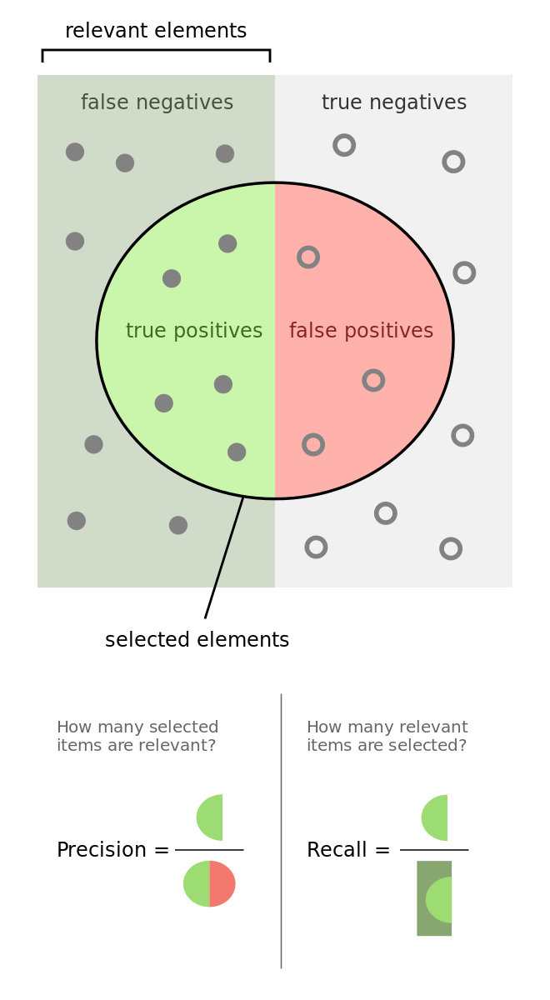
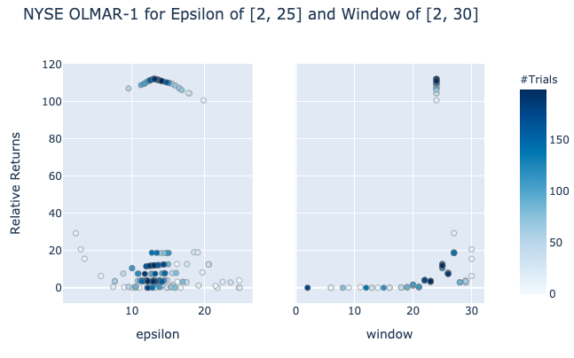

Machine Learning Financial Laboratory (mlfinlab)¶


MlFinlab is a python package which helps portfolio managers and traders who want to leverage the power of machine learning by providing reproducible, interpretable, and easy to use tools. Adding MlFinLab to your companies pipeline is like adding a department of PhD researchers to your team.
pip install mlfinlab
We source all of our implementations from the most elite and peer-reviewed journals. Including publications from:
We are making a big drive to include techniques from various authors, however the most dominant author would be Dr. Marcos Lopez de Prado (QuantResearch.org). This package has its foundations in the two graduate level textbooks:
Praise for MlFinLab¶
“Financial markets are complex systems like no other. Extracting signal from financial data requires specialized tools that are distinct from those used in general machine learning. The MlFinLab package compiles important algorithms that every quant should know and use.”
- Dr. Marcos Lopez de Prado, Co-founder and CIO at True Positive Technologies; Professor of Practice at Cornell University
“Those who doubt open-source libraries just need to look at the impact of Pandas, Scikit-learn, and the like. MIFinLab is doing to financial machine learning what Tensorflow and PyTorch are doing to deep learning.”
- Dr. Ernest Chan, Hedge Fund Manager at QTS & Author
“For many decades, finance has relied on overly simplistic statistical techniques to identify patterns in data. Machine learning promises to change that by allowing researchers to use modern nonlinear and highly dimensional techniques. Yet, applying those machine learning algorithms to model financial problems is easier said than done: finance is not a plug-and-play subject as it relates to machine learning.
MlFinLab provides access to the latest cutting edges methods. MlFinLab is thus essential for quants who want to be ahead of the technology rather than being replaced by it.”
- Dr. Thomas Raffinot, Financial Data Scientist at ENGIE Global Markets
Unlocking the Commons¶
We are currently running a sponsorship model of “Unlocking the Commmons”. Our code base, online documentation, tutorial notebooks and presentations will remain open to everyone for so long as we can meet our minimum sponsorship goals. We have set the deadline: December 2020 - for a monthly total patronage of $4000 USD.
Nadia Eghbal explains it well: “If you’d like to open source a project but want to ensure that others will invest in its long-term maintenance, you could tell your community that you’ll open-source the project once you’ve hit a certain amount of sponsorship. (Writer Tim Carmody refers to this as “unlocking the commons.”)”
Documentation & Tutorials¶
We lower barriers to entry for all users by providing extensive documentation and tutorial notebooks, with code examples.
Who is Hudson & Thames?¶
We are a private research group focused on implementing research based financial machine learning. We all work in virtual teams, spread across the world, primarily: New York, London, and Kyiv.
Sponsors and Donating¶
A special thank you to our sponsors! If you would like to become a sponsor and help support our research, please sign up on Patreon
Benefits include:
Uninterrupted access: Should the code base pivot to closed source - your company will have access to all implementations and the source code.
A seat on the Hudson & Thames advisory council and votes towards the direction of research and implementations.
Ongoing access to slide show presentations and Jupyter Notebooks. (files can be edited to suit your personal needs such as classroom notes or client presentations.)
Company / Organisation profile on www.hudsonthames.org
Use of Hudson & Thames sponsor badge on your website.
Access to our communities Slack Channel.
Subscription to project release updates and news.
Platinum Sponsor:¶
Gold Sponsors:¶
Contact us¶
We host a booming community of like minded data scientists and quants, join the Slack Channel now! Open to sponsors of our package.
The channel has the following benefits:
Community of like minded individuals.
Ask questions about the package implementations and get community feedback.
Occasional presentations on topics within financial machine learning.
A papers channel where we share the papers which are freely available.
Access to members of our research group.
Looking forward to hearing from you!
Early Adopters:¶
Alex Zivkovic |
|||
Егор Тарасенок |
|||
Justin Gerard |
Jason Young |
Austin Hubbell |
|
Jeffrey Wang |
|||
Eric Huang |
Gunther Schulz |
Geoff Foster |
|
Golam Sakline |
Isabel Gonzalez |
Jason Harris |
|
Joshua Cortez |
Kristian Schmidt |
Lucas Astorian |
|
Luque Li |
Minsu Yeom |
||
Paul Morgen |
|||
Bramantyo Erlangga |
Stephen Caraher |
Swaminathan Sethuraman |
|
Thiago Matos |
Thyme Sage |
Tom Celig |
|
William Thompkins |
License¶
This project is licensed under an all rights reserved licence.
LICENSE.txt file for details.
Installation¶
Recommended Versions¶
Anaconda 3
Python 3.6
Installation for Users¶
The package can be installed from the PyPi index via the console: Launch the terminal and run.
pip install mlfinlab
Installation for Developers¶
Clone the package repo to your local machine then follow the steps below.
Mac OS X and Ubuntu Linux¶
Make sure you install the latest version of the Anaconda 3 distribution. To do this you can follow the install and update instructions found on this link
Launch a terminal
Create a New Conda Environment. From terminal.
conda create -n <env name> python=3.6 anaconda
Accept all the requests to install.
Now activate the environment with:
source activate <env name>
From Terminal: go to the directory where you have saved the file, example:
cd Desktop/mlfinlab
Install Python requirements, by running the command:
pip install -r requirements.txt
Windows¶
Download and install the latest version of Anaconda 3
Launch Anaconda Navigator
Click Environments, choose an environment name, select Python 3.6, and click Create
Click Home, browse to your new environment, and click Install under Jupyter Notebook
Launch Anaconda Prompt and activate the environment:
conda activate <env name>
From Anaconda Prompt: go to the directory where you have saved the file, example:
cd Desktop/mlfinlab
Install Python requirements, by running the command:
pip install -r requirements.txt
Join the Slack Channel¶
We host a booming community of like minded data scientists and quants, join the Slack channel now! Open to sponsors of our package.
The channel has the following benefits:
Community of like minded individuals.
Ask questions about the package implementations and get community feedback.
Occasional presentations on topics within financial machine learning.
A papers channel where we share the papers which are freely available.
Access to members of our research group.
Looking forward to hearing from you!
{kind=link}
Barriers to Entry¶
As most of you know, getting through the first 3 chapters of the book is challenging as it relies on HFT data to create the new financial data structures. Sourcing the HFT data is very difficult and thus we have resorted to purchasing the full history of S&P500 Emini futures tick data from TickData LLC.
We are not affiliated with TickData in any way but would like to recommend others to make use of their service. The full history cost us about $750 and is worth every penny. They have really done a great job at cleaning the data and providing it in a user friendly manner.
Sample Data¶
TickData does offer about 20 days worth of raw tick data which can be sourced from their website link.
For those of you interested in working with a two years of sample tick, volume, and dollar bars, it is provided for in the research repo.
You should be able to work on a few implementations of the code with this set.
Additional Sources¶
Searching for free tick data can be a challenging task. The following three sources may help:
Dukascopy. Offers free historical tick data for some futures, though you do have to register.
Most crypto exchanges offer tick data but not historical (see Binance API). So you’d have to run a script for a few days.
Blog Post: How and why I got 75Gb of free foreign exchange “Tick” data.
Become a Researcher¶
The Hudson & Thames Mentorship Program caters to ambitious students looking to make an impact on open-source and develop a portfolio of work based on financial machine learning. You will learn a wealth of skills, with a focus on writing production-level code, based on the most cutting edge research, from elite peer-reviewed journals, such as:
Journal of Financial Data Science
Journal of Portfolio Management
Algorithmic Finance
It is a powerful negotiating tool, when you can approach employers with an array of tools that can add immediate value to their company. To quote GitLab:
“Contributing to open source is the most effective job-seeking hack you can take advantage of right now!”
The program was established to help provide students with a guided path to gaining the Researcher achievement at Hudson and Thames. Once the achievement has been unlocked you will gain lifetime access to our community, libraries, and attribution for all of the work completed. As an optional service, we as a group share expenses for tools and services such as high-quality tick data, journal subscriptions.
The goal of the program is to gain Researcher status. We will guide you through the following achievements:
Make a sizable contribution to the mlfinlab library.
Passed the following production-ready checks: code style and 100% test coverage.
Inline documentation, docstrings, and sphinx documentation.
Completed tutorial notebooks to show mastery of the concepts worked on and provide external users with guided documentation.
Long-form blog article (example) showcasing the newly implemented research. This gives researchers the opportunity to build on their online reputation and show off some of the new skills attained.
Datasets¶
Mlfinlab package contains various financial datasets which can be used by a researcher as sandbox data.
Tick sample¶
Mlfinlab provides a sample of tick data for E-Mini S&P 500 futures which can be used to test bar compression algorithms, microstructural features, etc. Tick data sample consists of Timestamp, Price and Volume.
- load_tick_sample() DataFrame¶
Loads E-Mini S&P 500 futures tick data sample
- Returns:
(pd.DataFrame) with tick data sample
Dollar bars sample¶
We also provide a sample of dollar bars for E-Mini S&P 500 futures. Data set structure:
Open price (open)
High price (high)
Low price (low)
Close price (close)
Volume (cum_volume)
Dollar volume traded (cum_dollar)
Number of ticks inside of bar (cum_ticks)
Tip
You can find more information on dollar bars and other bar compression algorithms in Data Structures
- load_dollar_bar_sample() DataFrame¶
Loads E-Mini S&P 500 futures dollar bars data sample.
- Returns:
(pd.DataFrame) with dollar bar data sample
ETF prices¶
- load_stock_prices() DataFrame¶
Loads stock prices data sets consisting of EEM, EWG, TIP, EWJ, EFA, IEF, EWQ, EWU, XLB, XLE, XLF, LQD, XLK, XLU, EPP, FXI, VGK, VPL, SPY, TLT, BND, CSJ, DIA starting from 2008 till 2016.
- Returns:
(pd.DataFrame) stock_prices data frame
The data set consists of close prices for: EEM, EWG, TIP, EWJ, EFA, IEF, EWQ, EWU, XLB, XLE, XLF, LQD, XLK, XLU, EPP, FXI, VGK, VPL, SPY, TLT, BND, CSJ, DIA starting from 2008 till 2016. It can be used to test and validate portfolio optimization techniques.
Example¶
from mlfinlab.datasets import (load_tick_sample, load_stock_prices, load_dollar_bar_sample)
tick_df = load_tick_sample()
dollar_bars_df = load_dollar_bar_sample()
stock_prices_df = load_stock_prices()
Research Tools¶
As researchers, we often neglect finding the right tools to streamline the progress. Financial Machine Learning is no different in that a lot of the papers are scattered across different journals and different fields. Ranging from journals on econometrics to machine learning, researchers often struggle to find the best academic papers to begin their studies.
At Hudson & Thames, we primarily use two resources: Connected Papers and EThOS. These two free sites have been invaluable and offer an advantage to search through the most cutting edge resources available for our MlFinLab library.
Connected Papers¶
Connected papers is unique in that it is not a citation tree. A citation from a paper does not necessarily lead the reader to another paper. The two topics might be completely different and an unimportant topic for the researcher.
It uniquely identifies the related papers by looking at the cocitation and bibliographic coupling. More about the website is available at the connected papers founder’s medium post.
To give a brief demonstration, we will examine a paper by Li and Hoi that started our Online Portfolio Selection module.
If you type in the name of the paper, you will see a graph like the one below.
{kind=link}
It immediately shows which are the most associated papers. The darker circles indicate that they are more recent, so we can easily follow from the older papers to the newer ones. Connected papers also has an amazing feature for prior works and derivative works.
Prior works is available for researchers to see what are the most famous and cited papers in this field to recognize the importance and start with the baseline material. If we click the button for prior works, for our current search, we see an image like this:
{kind=link}
We can easily see which were the most cited papers. It is not surprising that the number one paper associated with Online Portfolio Selection is Thomas Cover’s Universal Portfolio, the original paper that began the studies in Portfolio Selection based on information theory.
Once the researcher gets more familiar with the topic by going through literature review with prior works, they can move on to the derivative works, which cover the most recent papers associated with the paper of interest.
{kind=link}
EThOS¶
EThOS is a online library sponsored by the United Kingdom to make publicly-funded research available to all researchers.
The best feature for EThOS is the availability of all doctoral theses in the UK. If your topic of interest does not have too many sources from journals, there is a high chance that you can find good works in EThOS as it is not limited to published journals but rather all doctoral theses as well.
Data Structures¶
When analyzing financial data, unstructured data sets, in this case tick data, are commonly transformed into a structured format referred to as bars, where a bar represents a row in a table. mlfinlab implements tick, volume, and dollar bars using traditional standard bar methods as well as the less common information driven bars.
Standard Bars¶
The four standard bar methods implemented share a similar underlying idea in that they take a sample of data after a certain threshold is reached and they all result in a time series of Open, High, Low, and Close data.
Time bars, are sampled after a fixed interval of time has passed.
Tick bars, are sampled after a fixed number of ticks have taken place.
Volume bars, are sampled after a fixed number of contracts (volume) has been traded.
Dollar bars, are sampled after a fixed monetary amount has been traded.
These bars are used throughout the text book (Advances in Financial Machine Learning, By Marcos Lopez de Prado, 2018, pg 25) to build the more interesting features for predicting financial time series data.
Tip
A fundamental paper that you need to read to have a better grasp on these concepts is: Easley, David, Marcos M. López de Prado, and Maureen O’Hara. “The volume clock: Insights into the high-frequency paradigm.” The Journal of Portfolio Management 39.1 (2012): 19-29.
Tip
A threshold can be either fixed (given as float) or dynamic (given as pd.Series). If a dynamic threshold is used
then there is no need to declare threshold for every observation. Values are needed only for the first observation
(or any time before it) and later at times when the threshold is changed to a new value.
Whenever sampling is made, the most recent threshold level is used.
An example for volume bars We have daily observations of prices and volumes:
Time |
Price |
Volume |
|---|---|---|
20.04.2020 |
1000 |
10 |
21.04.2020 |
990 |
10 |
22.04.2020 |
1000 |
20 |
23.04.2020 |
1100 |
10 |
24.04.2020 |
1000 |
10 |
And we set a dynamic threshold:
Time |
Threshold |
|---|---|
20.04.2020 |
20 |
23.04.2020 |
10 |
The data will be sampled as follows:
20.04.2020 and 21.04.2020 into one bar, as their volume is 20.
22.04.2020 as a single bar, as its volume is 20.
23.04.2020 as a single bar, as it now fills the lower volume threshold of 10.
24.04.2020 as a single bar again.
Time Bars¶
These are the traditional open, high, low, close bars that traders are used to seeing. The problem with using this sampling technique is that information doesn’t arrive to market in a chronological clock, i.e. news event don’t occur on the hour - every hour.
It is for this reason that Time Bars have poor statistical properties in comparison to the other sampling techniques.
- get_time_bars(file_path_or_df: str | Iterable[str] | DataFrame, resolution: str = 'D', num_units: int = 1, batch_size: int = 20000000, verbose: bool = True, to_csv: bool = False, output_path: str | None = None)¶
Creates Time Bars: date_time, open, high, low, close, volume, cum_buy_volume, cum_ticks, cum_dollar_value.
- Parameters:
file_path_or_df – (str, iterable of str, or pd.DataFrame) Path to the csv file(s) or Pandas Data Frame containing raw tick data in the format[date_time, price, volume]
resolution – (str) Resolution type (‘D’, ‘H’, ‘MIN’, ‘S’)
num_units – (int) Number of resolution units (3 days for example, 2 hours)
batch_size – (int) The number of rows per batch. Less RAM = smaller batch size.
verbose – (int) Print out batch numbers (True or False)
to_csv – (bool) Save bars to csv after every batch run (True or False)
output_path – (str) Path to csv file, if to_csv is True
- Returns:
(pd.DataFrame) Dataframe of time bars, if to_csv=True return None
Tick Bars¶
- get_tick_bars(file_path_or_df: str | Iterable[str] | DataFrame, threshold: float | Series = 70000000, batch_size: int = 20000000, verbose: bool = True, to_csv: bool = False, output_path: str | None = None)¶
Creates the tick bars: date_time, open, high, low, close, volume, cum_buy_volume, cum_ticks, cum_dollar_value.
- Parameters:
file_path_or_df – (str, iterable of str, or pd.DataFrame) Path to the csv file(s) or Pandas Data Frame containing raw tick data in the format[date_time, price, volume]
threshold – (float, or pd.Series) A cumulative value above this threshold triggers a sample to be taken. If a series is given, then at each sampling time the closest previous threshold is used. (Values in the series can only be at times when the threshold is changed, not for every observation)
batch_size – (int) The number of rows per batch. Less RAM = smaller batch size.
verbose – (bool) Print out batch numbers (True or False)
to_csv – (bool) Save bars to csv after every batch run (True or False)
output_path – (str) Path to csv file, if to_csv is True
- Returns:
(pd.DataFrame) Dataframe of volume bars
from mlfinlab.data_structures import standard_data_structures
# Tick Bars
tick = standard_data_structures.get_tick_bars('FILE_PATH', threshold=5500,
batch_size=1000000, verbose=False)
Volume Bars¶
- get_volume_bars(file_path_or_df: str | Iterable[str] | DataFrame, threshold: float | Series = 70000000, batch_size: int = 20000000, verbose: bool = True, to_csv: bool = False, output_path: str | None = None)¶
Creates the volume bars: date_time, open, high, low, close, volume, cum_buy_volume, cum_ticks, cum_dollar_value.
Following the paper “The Volume Clock: Insights into the high frequency paradigm” by Lopez de Prado, et al, it is suggested that using 1/50 of the average daily volume, would result in more desirable statistical properties.
- Parameters:
file_path_or_df – (str, iterable of str, or pd.DataFrame) Path to the csv file(s) or Pandas Data Frame containing raw tick data in the format[date_time, price, volume]
threshold – (float, or pd.Series) A cumulative value above this threshold triggers a sample to be taken. If a series is given, then at each sampling time the closest previous threshold is used. (Values in the series can only be at times when the threshold is changed, not for every observation)
batch_size – (int) The number of rows per batch. Less RAM = smaller batch size.
verbose – (bool) Print out batch numbers (True or False)
to_csv – (bool) Save bars to csv after every batch run (True or False)
output_path – (str) Path to csv file, if to_csv is True
- Returns:
(pd.DataFrame) Dataframe of volume bars
from mlfinlab.data_structures import standard_data_structures
# Volume Bars
volume = standard_data_structures.get_volume_bars('FILE_PATH', threshold=28000,
batch_size=1000000, verbose=False)
Dollar Bars¶
- get_dollar_bars(file_path_or_df: str | Iterable[str] | DataFrame, threshold: float | Series = 70000000, batch_size: int = 20000000, verbose: bool = True, to_csv: bool = False, output_path: str | None = None)¶
Creates the dollar bars: date_time, open, high, low, close, volume, cum_buy_volume, cum_ticks, cum_dollar_value.
Following the paper “The Volume Clock: Insights into the high frequency paradigm” by Lopez de Prado, et al, it is suggested that using 1/50 of the average daily dollar value, would result in more desirable statistical properties.
- Parameters:
file_path_or_df – (str, iterable of str, or pd.DataFrame) Path to the csv file(s) or Pandas Data Frame containing raw tick data in the format[date_time, price, volume]
threshold – (float, or pd.Series) A cumulative value above this threshold triggers a sample to be taken. If a series is given, then at each sampling time the closest previous threshold is used. (Values in the series can only be at times when the threshold is changed, not for every observation)
batch_size – (int) The number of rows per batch. Less RAM = smaller batch size.
verbose – (bool) Print out batch numbers (True or False)
to_csv – (bool) Save bars to csv after every batch run (True or False)
output_path – (str) Path to csv file, if to_csv is True
- Returns:
(pd.DataFrame) Dataframe of dollar bars
from mlfinlab.data_structures import standard_data_structures
# Dollar Bars
dollar = standard_data_structures.get_dollar_bars('FILE_PATH', threshold=70000000,
batch_size=1000000, verbose=True)
Statistical Properties¶
The chart below that tick, volume, and dollar bars all exhibit a distribution significantly closer to normal - versus standard time bars:

Information-Driven Bars¶
Information-driven bars are based on the notion of sampling a bar when new information arrives to the market. The two types of information-driven bars implemented are imbalance bars and run bars. For each type, tick, volume, and dollar bars are included.
Imbalance Bars¶
2 types of imbalance bars are implemented in mlfinlab:
Expected number of ticks, defined as EMA (book implementation)
Constant number of expected number of ticks.
Imbalance Bars Generation Algorithm¶
Let’s discuss the generation of imbalance bars on an example of volume imbalance bars. As it is described in Advances in Financial Machine Learning book:
First let’s define what is the tick rule:
For any given \(t\), where \(p_t\) is the price associated with \(t\) and \(v_t\) is volume, the tick rule \(b_t\) is defined as:
Tick rule is used as a proxy of trade direction, however, some data providers already provide customers with tick direction, in this case we don’t need to calculate tick rule, just use the provided tick direction instead.
Cumulative volume imbalance from \(1\) to \(T\) is defined as:
Where \(T\) is the time when the bar is sampled.
Next we need to define \(E_0[T]\) as the expected number of ticks, the book suggests to use a exponentially weighted moving average (EWMA) of the expected number of ticks from previously generated bars. Let’s introduce the first hyperparameter for imbalance bars generation: num_prev_bars which corresponds to the window used for EWMA calculation.
Here we face the problem of the first bar’s generation, because we don’t know the expected number of ticks upfront. To solve this we introduce the second hyperparameter: expected_num_ticks_init which corresponds to initial guess for expected number of ticks before the first imbalance bar is generated.
Bar is sampled when:
To estimate (expected imbalance) we simply calculate the EWMA of volume imbalance from previous bars, that is why we need to store volume imbalances in an imbalance array, the window for estimation is either expected_num_ticks_init before the first bar is sampled, or expected number of ticks(\(E_0[T]\)) * num_prev_bars when the first bar is generated.
Note that when we have at least one imbalance bar generated we update \(2v^+ - E_0[v_t]\) only when the next bar is sampled and not on every trade observed
Algorithm Logic¶
Now that we have understood the logic of the imbalance bar generation, let’s understand the process in further detail.
num_prev_bars = 3
expected_num_ticks_init = 100000
expected_num_ticks = expected_num_ticks_init
cum_theta = 0
num_ticks = 0
imbalance_array = []
imbalance_bars = []
bar_length_array = []
for row in data.rows:
#track high,low,close, volume info
num_ticks += 1
tick_rule = get_tick_rule(price, prev_price)
volume_imbalance = tick_rule * row['volume']
imbalance_array.append(volume_imbalance)
cum_theta += volume_imbalance
if len(imbalance_bars) == 0 and len(imbalance_array) >= expected_num_ticks_init:
expected_imbalance = ewma(imbalance_array, window=expected_num_ticks_init)
if abs(cum_theta) >= expected_num_ticks * abs(expected_imbalance):
bar = form_bar(open, high, low, close, volume)
imbalance_bars.append(bar)
bar_length_array.append(num_ticks)
cum_theta, num_ticks = 0, 0
expected_num_ticks = ewma(bar_lenght_array, window=num_prev_bars)
expected_imbalance = ewma(imbalance_array, window = num_prev_bars*expected_num_ticks)
Note that in algorithm pseudo-code we reset \(\theta_t\) when bar is formed, in our case the formula for \(\theta_t\) is:
Let’s look at dynamics of \(|\theta_t|\) and \(E_0[T] * |2v^+ - E_0[v_t]|\) to understand why we decided to reset \(\theta_t\) when a bar is formed. The following figure highlights the dynamics when theta value is reset:

Note that on the first set of ticks, the threshold condition is not stable. Remember, before the first bar is generated, the expected imbalance is calculated on every tick with window = expected_num_ticks_init, that is why it changes with every tick. After the first bar was generated both expected number of ticks (\(E_0[T]\)) and expected volume imbalance (\(2v^+ - E_0[v_t]\)) are updated only when the next bar is generated
When theta is not reset:

The reason for that is due to the fact that theta is accumulated when several bars are generated theta value is not reset \(\Rightarrow\) condition is met on small number of ticks \(\Rightarrow\) length of the next bar converges to 1 \(\Rightarrow\) bar is sampled on the next consecutive tick.
The logic described above is implemented in the mlfinlab package under ImbalanceBars
Implementation¶
- get_ema_dollar_imbalance_bars(file_path_or_df: str | Iterable[str] | DataFrame, num_prev_bars: int = 3, expected_imbalance_window: int = 10000, exp_num_ticks_init: int = 20000, exp_num_ticks_constraints: List[float] | None = None, batch_size: int = 20000000.0, analyse_thresholds: bool = False, verbose: bool = True, to_csv: bool = False, output_path: str | None = None)¶
Creates the EMA dollar imbalance bars: date_time, open, high, low, close, volume, cum_buy_volume, cum_ticks, cum_dollar_value.
- Parameters:
file_path_or_df – (str, iterable of str, or pd.DataFrame) Path to the csv file(s) or Pandas Data Frame containing raw tick data in the format[date_time, price, volume]
num_prev_bars – (int) Window size for E[T]s (number of previous bars to use for expected number of ticks estimation)
expected_imbalance_window – (int) EMA window used to estimate expected imbalance
exp_num_ticks_init – (int) Initial expected number of ticks per bar
exp_num_ticks_constraints – (list) Minimum and maximum possible number of expected ticks. Used to control bars sampling convergence
batch_size – (int) The number of rows per batch. Less RAM = smaller batch size.
verbose – (bool) Print out batch numbers (True or False)
to_csv – (bool) Save bars to csv after every batch run (True or False)
analyse_thresholds – (bool) Flag to save and return thresholds used to sample imbalance bars
output_path – (str) Path to csv file, if to_csv is True
- Returns:
(pd.DataFrame) DataFrame of dollar imbalance bars and DataFrame of thresholds, if to_csv=True returns None
- get_ema_volume_imbalance_bars(file_path_or_df: str | Iterable[str] | DataFrame, num_prev_bars: int = 3, expected_imbalance_window: int = 10000, exp_num_ticks_init: int = 20000, exp_num_ticks_constraints: List[float] | None = None, batch_size: int = 20000000.0, analyse_thresholds: bool = False, verbose: bool = True, to_csv: bool = False, output_path: str | None = None)¶
Creates the EMA volume imbalance bars: date_time, open, high, low, close, volume, cum_buy_volume, cum_ticks, cum_dollar_value.
- Parameters:
file_path_or_df – (str, iterable of str, or pd.DataFrame) Path to the csv file(s) or Pandas Data Frame containing raw tick data in the format[date_time, price, volume]
num_prev_bars – (int) Window size for E[T]s (number of previous bars to use for expected number of ticks estimation)
expected_imbalance_window – (int) EMA window used to estimate expected imbalance
exp_num_ticks_init – (int) Initial expected number of ticks per bar
exp_num_ticks_constraints – (list) Minimum and maximum possible number of expected ticks. Used to control bars sampling convergence
batch_size – (int) The number of rows per batch. Less RAM = smaller batch size.
verbose – (bool) Print out batch numbers (True or False)
to_csv – (bool) Save bars to csv after every batch run (True or False)
analyse_thresholds – (bool) Flag to save and return thresholds used to sample imbalance bars
output_path – (str) Path to csv file, if to_csv is True
- Returns:
(pd.DataFrame) DataFrame of volume imbalance bars and DataFrame of thresholds, if to_csv=True returns None
- get_ema_tick_imbalance_bars(file_path_or_df: str | Iterable[str] | DataFrame, num_prev_bars: int = 3, expected_imbalance_window: int = 10000, exp_num_ticks_init: int = 20000, exp_num_ticks_constraints: List[float] | None = None, batch_size: int = 20000000.0, analyse_thresholds: bool = False, verbose: bool = True, to_csv: bool = False, output_path: str | None = None)¶
Creates the EMA tick imbalance bars: date_time, open, high, low, close, volume, cum_buy_volume, cum_ticks, cum_dollar_value.
- Parameters:
file_path_or_df – (str, iterable of str, or pd.DataFrame) Path to the csv file(s) or Pandas Data Frame containing raw tick data in the format[date_time, price, volume]
num_prev_bars – (int) Window size for E[T]s (number of previous bars to use for expected number of ticks estimation)
expected_imbalance_window – (int) EMA window used to estimate expected imbalance
exp_num_ticks_init – (int) Initial expected number of ticks per bar
exp_num_ticks_constraints – (array) Minimum and maximum possible number of expected ticks. Used to control bars sampling convergence
batch_size – (int) The number of rows per batch. Less RAM = smaller batch size.
verbose – (bool) Print out batch numbers (True or False)
to_csv – (bool) Save bars to csv after every batch run (True or False)
analyse_thresholds – (bool) Flag to save and return thresholds used to sample imbalance bars
output_path – (str) Path to csv file, if to_csv is True
- Returns:
(pd.DataFrame) DataFrame of tick imbalance bars and DataFrame of thresholds, if to_csv=True returns None
- get_const_dollar_imbalance_bars(file_path_or_df: str | Iterable[str] | DataFrame, expected_imbalance_window: int = 10000, exp_num_ticks_init: int = 20000, batch_size: int = 20000000.0, analyse_thresholds: bool = False, verbose: bool = True, to_csv: bool = False, output_path: str | None = None)¶
Creates the Const dollar imbalance bars: date_time, open, high, low, close, volume, cum_buy_volume, cum_ticks, cum_dollar_value.
- Parameters:
file_path_or_df – (str, iterable of str, or pd.DataFrame) Path to the csv file(s) or Pandas Data Frame containing raw tick data in the format[date_time, price, volume]
expected_imbalance_window – (int) EMA window used to estimate expected imbalance
exp_num_ticks_init – (int) Initial expected number of ticks per bar
batch_size – (int) The number of rows per batch. Less RAM = smaller batch size.
verbose – (bool) Print out batch numbers (True or False)
to_csv – (bool) Save bars to csv after every batch run (True or False)
analyse_thresholds – (bool) Flag to save and return thresholds used to sample imbalance bars
output_path – (str) Path to csv file, if to_csv is True
- Returns:
(pd.DataFrame) DataFrame of dollar imbalance bars and DataFrame of thresholds, if to_csv=True returns None
- get_const_volume_imbalance_bars(file_path_or_df: str | Iterable[str] | DataFrame, expected_imbalance_window: int = 10000, exp_num_ticks_init: int = 20000, batch_size: int = 20000000.0, analyse_thresholds: bool = False, verbose: bool = True, to_csv: bool = False, output_path: str | None = None)¶
Creates the Const volume imbalance bars: date_time, open, high, low, close, volume, cum_buy_volume, cum_ticks, cum_dollar_value.
- Parameters:
file_path_or_df – (str, iterable of str, or pd.DataFrame) Path to the csv file(s) or Pandas Data Frame containing raw tick data in the format[date_time, price, volume]
expected_imbalance_window – (int) EMA window used to estimate expected imbalance
exp_num_ticks_init – (int) Initial expected number of ticks per bar
batch_size – (int) The number of rows per batch. Less RAM = smaller batch size.
verbose – (bool) Print out batch numbers (True or False)
to_csv – (bool) Save bars to csv after every batch run (True or False)
analyse_thresholds – (bool) Flag to save and return thresholds used to sample imbalance bars
output_path – (str) Path to csv file, if to_csv is True
- Returns:
(pd.DataFrame) DataFrame of volume imbalance bars and DataFrame of thresholds, if to_csv=True returns None
- get_const_tick_imbalance_bars(file_path_or_df: str | Iterable[str] | DataFrame, expected_imbalance_window: int = 10000, exp_num_ticks_init: int = 20000, batch_size: int = 20000000.0, analyse_thresholds: bool = False, verbose: bool = True, to_csv: bool = False, output_path: str | None = None)¶
Creates the Const tick imbalance bars: date_time, open, high, low, close, volume, cum_buy_volume, cum_ticks, cum_dollar_value.
- Parameters:
file_path_or_df – (str or pd.DataFrame) Path to the csv file or Pandas Data Frame containing raw tick data in the format[date_time, price, volume]
expected_imbalance_window – (int) EMA window used to estimate expected imbalance
exp_num_ticks_init – (int) Initial expected number of ticks per bar
batch_size – (int) The number of rows per batch. Less RAM = smaller batch size.
verbose – (bool) Print out batch numbers (True or False)
to_csv – (bool) Save bars to csv after every batch run (True or False)
analyse_thresholds – (bool) Flag to save and return thresholds used to sample imbalance bars
output_path – (str) Path to csv file, if to_csv is True
- Returns:
(pd.DataFrame) DataFrame of tick imbalance bars and DataFrame of thresholds, if to_csv=True returns None
Example¶
from mlfinlab.data_structures import get_ema_dollar_imbalance_bars, get_const_dollar_imbalance_bars
# EMA, Const Dollar Imbalance Bars
dollar_imbalance_ema = get_ema_dollar_imbalance_bars('FILE_PATH', num_prev_bars=3, exp_num_ticks_init=100000,
exp_num_ticks_constraints=[100, 1000], expected_imbalance_window=10000)
dollar_imbalance_const = get_const_dollar_imbalance_bars('FILE_PATH', exp_num_ticks_init=100000, expected_imbalance_window=10000)
Run Bars¶
Run bars share the same mathematical structure as imbalance bars, however, instead of looking at each individual trade, we are looking at sequences of trades in the same direction. The idea is that we are trying to detect order flow imbalance caused by actions such as large traders sweeping the order book or iceberg orders.
2 types of run bars are implemented in mlfinlab:
Expected number of ticks, defined as EWMA (book implementation)
Constant number of expected number of ticks.
Implementation¶
- get_ema_dollar_run_bars(file_path_or_df: str | Iterable[str] | DataFrame, num_prev_bars: int = 3, expected_imbalance_window: int = 10000, exp_num_ticks_init: int = 20000, exp_num_ticks_constraints: List[float] | None = None, batch_size: int = 20000000.0, analyse_thresholds: bool = False, verbose: bool = True, to_csv: bool = False, output_path: str | None = None)¶
Creates the EMA dollar run bars: date_time, open, high, low, close, volume, cum_buy_volume, cum_ticks, cum_dollar_value.
- Parameters:
file_path_or_df – (str, iterable of str, or pd.DataFrame) Path to the csv file(s) or Pandas Data Frame containing raw tick data in the format[date_time, price, volume]
num_prev_bars – (int) Window size for E[T]s (number of previous bars to use for expected number of ticks estimation)
expected_imbalance_window – (int) EMA window used to estimate expected run
exp_num_ticks_init – (int) Initial expected number of ticks per bar
exp_num_ticks_constraints – (list) Minimum and maximum possible number of expected ticks. Used to control bars sampling convergence
batch_size – (int) The number of rows per batch. Less RAM = smaller batch size.
verbose – (bool) Print out batch numbers (True or False)
to_csv – (bool) Save bars to csv after every batch run (True or False)
analyse_thresholds – (bool) Flag to save and return thresholds used to sample run bars
output_path – (str) Path to csv file, if to_csv is True
- Returns:
(pd.DataFrame) DataFrame of dollar bars and DataFrame of thresholds
- get_ema_volume_run_bars(file_path_or_df: str | Iterable[str] | DataFrame, num_prev_bars: int = 3, expected_imbalance_window: int = 10000, exp_num_ticks_init: int = 20000, exp_num_ticks_constraints: List[float] | None = None, batch_size: int = 20000000.0, analyse_thresholds: bool = False, verbose: bool = True, to_csv: bool = False, output_path: str | None = None)¶
Creates the EMA volume run bars: date_time, open, high, low, close, volume, cum_buy_volume, cum_ticks, cum_dollar_value.
- Parameters:
file_pats_or_df – (str, iterable of str, or pd.DataFrame) Path to the csv file(s) or Pandas Data Frame containing raw tick data in the format[date_time, price, volume]
num_prev_bars – (int) Window size for E[T]s (number of previous bars to use for expected number of ticks estimation)
expected_imbalance_window – (int) EMA window used to estimate expected run
exp_num_ticks_init – (int) Initial expected number of ticks per bar
exp_num_ticks_constraints – (list) Minimum and maximum possible number of expected ticks. Used to control bars sampling convergence
batch_size – (int) The number of rows per batch. Less RAM = smaller batch size.
verbose – (bool) Print out batch numbers (True or False)
to_csv – (bool) Save bars to csv after every batch run (True or False)
analyse_thresholds – (bool) Flag to save and return thresholds used to sample run bars
output_path – (str) Path to csv file, if to_csv is True
- Returns:
(pd.DataFrame) DataFrame of volume bars and DataFrame of thresholds
- get_ema_tick_run_bars(file_path_or_df: str | Iterable[str] | DataFrame, num_prev_bars: int = 3, expected_imbalance_window: int = 10000, exp_num_ticks_init: int = 20000, exp_num_ticks_constraints: List[float] | None = None, batch_size: int = 20000000.0, analyse_thresholds: bool = False, verbose: bool = True, to_csv: bool = False, output_path: str | None = None)¶
Creates the EMA tick run bars: date_time, open, high, low, close, volume, cum_buy_volume, cum_ticks, cum_dollar_value.
- Parameters:
file_path_or_df – (str, iterable of str, or pd.DataFrame) Path to the csv file(s) or Pandas Data Frame containing raw tick data in the format[date_time, price, volume]
num_prev_bars – (int) Window size for E[T]s (number of previous bars to use for expected number of ticks estimation)
expected_imbalance_window – (int) EMA window used to estimate expected run
exp_num_ticks_init – (int) Initial expected number of ticks per bar
exp_num_ticks_constraints – (list) Minimum and maximum possible number of expected ticks. Used to control bars sampling convergence
batch_size – (int) The number of rows per batch. Less RAM = smaller batch size.
verbose – (bool) Print out batch numbers (True or False)
to_csv – (bool) Save bars to csv after every batch run (True or False)
analyse_thresholds – (bool) Flag to save and return thresholds used to sample run bars
output_path – (str) Path to csv file, if to_csv is True
- Returns:
(pd.DataFrame) DataFrame of tick bars and DataFrame of thresholds
- get_const_dollar_run_bars(file_path_or_df: str | Iterable[str] | DataFrame, num_prev_bars: int, expected_imbalance_window: int = 10000, exp_num_ticks_init: int = 20000, batch_size: int = 20000000.0, analyse_thresholds: bool = False, verbose: bool = True, to_csv: bool = False, output_path: str | None = None)¶
Creates the Const dollar run bars: date_time, open, high, low, close, volume, cum_buy_volume, cum_ticks, cum_dollar_value.
- Parameters:
file_path_or_df – (str, iterable of str, or pd.DataFrame) Path to the csv file(s) or Pandas Data Frame containing raw tick data in the format[date_time, price, volume]
num_prev_bars – (int) Window size for estimating buy ticks proportion (number of previous bars to use in EWMA)
expected_imbalance_window – (int) EMA window used to estimate expected imbalance
exp_num_ticks_init – (int) Initial expected number of ticks per bar
batch_size – (int) The number of rows per batch. Less RAM = smaller batch size.
verbose – (bool) Print out batch numbers (True or False)
to_csv – (bool) Save bars to csv after every batch run (True or False)
analyse_thresholds – (bool) Flag to save and return thresholds used to sample run bars
output_path – (str) Path to csv file, if to_csv is True
- Returns:
(pd.DataFrame) DataFrame of dollar bars and DataFrame of thresholds, if to_csv=True returns None
- get_const_volume_run_bars(file_path_or_df: str | Iterable[str] | DataFrame, num_prev_bars: int, expected_imbalance_window: int = 10000, exp_num_ticks_init: int = 20000, batch_size: int = 20000000.0, analyse_thresholds: bool = False, verbose: bool = True, to_csv: bool = False, output_path: str | None = None)¶
Creates the Const volume run bars: date_time, open, high, low, close, volume, cum_buy_volume, cum_ticks, cum_dollar_value.
- Parameters:
file_path_or_df – (str, iterable of str, or pd.DataFrame) Path to the csv file(s) or Pandas Data Frame containing raw tick data in the format[date_time, price, volume]
num_prev_bars – (int) Window size for estimating buy ticks proportion (number of previous bars to use in EWMA)
expected_imbalance_window – (int) EMA window used to estimate expected imbalance
exp_num_ticks_init – (int) Initial expected number of ticks per bar
batch_size – (int) The number of rows per batch. Less RAM = smaller batch size.
verbose – (bool) Print out batch numbers (True or False)
to_csv – (bool) Save bars to csv after every batch run (True or False)
analyse_thresholds – (bool) Flag to save and return thresholds used to sample run bars
output_path – (str) Path to csv file, if to_csv is True
- Returns:
(pd.DataFrame) DataFrame of volume bars and DataFrame of thresholds
- get_const_tick_run_bars(file_path_or_df: str | Iterable[str] | DataFrame, num_prev_bars: int, expected_imbalance_window: int = 10000, exp_num_ticks_init: int = 20000, batch_size: int = 20000000.0, analyse_thresholds: bool = False, verbose: bool = True, to_csv: bool = False, output_path: str | None = None)¶
Creates the Const tick run bars: date_time, open, high, low, close, volume, cum_buy_volume, cum_ticks, cum_dollar_value.
- Parameters:
file_path_or_df – (str, iterable of str, or pd.DataFrame) Path to the csv file(s) or Pandas Data Frame containing raw tick data in the format[date_time, price, volume]
num_prev_bars – (int) Window size for estimating buy ticks proportion (number of previous bars to use in EWMA)
expected_imbalance_window – (int) EMA window used to estimate expected imbalance
exp_num_ticks_init – (int) Initial expected number of ticks per bar
batch_size – (int) The number of rows per batch. Less RAM = smaller batch size.
verbose – (bool) Print out batch numbers (True or False)
to_csv – (bool) Save bars to csv after every batch run (True or False)
analyse_thresholds – (bool) Flag to save and return thresholds used to sample run bars
output_path – (str) Path to csv file, if to_csv is True
- Returns:
(pd.DataFrame) DataFrame of tick bars and DataFrame of thresholds
Example¶
from mlfinlab.data_structures import get_ema_dollar_run_bars, get_const_dollar_run_bars
# EMA, Const Dollar Imbalance Bars
dollar_imbalance_ema = get_ema_dollar_run_bars('FILE_PATH', num_prev_bars=3, exp_num_ticks_init=100000,
exp_num_ticks_constraints=[100, 1000], expected_imbalance_window=10000)
dollar_imbalance_const = get_const_dollar_run_bars('FILE_PATH', num_prev_bars=3, exp_num_ticks_init=100000,
expected_imbalance_window=10000)
Research Notebooks¶
The following research notebooks can be used to better understand the previously discussed data structures
Standard Bars¶
Imbalance Bars¶
Data Preparation Tutorial¶
First import your tick data.
# Required Imports
import numpy as np
import pandas as pd
data = pd.read_csv('data.csv')
In order to utilize the bar sampling methods presented below, our data must first be formatted properly. Many data vendors will let you choose the format of your raw tick data files. We want to only focus on the following 3 columns: date_time, price, volume. The reason for this is to minimise the size of the csv files and the amount of time when reading in the files.
Our data is sourced from TickData LLC which provides software called TickWrite, to aid in the formatting of saved files. This allows us to save csv files in the format date_time, price, volume. (If you don’t use TickWrite then make sure to pre-format your files)
For this tutorial we will assume that you need to first do some pre-processing and then save your data to a csv file.
# Don't convert to datetime here, it will take forever to convert
# on account of the sheer size of tick data files.
date_time = data['Date'] + ' ' + data['Time']
new_data = pd.concat([date_time, data['Price'], data['Volume']], axis=1)
new_data.columns = ['date', 'price', 'volume']
Initially, your instinct may be to pass an in-memory DataFrame object but the truth is when you’re running the function in production, your raw tick data csv files will be way too large to hold in memory. We used the subset 2011 to 2019 and it was more than 25 gigs. It is for this reason that the mlfinlab package suggests using a file path to read the raw data files from disk.
# Save to csv
new_data.to_csv('FILE_PATH', index=False)
Filters¶
Filters are used to filter events based on some kind of trigger. For example a structural break filter can be used to filter events where a structural break occurs. In Triple-Barrier labeling, this event is then used to measure the return from the event to some event horizon, say a day.
The core idea is that labeling every trading day is a fools errand, researchers should instead focus on forecasting specific market anomalies or how the market moves after an event.
CUSUM Filter¶
- cusum_filter(raw_time_series, threshold, time_stamps=True)¶
Advances in Financial Machine Learning, Snippet 2.4, page 39.
The Symmetric Dynamic/Fixed CUSUM Filter.
The CUSUM filter is a quality-control method, designed to detect a shift in the mean value of a measured quantity away from a target value. The filter is set up to identify a sequence of upside or downside divergences from any reset level zero. We sample a bar t if and only if S_t >= threshold, at which point S_t is reset to 0.
One practical aspect that makes CUSUM filters appealing is that multiple events are not triggered by raw_time_series hovering around a threshold level, which is a flaw suffered by popular market signals such as Bollinger Bands. It will require a full run of length threshold for raw_time_series to trigger an event.
Once we have obtained this subset of event-driven bars, we will let the ML algorithm determine whether the occurrence of such events constitutes actionable intelligence. Below is an implementation of the Symmetric CUSUM filter.
Note: As per the book this filter is applied to closing prices but we extended it to also work on other time series such as volatility.
- Parameters:
raw_time_series – (pd.Series) Close prices (or other time series, e.g. volatility).
threshold – (float or pd.Series) When the abs(change) is larger than the threshold, the function captures it as an event, can be dynamic if threshold is pd.Series
time_stamps – (bool) Default is to return a DateTimeIndex, change to false to have it return a list.
- Returns:
(datetime index vector) Vector of datetimes when the events occurred. This is used later to sample.
An example showing how the CUSUM filter can be used to downsample a time series of close prices can be seen below:
from mlfinlab.filters import cusum_filter
cusum_events = cusum_filter(data['close'], threshold=0.05)
Z-Score Filter¶
The Z-Score filter is used to define explosive/peak points in time series.
It uses rolling simple moving average, rolling simple moving standard deviation, and z_score(threshold). When the current time series value exceeds (rolling average + z_score * rolling std) an event is triggered.
- z_score_filter(raw_time_series, mean_window, std_window, z_score=3, time_stamps=True)¶
Filter which implements z_score filter (https://stackoverflow.com/questions/22583391/peak-signal-detection-in-realtime-timeseries-data)
- Parameters:
raw_time_series – (pd.Series) Close prices (or other time series, e.g. volatility).
mean_window – (int): Rolling mean window
std_window – (int): Rolling std window
z_score – (float): Number of standard deviations to trigger the event
time_stamps – (bool) Default is to return a DateTimeIndex, change to false to have it return a list.
- Returns:
(datetime index vector) Vector of datetimes when the events occurred. This is used later to sample.
An example of how the Z-score filter can be used to downsample a time series:
from mlfinlb.filters import z_score_filter
z_score_events = z_score_filter(data['close'], mean_window=100, std_window=100, z_score=3)
Fractionally Differentiated Features¶
One of the challenges of quantitative analysis in finance is that time series of prices have trends or a non-constant mean. This makes the time series is non-stationary. A non-stationary time series are hard to work with when we want to do inferential analysis based on the variance of returns, or probability of loss.
Many supervised learning algorithms have the underlying assumption that the data is stationary. Specifically, in supervised learning, one needs to map hitherto unseen observations to a set of labeled examples and determine the label of the new observation.
According to Marcos Lopez de Prado: “If the features are not stationary we cannot map the new observation to a large number of known examples”. Making time series stationary often requires stationary data transformations, such as integer differentiation. These transformations remove memory from the series. The method proposed by Marcos Lopez de Prado aims to make data stationary while preserving as much memory as possible, as it’s the memory part that has predictive power.
Fractionally differentiated features approach allows differentiating a time series to the point where the series is stationary, but not over differencing such that we lose all predictive power.
Tip
Underlying Literature
The following sources elaborate extensively on the topic:
Advances in Financial Machine Learning, Chapter 5 by Marcos Lopez de Prado. Describes the motivation behind the Fractionally Differentiated Features and algorithms in more detail
Fixed-width Window Fracdiff¶
The following description is based on Chapter 5 of Advances in Financial Machine Learning:
Using a positive coefficient \(d\) the memory can be preserved:
where \(X\) is the original series, the \(\widetilde{X}\) is the fractionally differentiated one, and the weights \(\omega\) are defined as follows:
“When \(d\) is a positive integer number, \(\prod_{i=0}^{k-1}\frac{d-i}{k!} = 0, \forall k > d\), and memory beyond that point is cancelled.”
Given a series of \(T\) observations, for each window length \(l\), the relative weight-loss can be calculated as:
The weight-loss calculation is attributed to a fact that “the initial points have a different amount of memory” ( \(\widetilde{X}_{T-l}\) uses \(\{ \omega \}, k=0, .., T-l-1\) ) compared to the final points ( \(\widetilde{X}_{T}\) uses \(\{ \omega \}, k=0, .., T-1\) ).
With a defined tolerance level \(\tau \in [0, 1]\) a \(l^{*}\) can be calculated so that \(\lambda_{l^{*}} \le \tau\) and \(\lambda_{l^{*}+1} > \tau\), which determines the first \(\{ \widetilde{X}_{t} \}_{t=1,...,l^{*}}\) where “the weight-loss is beyond the acceptable threshold \(\lambda_{t} > \tau\) .”
Without the control of weight-loss the \(\widetilde{X}\) series will pose a severe negative drift. This problem is corrected by using a fixed-width window and not an expanding one.
With a fixed-width window, the weights \(\omega\) are adjusted to \(\widetilde{\omega}\) :
Therefore, the fractionally differentiated series is calculated as:
for \(t = T - l^{*} + 1, ..., T\)
The following graph shows a fractionally differenced series plotted over the original closing price series:

Fractionally differentiated series with a fixed-width window (Lopez de Prado 2018)¶
Tip
A deeper analysis of the problem and the tests of the method on various futures is available in the Chapter 5 of Advances in Financial Machine Learning.
Implementation¶
The following function implemented in mlfinlab can be used to derive fractionally differentiated features.
Stationarity With Maximum Memory Representation¶
The following description is based on Chapter 5 of Advances in Financial Machine Learning:
Applying the fixed-width window fracdiff (FFD) method on series, the minimum coefficient \(d^{*}\) can be computed. With this \(d^{*}\) the resulting fractionally differentiated series is stationary. This coefficient \(d^{*}\) quantifies the amount of memory that needs to be removed to achieve stationarity.
If the input series:
is already stationary, then \(d^{*}=0\).
contains a unit root, then \(d^{*} < 1\).
exhibits explosive behavior (like in a bubble), then \(d^{*} > 1\).
A case of particular interest is \(0 < d^{*} \ll 1\), when the original series is “mildly non-stationary.” In this case, although differentiation is needed, a full integer differentiation removes excessive memory (and predictive power).
The following grap shows how the output of a plot_min_ffd function looks.
{kind=link}
ADF statistic as a function of d¶
The right y-axis on the plot is the ADF statistic computed on the input series downsampled to a daily frequency.
The x-axis displays the d value used to generate the series on which the ADF statistic is computed.
The left y-axis plots the correlation between the original series ( \(d = 0\) ) and the differentiated series at various \(d\) values.
The horizontal dotted line is the ADF test critical value at a 95% confidence level. Based on where the ADF statistic crosses this threshold, the minimum \(d\) value can be defined.
The correlation coefficient at a given \(d\) value can be used to determine the amount of memory that was given up to achieve stationarity. (The higher the correlation - the less memory was given up)
According to Lopez de Prado:
“Virtually all finance papers attempt to recover stationarity by applying an integer differentiation \(d = 1\), which means that most studies have over-differentiated the series, that is, they have removed much more memory than was necessary to satisfy standard econometric assumptions.”
Tip
An example on how the resulting figure can be analyzed is available in Chapter 5 of Advances in Financial Machine Learning.
Implementation¶
The following function implemented in mlfinlab can be used to achieve stationarity with maximum memory representation.
Example¶
Given that we know the amount we want to difference our price series, fractionally differentiated features, and the minimum d value that passes the ADF test can be derived as follows:
import numpy as np
import pandas as pd
from mlfinlab.features.fracdiff import frac_diff_ffd, plot_min_ffd
# Import price data
data = pd.read_csv('FILE_PATH')
# Deriving the fractionally differentiated features
frac_diff_series = frac_diff_ffd(data['close'], 0.5)
# Plotting the graph to find the minimum d
# Make sure the input dataframe has a 'close' column
plot_min_ffd(data)
Research Notebook¶
The following research notebook can be used to better understand fractionally differentiated features.
Structural Breaks¶
This implementation is based on Chapter 17 of the book Advances in Financial Machine Learning. Structural breaks, like the transition from one market regime to another, represent the shift in the behaviour of market participants.
The first market participant to notice the changes in the market can adapt to them before others and, consequently, gain an advantage over market participants who have not yet noticed market regime changes.
To quote Marcos Lopez de Prado, “Structural breaks offer some of the best risk/rewards”.
We can classify the structural break in two general categories:
CUSUM tests: These test whether the cumulative forecasting errors significantly deviate from white noise.
Explosiveness tests: Beyond deviation from white noise, these test whether the process exhibits exponential growth or collapse, as this is inconsistent with a random walk or stationary process, and it is unsustainable in the long run.
Tip
Underlying Literature
The following sources elaborate extensively on the topic:
Advances in Financial Machine Learning by Marcos Lopez de Prado Chapter 17 describes structural breaks in more detail.
Testing for Speculative Bubbles in Stock Markets: A Comparison of Alternative Methods by Ulrich Homm and Jorg Breitung available here. Explains the Chu-Stinchcombe-White CUSUM Test in more detail.
Tests of Equality Between Sets of Coefficients in Two Linear Regressions by Gregory C. Chow available here. A work that inspired a family of explosiveness tests.
CUSUM tests¶
Chu-Stinchcombe-White CUSUM Test on Levels¶
We are given a set of observations \(t = 1, ... , T\) and we assume an array of features \(x_{i}\) to be predictive of a value \(y_{t}\) .
Authors of the Testing for Speculative Bubbles in Stock Markets: A Comparison of Alternative Methods paper suggest assuming \(H_{0} : \beta_{t} = 0\) and therefore forecast \(E_{t-1}[\Delta y_{t}] = 0\). This allows working directly with \(y_{t}\) instead of computing recursive least squares (RLS) estimates of \(\beta\) .
As \(y_{t}\) we take the log-price and calculate the standardized departure of \(y_{t}\) relative to \(y_{n}\) (CUSUM statistic) with \(t > n\) as:
With the \(H_{0} : \beta_{t} = 0\) hypothesis, \(S_{n, t} \sim N[0, 1]\) .
We can test the null hypothesis comparing CUSUM statistic \(S_{n, t}\) with critical value \(c_{\alpha}[n, t]\), which is calculated using a one-sided test as:
The authors in the above paper have derived using Monte Carlo method that \(b_{0.05} = 4.6\) .
The disadvantage is that \(y_{n}\) is chosen arbitrarily, and results may be inconsistent due to that. This can be fixed by estimating \(S_{n, t}\) on backward-shifting windows \(n \in [1, t]\) and picking:
- get_chu_stinchcombe_white_statistics(series: Series, test_type: str = 'one_sided', num_threads: int = 8, verbose: bool = True) Series¶
Multithread Chu-Stinchcombe-White test implementation, p.251
- Parameters:
series – (pd.Series) Series to get statistics for
test_type – (str): Two-sided or one-sided test
num_threads – (int) Number of cores
verbose – (bool) Flag to report progress on asynch jobs
- Returns:
(pd.Series) Statistics
Explosiveness tests¶
Chow-Type Dickey-Fuller Test¶
The Chow-Type Dickey-Fuller test is based on an \(AR(1)\) process:
where \(\varepsilon_{t}\) is white noise.
This test is used for detecting whether the process changes from the random walk (\(\rho = 1\)) into an explosive process at some time \(\tau^{*}T\), \(\tau^{*} \in (0,1)\), where \(T\) is the number of observations.
So, the hypothesis \(H_{0}\) is tested against \(H_{1}\):
To test the hypothesis, the following specification is being fit:
So, the hypothesis tested are now transformed to:
And the Dickey-Fuller-Chow(DFC) test-statistics for \(\tau^*\) is:
As described in the Advances in Financial Machine Learning:
The first drawback of this method is that \(\tau^{*}\) is unknown, and the second one is that Chow’s approach assumes that there is only one break and that the bubble runs up to the end of the sample.
To address the first issue, in the work Tests for Parameter Instability and Structural Change With Unknown ChangePoint available here, Andrews proposed to try all possible \(\tau^{*}\) in an interval \(\tau^{*} \in [\tau_{0}, 1 - \tau_{0}]\)
For the unknown \(\tau^{*}\) the test statistic is the Supremum Dickey-Fuller Chow which is the maximum of all \(T(1 - 2\tau_{0})\) values of \(DFC_{\tau^{*}}\) :
To address the second issue, the Supremum Augmented Dickey-Fuller test was introduced.
- get_chow_type_stat(series: Series, min_length: int = 20, num_threads: int = 8, verbose: bool = True) Series¶
Multithread implementation of Chow-Type Dickey-Fuller Test, p.251-252
- Parameters:
series – (pd.Series) Series to test
min_length – (int) Minimum sample length used to estimate statistics
num_threads – (int): Number of cores to use
verbose – (bool) Flag to report progress on asynch jobs
- Returns:
(pd.Series) Chow-Type Dickey-Fuller Test statistics
Supremum Augmented Dickey-Fuller¶
This test was proposed by Phillips, Shi, and Yu in the work Testing for Multiple Bubbles: Historical Episodes of Exuberance and Collapse in the S&P 500 available here. The advantage of this test is that it allows testing for multiple regimes switches (random walk to bubble and back).
The test is based on the following regression:
And, the hypothesis \(H_{0}\) is tested against \(H_{1}\):
The Supremum Augmented Dickey-Fuller fits the above regression for each end point \(t\) with backward expanding start points and calculates the test-statistic as:
where \(\hat\beta_{t_0,t}\) is estimated on the sample from \(t_{0}\) to \(t\), \(\tau\) is the minimum sample length in the analysis, \(t_{0}\) is the left bound of the backwards expanding window, \(t\) iterates through \([\tau, ..., T]\) .
In comparison to SDFC, which is computed only at time \(T\), the SADF is computed at each \(t \in [\tau, T]\), recursively expanding the sample \(t_{0} \in [1, t - \tau]\) . By doing so, the SADF does not assume a known number of regime switches.
{kind=link}
Image showing SADF test statistic with 5 lags and linear model. The SADF line spikes when prices exhibit a bubble-like behavior, and returns to low levels when the bubble bursts.¶
The model and the add_const parameters of the get_sadf function allow for different specifications of the regression’s time trend component.
Linear model (model=’linear’) uses a linear time trend:
Quadratic model (model=’quadratic’) uses a second-degree polynomial time trend:
Adding a constant (add_const=True) to those specifications results in:
and
respectively.
- get_sadf(series: Series, model: str, lags: int | list, min_length: int, add_const: bool = False, phi: float = 0, num_threads: int = 8, verbose: bool = True) Series¶
Advances in Financial Machine Learning, p. 258-259.
Multithread implementation of SADF
SADF fits the ADF regression at each end point t with backwards expanding start points. For the estimation of SADF(t), the right side of the window is fixed at t. SADF recursively expands the beginning of the sample up to t - min_length, and returns the sup of this set.
When doing with sub- or super-martingale test, the variance of beta of a weak long-run bubble may be smaller than one of a strong short-run bubble, hence biasing the method towards long-run bubbles. To correct for this bias, ADF statistic in samples with large lengths can be penalized with the coefficient phi in [0, 1] such that:
ADF_penalized = ADF / (sample_length ^ phi)
- Parameters:
series – (pd.Series) Series for which SADF statistics are generated
model – (str) Either ‘linear’, ‘quadratic’, ‘sm_poly_1’, ‘sm_poly_2’, ‘sm_exp’, ‘sm_power’
lags – (int or list) Either number of lags to use or array of specified lags
min_length – (int) Minimum number of observations needed for estimation
add_const – (bool) Flag to add constant
phi – (float) Coefficient to penalize large sample lengths when computing SMT, in [0, 1]
num_threads – (int) Number of cores to use
verbose – (bool) Flag to report progress on asynch jobs
- Returns:
(pd.Series) SADF statistics
The function used in the SADF Test to estimate the \(\hat\beta_{t_0,t}\) is:
- get_betas(X: DataFrame, y: DataFrame) Tuple[array, array]¶
Advances in Financial Machine Learning, Snippet 17.4, page 259.
Fitting The ADF Specification (get beta estimate and estimate variance)
- Parameters:
X – (pd.DataFrame) Features(factors)
y – (pd.DataFrame) Outcomes
- Returns:
(np.array, np.array) Betas and variances of estimates
Tip
Advances in Financial Machine Learning book additionally describes why log prices data is more appropriate to use in the above tests, their computational complexity, and other details.
The SADF also allows for explosiveness testing that doesn’t rely on the standard ADF specification. If the process is either sub- or super martingale, the hypotheses \(H_{0}: \beta = 0, H_{1}: \beta \ne 0\) can be tested under these specifications:
Polynomial trend (model=’sm_poly_1’):
Polynomial trend (model=’sm_poly_2’):
Exponential trend (model=’sm_exp’):
Power trend (model=’sm_power’):
Again, the SADF fits the above regressions for each end point \(t\) with backward expanding start points, but the test statistic is taken as an absolute value, as we’re testing both the explosive growth and collapse. This is described in more detail in the Advances in Financial Machine Learning book p. 260.
The test statistic calculated (SMT for Sub/Super Martingale Tests) is:
From the book:
Parameter phi in range (0, 1) can be used (phi=0.5) to penalize large sample lengths ( “this corrects for the bias that the \(\hat\sigma_{\beta_{t_0, t}}\) of a weak long-run bubble may be smaller than the \(\hat\sigma_{\beta_{t_0, t}}\) of a strong short-run bubble, hence biasing method towards long-run bubbles” ):
Examples¶
import pandas as pd
import numpy as np
from mlfinlab.structural_breaks import (get_chu_stinchcombe_white_statistics,
get_chow_type_stat, get_sadf)
# Importing price data
bars = pd.read_csv('BARS_PATH', index_col = 0, parse_dates=[0])
# Changing to log prices data
log_prices = np.log(bars.close) # see p.253, 17.4.2.1 Raw vs Log Prices
# Chu-Stinchcombe test (one-sided and two-sided)
one_sided_test = get_chu_stinchcombe_white_statistics(log_prices, test_type='one_sided')
two_sided_test = get_chu_stinchcombe_white_statistics(log_prices, test_type='two_sided')
# Chow-type test
chow_stats = get_chow_type_stat(log_prices, min_length=20)
# SADF test with linear model and a constant, lag of 5 and minimum sample length of 20
linear_sadf = get_sadf(log_prices, model='linear', add_const=True, min_length=20, lags=5)
# Polynomial trend SMT
sm_poly_1_sadf = get_sadf(log_prices, model='sm_poly_1', add_const=True, min_length=20, lags=5, phi=0.5)
Microstructural Features¶
This module implements features from Advances in Financial Machine Learning, Chapter 18: Entropy features and Chapter 19: Microstructural features
{kind=link}
Closing prices in blue, and Kyle’s Lambda in red¶
Entropy Features¶
Entropy is used to measure the average amount of information produced by a source of data. In financial machine learning, sources of data to get entropy from can be tick sizes, tick rule series, and percent changes between ticks. Estimating entropy requires the encoding of a message. The researcher can apply either a binary (usually applied to tick rule), quantile or sigma encoding.
Message Encoding¶
Estimate Entropy¶
The various ways to estimate entropy are:
Shannon
Lempel-Ziv
Plug-In
Kontoyiannis
Example¶
from mlfinlab.entropy import get_shannon_entropy, get_lempel_ziv_entropy, get_plug_in_entropy
message = 'abbnaacdeaas'
shannon = get_shannon_entropy(message)
lempel_ziv = get_lempel_ziv_entropy(message)
plug_in = get_plug_in_entropy(message, word_length=1)
Bar Based (Inter-Bar) Features¶
When bars are generated (time, volume, imbalance, run) researcher can get inter-bar microstructural features: Roll Measure, Roll Impact, Corwin-Schultz spread estimator, Bekker-Parkinson volatility, Kyle/Amihud/Hasbrouck lambdas, and VPIN.
Trade Based (Intra-Bar) Features¶
Some microstructural features need to be calculated from trades (tick rule/volume/percent change entropies, average tick size, vwap, tick rule sum, trade based lambdas). Mlfinlab has a special function which calculates features for generated bars using trade data and bar date_time index.
Example¶
import numpy as np
import pandas as pd
from mlfinlab.microstructural_features import quantile_mapping, MicrostructuralFeaturesGenerator
df_trades = pd.read_csv('TRADES_PATH', parse_dates=[0])
df_trades = df_trades.iloc[:10000] # Take subsample to avoid look-ahead bias
df_trades['log_ret'] = np.log(df_trades.Price / df_trades.Price.shift(1)).dropna()
non_null_log_ret = df_trades[df_trades.log_ret != 0].log_ret.dropna()
# Take unique volumes only
volume_mapping = quantile_mapping(df_trades.Volume.drop_duplicates(), num_letters=10)
returns_mapping = quantile_mapping(non_null_log_ret, num_letters=10)
# Compress bars from ticks
compressed_bars = pd.read_csv('BARS_PATH', index_col=0, parse_dates=[0])
tick_number = compressed_bars.tick_num # tick number where bar was formed
gen = MicrostructuralFeaturesGenerator('TRADES_PATH', tick_number, volume_encoding=volume_mapping,
pct_encoding=returns_mapping)
features = gen.get_features(to_csv=False, verbose=False)
Introduction¶
This module includes implementations of codependence metrics. According to Lopez de Prado:
“Two random variables are codependent when knowing the value of one helps us determine the value of the other. This should not be confounded with the notion of causality.”
Pearson correlation coefficient is the most famous and widely used measure of codependence, however, it has some drawbacks.
Warning
Pearson correlation suffers from 3 major drawbacks:
It captures linear effects, but if two variables have strong non-linear dependency (squared or abs for example) Pearson correlation won’t find any pattern between them.
Correlation is not a distance metric: it does not satisfy non-negativity and subadditivity conditions.
Financial markets have non-linear patterns, which Pearson correlation fails to capture.
Pearson correlation is not the only way of measuring codependence. There are alternative and more modern measures of codependence, which are described in the parts of this module.
Note
For some methods in this module, it’s discussed whether they are true metrics. According to Arkhangel’skii, A. V. and Pontryagin, L. S. (1990), General Topology I: A metric on a set \(X\) is a function (called a distance):
for which the following three axioms are satisfied:
\(d(x, y) = 0 \iff x = y\) — identity of indiscernibles;
\(d(x,y) = d(y,x)\) — symmetry;
\(d(x,y) \le d(x,z) + d(z,y)\) — triangle inequality;
and these imply \(d(x,y) \ge 0\) — non-negativity.
Note
The following implementations and documentation, closely follows the lecture notes from Cornell University, by Marcos Lopez de Prado: Codependence (Presentation Slides).
Correlation-Based Metrics¶
Distance Correlation¶
Distance correlation can capture not only linear association but also non-linear variable dependencies which Pearson correlation can not. It was introduced in 2005 by Gábor J. Szekely and is described in the work “Measuring and testing independence by correlation of distances”. It is calculated as:
Where \(dCov[X, Y]\) can be interpreted as the average Hadamard product of the doubly-centered Euclidean distance matrices of \(X, Y\). (Cornell lecture slides, p.7)
Values of distance correlation fall in the range:
Distance correlation is equal to zero if and only if the two variables are independent (in contrast to Pearson correlation that can be zero even if the variables are dependant).
As shown in the figure below, distance correlation captures the nonlinear relationship.

The numbers in the first line are Pearson correlation values and the values in the second line are Distance correlation values. This figure is from “Introducing the discussion paper by Székely and Rizzo” by Michale A. Newton. It provides a great overview for readers.
Implementation¶
Standard Angular Distance¶
Angular distance is a slight modification of the Pearson correlation coefficient which satisfies all distance metric conditions. This measure is known as the angular distance because when we use covariance as an inner product, we can interpret correlation as \(cos\theta\).
A proof that angular distance is a true metric can be found in the work by Lopez de Prado Building Diversified Portfolios that Outperform Out-of-Sample:
“Angular distance is a linear multiple of the Euclidean distance between the vectors \(\{X, Y\}\) after z-standardization, hence it inherits the true-metric properties of the Euclidean distance.”
According to Lopez de Prado:
“The [standard angular distance] metric deems more distant two random variables with negative correlation than two random variables with positive correlation”.
“This property makes sense in many applications. For example, we may wish to build a long-only portfolio, where holdings in negative-correlated securities can only offset risk, and therefore should be treated as different for diversification purposes”.
Formula used to calculate standard angular distance:
where \(\rho[X,Y]\) is Pearson correlation between the vectors \(\{X, Y\}\) .
Values of standard angular distance fall in the range:

The angular distance satisfies all the conditions of a true metric, (Lopez de Prado, 2020.)¶
Implementation¶
Absolute Angular Distance¶
This modification of angular distance uses an absolute value of Pearson correlation in the formula.
This property assigns small distance to elements that have a high negative correlation. According to Lopez de Prado, this is useful because “in long-short portfolios, we often prefer to consider highly negatively-correlated securities as similar, because the position sign can override the sign of the correlation”.
Formula used to calculate absolute angular distance:
where \(\rho[X,Y]\) is Pearson correlation between the vectors \(\{X, Y\}\) .
Values of absolute angular distance fall in the range:
{kind=link}
In some financial applications, it makes more sense to apply a modified definition of angular distance, such that the sign of the correlation is ignored, (Lopez de Prado, 2020)¶
Implementation¶
Squared Angular Distance¶
Squared angular distance uses the squared value of Pearson correlation in the formula and has similar properties to absolute angular distance. The only difference is that a higher distance is assigned to the elements that have a small absolute correlation.
Formula used to calculate squared angular distance:
where \(\rho[X,Y]\) is Pearson correlation between the vectors \(\{X, Y\}\) .
Values of squared angular distance fall in the range:
Implementation¶
Examples¶
The following examples show how the described above correlation-based metrics can be used on real data:
import pandas as pd
from mlfinlab.codependence import distance_correlation, angular_distance,
absolute_angular_distance, squared_angular_distance
# Import dataframe of returns for assets in a portfolio
asset_returns = pd.read_csv(DATA_PATH, index_col='Date', parse_dates=True)
asset1 = 'SPY'
asset2 = 'TLT'
# Calculate distance correlation between chosen assets
distance_corr = distance_correlation(asset_returns[asset1], asset_returns[assets2])
# Calculate angular distance between chosen assets
angular_dist = angular_distance(asset_returns[asset1], asset_returns[assets2])
# Calculate absolute angular distance between chosen assets
angular_dist = absolute_angular_distance(asset_returns[asset1], asset_returns[assets2])
# Calculate squared angular distance between chosen assets
angular_dist = squared_angular_distance(asset_returns[asset1], asset_returns[assets2])
Note
The following implementations and documentation, closely follows the lecture notes from Cornell University, by Marcos Lopez de Prado: Codependence (Presentation Slides).
Information Theory Metrics¶
We can gauge the codependence from the information theory perspective. In information theory, (Shannon’s) entropy is a measure of information (uncertainty). As described in the Cornell lecture slides, p.13 , entropy is calculated as:
Where \(X\) is a discrete random variable that takes a value \(x\) from the set \(S_{X}\) with probability \(p[x]\) .
In short, we can say that entropy is the expectation of the amount of information when we sample from a particular probability distribution or the number of bits to transmit to the target. So, if there is a correspondence between random variables, the correspondence will be reflected in entropy. For example, if two random variables are associated, the amount of information in the joint probability distribution of the two random variables will be less than the sum of the information in each random variable. This is because knowing a correspondence means knowing one random variable can reduce uncertainty about the other random variable.
This module presents two ways of measuring correspondence:
Mutual Information
Variation of Information
The following figure highlights how we can view the relationships of various information measures associated with correlated variables \(X\) and \(Y\) through the below figure. (Cornell lecture slides, p.24)

The correspondence between joint entropy, marginal entropies, conditional entropies, mutual information and variation of information (Lopez de Prado, 2020)¶
Mutual Information¶
According to Lopez de Prado: “Mutual Information is defined as the decrease in uncertainty (or informational gain) in \(X\) that results from knowing the value of \(Y\). Mutual information is not a metric as it doesn’t satisfy the triangle inequality”. The properties of non-negativity and symmetry are satisfied. Mutual information is calculated as:
Mutual information has a grouping property:
where \((X, Y)\) is a joint distribution of \(X\) and \(Y\) .
It can also be normalized using a known upper boundary:
Implementation¶
Variation of Information¶
According to Lopez de Prado: “Variation of Information can be interpreted as the uncertainty we expect in one variable if we are told the value of another”. The variation of information is a true metric and satisfies the axioms from the introduction.
The upper bound of Variation of information is not firm as it depends on the sizes of the population which is problematic when comparing variations of information across different population sizes, as described in Cornell lecture slides, p.21
Implementation¶
Discretization¶
Both mutual information and variation of information are using random variables that are discrete. To use these tools for continuous random variables the discretization approach can be used.
For the continuous case, we can quantize the values to estimate \(H[X]\). Following the Cornell lecture slides, p.26 :
where the observed values \(\{x\}\) are divided into \(B_{X}\) bins of equal size \(\Delta_{X}\), \(\Delta_{X} = \frac{max\{x\} - min\{x\}}{B_{X}}\) , and \(f_{X}[x_{i}]\) is the frequency of observations within the i-th bin.
So, the discretized estimator of entropy is:
where \(N_{i}\) is the number of observations within the i-th bin, \(N = \sum_{i=1}^{B_{X}}N_{i}\) .
From the above equations, the size of the bins should be chosen. The results of the entropy estimation will depend on the binning. The works by Hacine-Gharbi et al. (2012) and Hacine-Gharbi and Ravier (2018) present optimal binning for marginal and joint entropy.
This optimal binning method is used in the mutual information and variation of information functions.
Implementation¶
Examples¶
The following example highlights how the various metrics behave under various variable dependencies:
Linear
Squared
\(Y = abs(X)\)
Independent variables
import numpy as np
import matplotlib.pyplot as plt
from mlfinlab.codependence import distance_correlation, get_mutual_info, variation_of_information_score
from ace import model # ace package is used for max correlation estimation
def max_correlation(x: np.array, y: np.array) -> float:
"""
Get max correlation using ace package.
"""
x_input = [x]
y_input = y
ace_model = model.Model()
ace_model.build_model_from_xy(x_input, y_input)
return np.corrcoef(ace_model.ace.x_transforms[0], ace_model.ace.y_transform)[0][1]
state = np.random.RandomState(42)
x = state.normal(size=1000)
y_1 = 2 * x + state.normal(size=1000) / 5 # linear
y_2 = x ** 2 + state.normal(size=1000) / 5 # squared
y_3 = abs(x) + state.normal(size=1000) / 5 # Abs
# independent
y_4 = np.random.RandomState(0).normal(size=1000) * np.random.RandomState(5).normal(size=1000)
for y, dependency in zip([y_1, y_2, y_3, y_4], ['linear', 'squared', 'y=|x|', 'independent']):
text = "Pearson corr: {:0.2f} " + \
"\nNorm.mutual info: {:0.2f} " + \
"\nDistance correlation: {:0.2f} " + \
"\nInformation variation: {:0.2f} " + \
"\nMax correlation: {:0.2f}"
text = text.format(np.corrcoef(x, y)[0, 1],
get_mutual_info(x, y, normalize=True),
distance_correlation(x, y),
variation_of_information_score(x, y, normalize=True),
max_correlation(x, y))
# Plot relationships
fig, ax = plt.subplots(figsize=(8,7))
props = dict(boxstyle='round', facecolor='wheat', alpha=0.5)
ax.text(0.05, 0.95, text, transform=ax.transAxes, fontsize=14, verticalalignment='top', bbox=props)
plt.title(dependency)
ax.plot(x, y, 'ro')
plt.savefig('{}.png'.format(dependency))
{kind=link}
Linear¶
{kind=link}
Squared¶
{kind=link}
Absolute¶
{kind=link}
Indepedent¶
Note
The following implementations and documentation closely follow the work of Gautier Marti: Some contributions to the clustering of financial time series and applications to credit default swaps.
Codependence by Marti¶
The work mentioned above introduces a new approach of representing the random variables that splits apart dependency and distribution without losing any information. It also contains a distance metric between two financial time series based on a novel approach.
According to the author’s classification:
“Many statistical distances exist to measure the dissimilarity of two random variables, and therefore two i.i.d. random processes. Such distances can be roughly classified in two families:
1. distributional distances, […] which focus on dissimilarity between probability distributions and quantify divergences in marginal behaviours,
2. dependence distances, such as the distance correlation or copula-based kernel dependency measures […], which focus on the joint behaviours of random variables, generally ignoring their distribution properties.
However, we may want to be able to discriminate random variables both on distribution and dependence. This can be motivated, for instance, from the study of financial assets returns: are two perfectly correlated random variables (assets returns), but one being normally distributed and the other one following a heavy-tailed distribution, similar? From risk perspective, the answer is no […], hence the propounded distance of this article”.
Tip
Read the original work to understand the motivation behind creating the novel technique deeper and check the reference papers that prove the above statements.
Spearman’s Rho¶
Following the work of Marti:
“[The Pearson correlation coefficient] suffers from several drawbacks: - it only measures linear relationship between two variables; - it is not robust to noise - it may be undefined if the distribution of one of these variables have infinite second moment.
More robust correlation coefficients are copula-based dependence measures such as Spearman’s rho:
and its statistical estimate:
where \(X\) and \(Y\) are univariate random variables, \(F_{X}(X)\) is the cumulative distribution function of \(X\) , \(X^{(t)}\) is the \(t\) -th sorted observation of \(X\) , and \(T\) is the total number of observations”.
Our method is a wrapper for the scipy spearmanr function. For more details about the function and its parameters, please visit scipy documentation.
Implementation¶
Generic Parametric Representation (GPR) distance¶
Theoretically, Marty defines the distance \(d_{\Theta}\) between two random variables as:
“ Let \(\theta \in [0, 1]\) . Let \((X, Y) \in \nu^{2}\) , where \(\nu\) is the space of all continuous real-valued random variables. Let \(G = (G_{X}, G_{Y})\) , where \(G_{X}\) and \(G_{Y}\) are respectively \(X\) and \(Y\) marginal cdfs. We define the following distance
where
and
For two Gaussian random variables, the distance \(d_{\Theta}\) is therefore defined by Marti as:
“ Let \((X, Y)\) be a bivariate Gaussian vector, with \(X \sim \mathcal{N}(\mu_{X}, \sigma_{X}^{2})\) , \(Y \sim \mathcal{N}(\mu_{Y}, \sigma_{Y}^{2})\) and \(\rho (X,Y)\) . We obtain,
The use of this distance is referenced as the generic parametric representation (GPR) approach.
From the paper:
“GPR distance is a fast and good proxy for distance \(d_{\Theta}\) when the first two moments \(\mu\) and \({\sigma}\) predominate. Nonetheless, for datasets which contain heavy-tailed distributions, GPR fails to capture this information”.
Tip
The process of deriving this definition as well as a proof that \(d_{\Theta}\) is a metric is present in the work: Some contributions to the clustering of financial time series and applications to credit default swaps.
Implementation¶
Generic Non-Parametric Representation (GNPR) distance¶
The statistical estimate of the distance \(\tilde{d}_{\Theta}\) working on realizations of the i.i.d. random variables is defined by the author as:
“ Let \((X^{t})_{t=1}^{T}\) and \((Y^{t})_{t=1}^{T}\) be \(T\) realizations of real-valued random variables \(X, Y \in \nu\) respectively. An empirical distance between realizations of random variables can be defined by
where
and
\(h\) being here a suitable bandwidth, and \(g_{X}^{h}(x) = \frac{1}{T} \sum_{t = 1}^{T} \mathbf{1}(\lfloor \frac{x}{h} \rfloor h \le X^{t} < (\lfloor \frac{x}{h} \rfloor + 1)h)\) being a density histogram estimating dpf \(g_{X}\) from \((X^{t})_{t=1}^{T}\) , \(T\) realization of a random variable \(X \in \nu\) “.
The use of this distance is referenced as the generic non-parametric representation (GNPR) approach.
As written in the paper:
“ To use effectively \(d_{\Theta}\) and its statistical estimate, it boils down to select a particular value for \(\Theta\) . We suggest here an exploratory approach where one can test
distribution information (θ = 0),
dependence information (θ = 1), and
a mix of both information (θ = 0,5).
Ideally, \(\Theta\) should reflect the balance of dependence and distribution information in the data. In a supervised setting, one could select an estimate \(\hat{\Theta}\) of the right balance \(\Theta^{*}\) optimizing some loss function by techniques such as cross-validation. Yet, the lack of a clear loss function makes the estimation of \(\Theta^{*}\) difficult in an unsupervised setting”.
Implementation¶
Examples¶
The following example shows how the above functions can be used:
import pandas as pd
from mlfinlab.codependence import spearmans_rho, gpr_distance, gnpr_distance
# Getting the dataframe with time series of returns
data = pd.read_csv('X_FILE_PATH.csv', index_col=0, parse_dates = [0])
element_x = 'SPY'
element_y = 'TLT'
# Calculating the Spearman's rho coefficient between two time series
rho = spearmans_rho(data[element_x], data[element_y])
# Calculating the GPR distance between two time series with both
# distribution and dependence information
gpr_dist = gpr_distance(data[element_x], data[element_y], theta=0.5)
# Calculating the GNPR distance between two time series with dependence information only
gnpr_dist = gnpr_distance(data[element_x], data[element_y], theta=1)
Research Notebooks¶
The following research notebook can be used to better understand the codependence metrics described above.
Codependence Matrix¶
The functions in this part of the module are used to generate dependence and distance matrices using the codependency and distance metrics described previously.
Dependence Matrix function is used to compute codependences between elements in a given dataframe of elements using various codependence metrics like Mutual Information, Variation of Information, Distance Correlation, Spearman’s Rho, GPR distance, and GNPR distance.
Distance Matrix function can be used to compute a distance matrix from a given codependency matrix using distance metrics like angular, squared angular and absolute angular.
Note
MlFinLab makes use of these functions in the clustered feature importance and portfolio optimization modules.
Implementation¶
Example¶
import pandas as pd
from mlfinlab.codependence import get_dependence_matrix, get_distance_matrix
# Import dataframe of returns for assets in a portfolio
asset_returns = pd.read_csv(DATA_PATH, index_col='Date', parse_dates=True)
# Calculate distance correlation matrix
distance_corr = get_dependence_matrix(asset_returns, dependence_method='distance_correlation')
# Calculate Pearson correlation matrix
pearson_corr = asset_returns.corr()
# Calculate absolute angular distance from a Pearson correlation matrix
abs_angular_dist = absolute_angular_distance(pearson_corr)
Triple-Barrier and Meta-Labelling¶
The primary labeling method used in financial academia is the fixed-time horizon method. While ubiquitous, this method has many faults which are remedied by the triple-barrier method discussed below. The triple-barrier method can be extended to incorporate meta-labeling which will also be demonstrated and discussed below.
Triple-Barrier Method¶
The idea behind the triple-barrier method is that we have three barriers: an upper barrier, a lower barrier, and a vertical barrier. The upper barrier represents the threshold an observation’s return needs to reach in order to be considered a buying opportunity (a label of 1), the lower barrier represents the threshold an observation’s return needs to reach in order to be considered a selling opportunity (a label of -1), and the vertical barrier represents the amount of time an observation has to reach its given return in either direction before it is given a label of 0. This concept can be better understood visually and is shown in the figure below taken from Advances in Financial Machine Learning (reference):

One of the major faults with the fixed-time horizon method is that observations are given a label with respect to a certain threshold after a fixed interval regardless of their respective volatilities. In other words, the expected returns of every observation are treated equally regardless of the associated risk. The triple-barrier method tackles this issue by dynamically setting the upper and lower barriers for each observation based on their given volatilities.
Meta-Labeling¶
Advances in Financial Machine Learning, Chapter 3, page 50. Reads:
“Suppose that you have a model for setting the side of the bet (long or short). You just need to learn the size of that bet, which includes the possibility of no bet at all (zero size). This is a situation that practitioners face regularly. We often know whether we want to buy or sell a product, and the only remaining question is how much money we should risk in such a bet. We do not want the ML algorithm to learn the side, just to tell us what is the appropriate size. At this point, it probably does not surprise you to hear that no book or paper has so far discussed this common problem. Thankfully, that misery ends here.””
I call this problem meta-labeling because we want to build a secondary ML model that learns how to use a primary exogenous model.
The ML algorithm will be trained to decide whether to take the bet or pass, a purely binary prediction. When the predicted label is 1, we can use the probability of this secondary prediction to derive the size of the bet, where the side (sign) of the position has been set by the primary model.
How to use Meta-Labeling¶
Binary classification problems present a trade-off between type-I errors (false positives) and type-II errors (false negatives). In general, increasing the true positive rate of a binary classifier will tend to increase its false positive rate. The receiver operating characteristic (ROC) curve of a binary classifier measures the cost of increasing the true positive rate, in terms of accepting higher false positive rates.
{kind=link}
The image illustrates the so-called “confusion matrix.” On a set of observations, there are items that exhibit a condition (positives, left rectangle), and items that do not exhibit a condition (negative, right rectangle). A binary classifier predicts that some items exhibit the condition (ellipse), where the TP area contains the true positives and the TN area contains the true negatives. This leads to two kinds of errors: false positives (FP) and false negatives (FN). “Precision” is the ratio between the TP area and the area in the ellipse. “Recall” is the ratio between the TP area and the area in the left rectangle. This notion of recall (aka true positive rate) is in the context of classification problems, the analogous to “power” in the context of hypothesis testing. “Accuracy” is the sum of the TP and TN areas divided by the overall set of items (square). In general, decreasing the FP area comes at a cost of increasing the FN area, because higher precision typically means fewer calls, hence lower recall. Still, there is some combination of precision and recall that maximizes the overall efficiency of the classifier. The F1-score measures the efficiency of a classifier as the harmonic average between precision and recall.
Meta-labeling is particularly helpful when you want to achieve higher F1-scores. First, we build a model that achieves high recall, even if the precision is not particularly high. Second, we correct for the low precision by applying meta-labeling to the positives predicted by the primary model.
Meta-labeling will increase your F1-score by filtering out the false positives, where the majority of positives have already been identified by the primary model. Stated differently, the role of the secondary ML algorithm is to determine whether a positive from the primary (exogenous) model is true or false. It is not its purpose to come up with a betting opportunity. Its purpose is to determine whether we should act or pass on the opportunity that has been presented.
Meta-labeling is a very powerful tool to have in your arsenal, for four additional reasons. First, ML algorithms are often criticized as black boxes. Meta-labeling allows you to build an ML system on top of a white box (like a fundamental model founded on economic theory). This ability to transform a fundamental model into an ML model should make meta-labeling particularly useful to “quantamental” firms. Second, the effects of overfitting are limited when you apply metalabeling, because ML will not decide the side of your bet, only the size. Third, by decoupling the side prediction from the size prediction, meta-labeling enables sophisticated strategy structures. For instance, consider that the features driving a rally may differ from the features driving a sell-off. In that case, you may want to develop an ML strategy exclusively for long positions, based on the buy recommendations of a primary model, and an ML strategy exclusively for short positions, based on the sell recommendations of an entirely different primary model. Fourth, achieving high accuracy on small bets and low accuracy on large bets will ruin you. As important as identifying good opportunities is to size them properly, so it makes sense to develop an ML algorithm solely focused on getting that critical decision (sizing) right. We will retake this fourth point in Chapter 10. In my experience, meta-labeling ML models can deliver more robust and reliable outcomes than standard labeling models.
Model Architecture¶
The following image explains the model architecture. The first step is to train a primary model (binary classification). Second a threshold level is determined at which the primary model has a high recall, in the coded example you will find that 0.30 is a good threshold, ROC curves could be used to help determine a good level. Third the features from the first model are concatenated with the predictions from the first model, into a new feature set for the secondary model. Meta Labels are used as the target variable in the second model. Now fit the second model. Fourth the prediction from the secondary model is combined with the prediction from the primary model and only where both are true, is your final prediction true. I.e. if your primary model predicts a 3 and your secondary model says you have a high probability of the primary model being correct, is your final prediction a 3, else not 3.

Implementation¶
The following functions are used for the triple-barrier method which works in tandem with meta-labeling.
- add_vertical_barrier(t_events, close, num_days=0, num_hours=0, num_minutes=0, num_seconds=0)¶
Advances in Financial Machine Learning, Snippet 3.4 page 49.
Adding a Vertical Barrier
For each index in t_events, it finds the timestamp of the next price bar at or immediately after a number of days num_days. This vertical barrier can be passed as an optional argument t1 in get_events.
This function creates a series that has all the timestamps of when the vertical barrier would be reached.
- Parameters:
t_events – (pd.Series) Series of events (symmetric CUSUM filter)
close – (pd.Series) Close prices
num_days – (int) Number of days to add for vertical barrier
num_hours – (int) Number of hours to add for vertical barrier
num_minutes – (int) Number of minutes to add for vertical barrier
num_seconds – (int) Number of seconds to add for vertical barrier
- Returns:
(pd.Series) Timestamps of vertical barriers
- get_events(close, t_events, pt_sl, target, min_ret, num_threads, vertical_barrier_times=False, side_prediction=None, verbose=True)¶
Advances in Financial Machine Learning, Snippet 3.6 page 50.
Getting the Time of the First Touch, with Meta Labels
This function is orchestrator to meta-label the data, in conjunction with the Triple Barrier Method.
- Parameters:
close – (pd.Series) Close prices
t_events – (pd.Series) of t_events. These are timestamps that will seed every triple barrier. These are the timestamps selected by the sampling procedures discussed in Chapter 2, Section 2.5. Eg: CUSUM Filter
pt_sl – (2 element array) Element 0, indicates the profit taking level; Element 1 is stop loss level. A non-negative float that sets the width of the two barriers. A 0 value means that the respective horizontal barrier (profit taking and/or stop loss) will be disabled.
target – (pd.Series) of values that are used (in conjunction with pt_sl) to determine the width of the barrier. In this program this is daily volatility series.
min_ret – (float) The minimum target return required for running a triple barrier search.
num_threads – (int) The number of threads concurrently used by the function.
vertical_barrier_times – (pd.Series) A pandas series with the timestamps of the vertical barriers. We pass a False when we want to disable vertical barriers.
side_prediction – (pd.Series) Side of the bet (long/short) as decided by the primary model
verbose – (bool) Flag to report progress on asynch jobs
- Returns:
(pd.DataFrame) Events -events.index is event’s starttime -events[‘t1’] is event’s endtime -events[‘trgt’] is event’s target -events[‘side’] (optional) implies the algo’s position side -events[‘pt’] is profit taking multiple -events[‘sl’] is stop loss multiple
- get_bins(triple_barrier_events, close)¶
Advances in Financial Machine Learning, Snippet 3.7, page 51.
Labeling for Side & Size with Meta Labels
Compute event’s outcome (including side information, if provided). events is a DataFrame where:
Now the possible values for labels in out[‘bin’] are {0,1}, as opposed to whether to take the bet or pass, a purely binary prediction. When the predicted label the previous feasible values {−1,0,1}. The ML algorithm will be trained to decide is 1, we can use the probability of this secondary prediction to derive the size of the bet, where the side (sign) of the position has been set by the primary model.
- Parameters:
triple_barrier_events – (pd.DataFrame) -events.index is event’s starttime -events[‘t1’] is event’s endtime -events[‘trgt’] is event’s target -events[‘side’] (optional) implies the algo’s position side Case 1: (‘side’ not in events): bin in (-1,1) <-label by price action Case 2: (‘side’ in events): bin in (0,1) <-label by pnl (meta-labeling)
close – (pd.Series) Close prices
- Returns:
(pd.DataFrame) Meta-labeled events
- drop_labels(events, min_pct=0.05)¶
Advances in Financial Machine Learning, Snippet 3.8 page 54.
This function recursively eliminates rare observations.
- Parameters:
events – (dp.DataFrame) Events.
min_pct – (float) A fraction used to decide if the observation occurs less than that fraction.
- Returns:
(pd.DataFrame) Events.
Example¶
Suppose we use a mean-reverting strategy as our primary model, giving each observation a label of -1 or 1. We can then use meta-labeling to act as a filter for the bets of our primary model.
Assuming we have a pandas series with the timestamps of our observations and their respective labels given by the primary model, the process to generate meta-labels goes as follows.
import numpy as np
import pandas as pd
import mlfinlab as ml
# Read in data
data = pd.read_csv('FILE_PATH')
# Compute daily volatility
daily_vol = ml.util.get_daily_vol(close=data['close'], lookback=50)
# Apply Symmetric CUSUM Filter and get timestamps for events
# Note: Only the CUSUM filter needs a point estimate for volatility
cusum_events = ml.filters.cusum_filter(data['close'],
threshold=daily_vol['2011-09-01':'2018-01-01'].mean())
# Compute vertical barrier
vertical_barriers = ml.labeling.add_vertical_barrier(t_events=cusum_events,
close=data['close'],
num_days=1)
Once we have computed the daily volatility along with our vertical time barriers and have downsampled our series using the CUSUM filter, we can use the triple-barrier method to compute our meta-labels by passing in the side predicted by the primary model.
pt_sl = [1, 2]
min_ret = 0.005
triple_barrier_events = ml.labeling.get_events(close=data['close'],
t_events=cusum_events,
pt_sl=pt_sl,
target=daily_vol,
min_ret=min_ret,
num_threads=3,
vertical_barrier_times=vertical_barriers,
side_prediction=data['side'])
As can be seen above, we have scaled our lower barrier and set our minimum return to 0.005.
Meta-labels can then be computed using the time that each observation touched its respective barrier.
meta_labels = ml.labeling.get_bins(triple_barrier_events, data['close'])
This example ends with creating the meta-labels. To see a further explanation of using these labels in a secondary model to help filter out false positives, see the research notebooks below.
Blog Posts¶
Does Meta Labeling Add to Signal Efficacy?¶
Successful and long-lasting quantitative research programs require a solid foundation that includes procurement and curation of data, creation of building blocks for feature engineering, state of the art methodologies, and backtesting. In this project we explore an example of applying meta labeling to high quality S&P500 EMini Futures data and create an open-source python package (mlfinlab) that is based on the work of Dr. Marcos Lopez de Prado in his book ‘Advances in Financial Machine Learning’. Dr. de Prado’s book provides a guideline for creating a successful platform. We also implement a Trend Following and Mean-reverting Bollinger band based trading strategies. Our results confirm the fact that a combination of event-based sampling, triple-barrier method and meta labeling improves the performance of the strategies.
Meta Labeling (A Toy Example)¶
This blog post investigates the idea of Meta Labeling and tries to help build an intuition for what is taking place. The idea of meta-labeling is first mentioned in the textbook Advances in Financial Machine Learning by Marcos Lopez de Prado and promises to improve model and strategy performance metrics by helping to filter-out false positives.
We make use of a computer vision problem known as the MNIST handwritten digit classification. By using of a non-financial timeseries data set we can illustrate the components that make up meta labeling more clearly. Lets begin!
Research Notebooks¶
The following research notebooks can be used to better understand the triple-barrier method and meta-labeling
Triple-Barrier Method¶
Meta-Labeling Toy Example¶
Trend Scanning¶
{kind=link}
Trend Scanning is both a classification and regression labeling technique introduced by Marcos Lopez de Prado in the following lecture slides: Advances in Financial Machine Learning, Lecture 3/10, and again in his text book Machine Learning for Asset Managers.
For some trading algorithms, the researcher may not want to explicitly set a fixed profit / stop loss level, but rather detect overall trend direction and sit in a position until the trend changes. For example, market timing strategy which holds ETFs except during volatile periods. Trend scanning labels are designed to solve this type of problems.
This algorithm is also useful for defining market regimes between downtrend, no-trend, and uptrend.
The idea of trend-scanning labels are to fit multiple regressions from time t to t + L (L is a maximum look-forward window) and select the one which yields maximum t-value for the slope coefficient, for a specific observation.
Tip
Classification: By taking the sign of t-value for a given observation we can set {-1, 1} labels to define the trends as either downward or upward.
Classification: By adding a minimum t-value threshold you can generate {-1, 0, 1} labels for downward, no-trend, upward.
The t-values can be used as sample weights in classification problems.
Regression: The t-values can be used in a regression setting to determine the magnitude of the trend.
The output of this algorithm is a DataFrame with t1 (time stamp for the farthest observation), t-value, returns for the trend, and bin.
Implementation¶
Implementation of Trend-Scanning labels described in Advances in Financial Machine Learning: Lecture 3/10
- trend_scanning_labels(price_series: Series, t_events: list | None = None, look_forward_window: int = 20, min_sample_length: int = 5, step: int = 1) DataFrame¶
Trend scanning is both a classification and regression labeling technique.
That can be used in the following ways:
Classification: By taking the sign of t-value for a given observation we can set {-1, 1} labels to define the trends as either downward or upward.
Classification: By adding a minimum t-value threshold you can generate {-1, 0, 1} labels for downward, no-trend, upward.
The t-values can be used as sample weights in classification problems.
Regression: The t-values can be used in a regression setting to determine the magnitude of the trend.
The output of this algorithm is a DataFrame with t1 (time stamp for the farthest observation), t-value, returns for the trend, and bin.
- Parameters:
price_series – (pd.Series) Close prices used to label the data set
t_events – (list) Filtered events, array of pd.Timestamps
look_forward_window – (int) Maximum look forward window used to get the trend value
min_sample_length – (int) Minimum sample length used to fit regression
step – (int) Optimal t-value index is searched every ‘step’ indices
- Returns:
(pd.DataFrame) Consists of t1, t-value, ret, bin (label information). t1 - label endtime, tvalue, ret - price change %, bin - label value based on price change sign
Example¶
import numpy as np
import pandas as pd
from mlfinlab.labeling import trend_scanning_labels
self.eem_close = pd.read_csv('./test_data/stock_prices.csv', index_col=0, parse_dates=[0])
# In 2008, EEM had some clear trends
self.eem_close = self.eem_close['EEM'].loc[pd.Timestamp(2008, 4, 1):pd.Timestamp(2008, 10, 1)]
t_events = self.eem_close.index # Get indexes that we want to label
# We look at a maximum of the next 20 days to define the trend, however we fit regression on samples with length >= 10
tr_scan_labels = trend_scanning_labels(self.eem_close, t_events, look_forward_window=20, min_sample_length=10)
Tail Sets¶
Tail set labels are a classification labeling technique introduced in the following paper: Huerta, R., Corbacho, F. and Elkan, C., 2013. Nonlinear support vector machines can systematically identify stocks with high and low future returns. Algorithmic Finance, 2(1), pp.45-58.
A tail set is defined to be a group of assets whose return is in the highest or lowest quantile, for example the highest or lowest 5%, for a given timestamp. The returns may be volatility-adjusted.
A classification model is then fit using these labels to determine which stocks to buy and sell, for a long / short portfolio.
We label the y variable using the tail set labeling technique, which makes up the positive and negative (1, -1) classes of the training data. The original paper investigates the performance of 3 types of metrics on which the tail sets are built:
Real returns
Residual alpha after regression on the sector index
Volatility-adjusted returns
{kind=link}
For our particular implementation, we have focused on the volatility-adjusted returns.
Metric: Volatility-Adjusted Returns¶
The formula for the volatility-adjusted returns are as follows:
Where \(R(t-t',t)\) is the return for the asset, in our case we make use of daily (single period) returns, and \(vol(t-1)\) is a measure for volatility on daily returns. We provide two implementations for estimations of volatility, first the exponential moving average of the mean absolute returns, and second the traditional standard deviation. (The paper suggests a 180 day window period.)
To quote the paper: “Huffman and Moll (2011) show that risk measured as the mean absolute deviation has more explanatory power for future expected returns than standard deviation.”
Creating Tail Sets¶
Once the volatility adjusted returns have been applied to the DataFrame of prices we then loop over each timestamp and group the assets into quantiles. The user inputs the number of quantiles desired using the n_bins input, and the highest and lowest quantiles compose positive and negative tail sets, respectively. For example, if the highest and lowest octile are desired, then n_bins would be 8.
Its important to note that we drop the 0 labels (for a given timestamp) and only train the model assets that made it into the tail sets.
The following figure from the paper shows the distribution of the 91-day volatility-adjusted returns for the industrials sector.
{kind=link}
The positive tail sets are the 10% most positive volatility-adjusted returns, and the negative tail sets are the 10% most negative. The vertical dotted lines represent the decile cut. The + and − regions are the ones used for model training.¶
How to use these labels in practice?¶
The tail set labels from the code above returns the names of the assets which should be labeled with a positive or negative label. Its important to note that the model you would develop is a many to one model, in that it has many x variables and only one y variable. The model is a binary classifier.
The model is trained on the training data and then used to score every security in the test data (on a given day). Example: On December 1st 2019, the strategy needs to rebalance its positions, we score all 100 securities in our tradable universe and then rank the outputs in a top down fashion. We form a long / short portfolio by going long the top 10 stocks and short the bottom 10 (equally weighted). We then hold the position to the next rebalance date.
The paper provides the following investment performance:

Warning
The Tail Set labels are for the current day! In order to use them as a labeling technique you need to lag them so that
they can be forward looking. We recommend using the pandas DataFrames df.lag(1) method.
Implementation¶
- class TailSetLabels(prices, n_bins, vol_adj=None, window=None)¶
Tail set labels are a classification labeling technique introduced in the following paper: Nonlinear support vector machines can systematically identify stocks with high and low future returns. Algorithmic Finance, 2(1), pp.45-58.
A tail set is defined to be a group of stocks whose volatility-adjusted return is in the highest or lowest quantile, for example the highest or lowest 5%.
A classification model is then fit using these labels to determine which stocks to buy and sell in a long / short portfolio.
- __init__(prices, n_bins, vol_adj=None, window=None)¶
- Parameters:
prices – (pd.DataFrame) Asset prices.
n_bins – (int) Number of bins to determine the quantiles for defining the tail sets. The top and bottom quantiles are considered to be the positive and negative tail sets, respectively.
vol_adj – (str) Whether to take volatility adjusted returns. Allowable inputs are
None,mean_abs_dev, andstdev.window – (int) Window period used in the calculation of the volatility adjusted returns, if vol_adj is not None. Has no impact if vol_adj is None.
- get_tail_sets()¶
Computes the tail sets (positive and negative) and then returns a tuple with 3 elements, positive set, negative set, full matrix set.
The positive and negative sets are each a series of lists with the names of the securities that fall within each set at a specific timestamp.
For the full matrix a value of 1 indicates the volatility adjusted returns were in the top quantile, a value of -1 for the bottom quantile. :return: (tuple) positive set, negative set, full matrix set.
Example¶
Below is an example on how to create the positive, negative, and full matrix Tail Sets.
import pandas as pd
from mlfinlab.labeling import TailSetLabels
# Import price data
data = pd.read_csv('../Sample-Data/stock_prices.csv', index_col='Date', parse_dates=True)
# Create tail set labels
labels = TailSetLabels(prices=data, n_bins=10, vol_adj='mean_abs_dev', window=180)
pos_set, neg_set, matrix_set = labels.get_tail_sets()
# Lag the labels to make them forward looking
pos_set = pos_set.shift(-1)
neg_set = neg_set.shift(-1)
matrix_set = matrix_set.shift(-1)
Research Notebooks¶
The following research notebooks can be used to better understand the Tail Set labeling technique.
Fixed Horizon Method¶
Fixed horizon labels is a classification labeling technique used in the following paper: Dixon, M., Klabjan, D. and Bang, J., 2016. Classification-based Financial Markets Prediction using Deep Neural Networks.
Fixed time horizon is a common method used in labeling financial data, usually applied on time bars. The rate of return relative to \(t_0\) over time horizon \(h\), assuming that returns are lagged, is calculated as follows (M.L. de Prado, Advances in Financial Machine Learning, 2018):
Where \(t_1\) is the time bar index after a fixed horizon has passed, and \(p_{t0}, p_{t1}\) are prices at times \(t_0, t_1\). This method assigns a label based on comparison of rate of return to a threshold \(\tau\)
\[\begin{split}\begin{equation} \begin{split} L_{t0, t1} = \begin{cases} -1 &\ \text{if} \ \ r_{t0, t1} < -\tau\\ 0 &\ \text{if} \ \ -\tau \leq r_{t0, t1} \leq \tau\\ 1 &\ \text{if} \ \ r_{t0, t1} > \tau \end{cases} \end{split} \end{equation}\end{split}\]
To avoid overlapping return windows, rather than specifying \(h\), the user is given the option of resampling the returns to get the desired return period. Possible inputs for the resample period can be found here.. Optionally, returns can be standardized by scaling by the mean and standard deviation of a rolling window. If threshold is a pd.Series, threshold.index and prices.index must match; otherwise labels will fail to be returned. If resampling is used, the threshold must match the index of prices after resampling. This is to avoid the user being forced to manually fill in thresholds.
The following shows the distribution of labels for standardized returns on closing prices of SPY in the time period from Jan 2008 to July 2016 using a 20-day rolling window for the standard deviation.

Distribution of labels on standardized returns on closing prices of SPY.¶
Though time bars are the most common format for financial data, there can be potential problems with over-reliance on time bars. Time bars exhibit high seasonality, as trading behavior may be quite different at the open or close versus midday; thus it will not be informative to apply the same threshold on a non-uniform distribution. Solutions include applying the fixed horizon method to tick or volume bars instead of time bars, using data sampled at the same time every day (e.g. closing prices) or inputting a dynamic threshold as a pd.Series corresponding to the timestamps in the dataset. However, the fixed horizon method will always fail to capture information about the path of the prices [Lopez de Prado, 2018].
Tip
Underlying Literature
The following sources describe this method in more detail:
Advances in Financial Machine Learning, Chapter 3.2 by Marcos Lopez de Prado (p. 43-44).
Machine Learning for Asset Managers, Chapter 5.2 by Marcos Lopez de Prado (p. 65-66).
Implementation¶
Chapter 3.2 Fixed-Time Horizon Method, in Advances in Financial Machine Learning, by M. L. de Prado.
Work “Classification-based Financial Markets Prediction using Deep Neural Networks” by Dixon et al. (2016) describes how labeling data this way can be used in training deep neural networks to predict price movements.
- fixed_time_horizon(prices, threshold=0, resample_by=None, lag=True, standardized=False, window=None)¶
Fixed-Time Horizon Labeling Method.
Originally described in the book Advances in Financial Machine Learning, Chapter 3.2, p.43-44.
Returns 1 if return is greater than the threshold, -1 if less, and 0 if in between. If no threshold is provided then it will simply take the sign of the return.
- Parameters:
prices – (pd.Series or pd.DataFrame) Time-indexed stock prices used to calculate returns.
threshold – (float or pd.Series) When the absolute value of return exceeds the threshold, the observation is labeled with 1 or -1, depending on the sign of the return. If return is less, it’s labeled as 0. Can be dynamic if threshold is inputted as a pd.Series, and threshold.index must match prices.index. If resampling is used, the index of threshold must match the index of prices after resampling. If threshold is negative, then the directionality of the labels will be reversed. If no threshold is provided, it is assumed to be 0 and the sign of the return is returned.
resample_by –
(str) If not None, the resampling period for price data prior to calculating returns. ‘B’ = per business day, ‘W’ = week, ‘M’ = month, etc. Will take the last observation for each period. For full details see here.
lag – (bool) If True, returns will be lagged to make them forward-looking.
standardized – (bool) Whether returns are scaled by mean and standard deviation.
window – (int) If standardized is True, the rolling window period for calculating the mean and standard deviation of returns.
- Returns:
(pd.Series or pd.DataFrame) -1, 0, or 1 denoting whether the return for each observation is less/between/greater than the threshold at each corresponding time index. First or last row will be NaN, depending on lag.
Example¶
Below is an example on how to use the Fixed Horizon labeling technique on real data.
import pandas as pd
import numpy as np
from mlfinlab.labeling import fixed_time_horizon
# Import price data.
data = pd.read_csv('../Sample-Data/stock_prices.csv', index_col='Date', parse_dates=True)
custom_threshold = pd.Series(np.random.random(len(data)), index = data.index)
# Create labels.
labels = fixed_time_horizon(prices=data, threshold=0.01, lag=True)
# Create labels with a dynamic threshold.
labels = fixed_time_horizon(prices=data, threshold=custom_threshold, lag=True)
# Create labels with standardization.
labels = fixed_time_horizon(prices=data, threshold=1, lag=True, standardized=True, window=5)
# Create labels after resampling weekly with standardization.
labels = fixed_time_horizon(prices=data, threshold=1, resample_by='W', lag=True,
standardized=True, window=4)
Research Notebook¶
The following research notebook can be used to better understand the Fixed Horizon labeling technique.
Labeling Matrix Flags¶
The matrix flag labeling method is meant to capture trends in financial prices data, such as bull and bear flags. A bull flag occurs when a stock’s price rapidly increases, followed by a downwards trending consolidation period, followed by a breakout increase in price confirming the original increase. As defined, “A bull flag pattern is a horizontal or downward sloping flag of consolidation followed by a sharp rise in the positive direction, the breakout.” [Leigh et al. 2002]. Being able to identify the early stages of the breakout process can lead to a profitable strategy of buying the breakout and then selling some number of days later, when the price has theoretically stabilized again.
Tip
Literature Reference
Labeling price data according to a template to identify patterns in price changes is featured in the following paper: Cervelló-Royo, R., Guijarro, F. and Michniuk, K., 2015. Stock market trading rule based on pattern recognition and technical analysis: Forecasting the DJIA index with intraday data.
This method was originally introduced in Leigh, W., Modani, N., Purvis, R. and Roberts, T., 2002. Stock market trading rule discovery using technical charting heuristics., which describes this method in more detail.
Cervelló-Royo et al. expand on Leigh et al.’s work by proposing a new bull flag pattern which ameliorates some weaknesses in Leigh’s original template, such as the possibility of false positives given the path the stock took. Additionally, he applies this bull flag labeling method to intraday candlestick data, rather than just closing prices.
The bull flag labeling pattern requires the use of a template to apply to the transformed price data. Below is an example bull flag template.
{kind=link}
Bull flag template, from Cervelló-Royo et al. (2015), originally proposed by Leigh et al. (2002). The first 7 columns represent consolidation, while final 3 columns represent the early stages of the breakout.¶
The matrix flag labeling method, in order to find a single day’s fit, consists of the following steps:
The data window is taken, which consists of the current day’s price and a number of days preceding.
The prices in the data window are ranked and decile cutoffs are found. Each price is mapped to the corresponding decile.
The data window is split into 10 chronological buckets each containing a tenth of the data window.
Each data window bucket is converted to a column of 10 elements, with the first bucket corresponding to the leftmost column, the second to the second from left, and so on until the last bucket corresponds to the rightmost column. Each row in a column corresponds to decile over the entire data window, with the top row corresponding to top 90-100th percentile, second row corresponding to the 80-90th percentile, and so on.
The mapping between price and decile over the data window is applied, and each row consists of the proportion of points in the bucket which falls into each decile. For example, suppose the second bucket contains 50% points in the 20-30th percentile, and 50% points in the 0-10th percentile. The corresponding column would be, from top to bottom, [0, 0, 0, 0, 0, 0, 0, 0.5, 0, 0.5]. This process is done for all ten buckets, until a 10 by 10 matrix is formed.
This 10 by 10 matrix is multiplied element-wise by the template. The sum of all elements of this resulting matrix is calculated to be the total fit for the day.
If a threshold is given, the fit is converted to a categorical label, with the positive class given if the fit equals or exceeds the threshold, and the negative class otherwise. The value of the threshold depends on how strict of a classifier the user desires, and the allowable values based on the template matrix.
The following shows the identified bull flag regions on price data in MSFT stock from 2019-2020 using the original template shown above, with a time window of 40 days.
{kind=link}
Bull flag template from Leigh et al. (2002) applied to MSFT data. Green dots show when the template has identified the region as a bull flag breakout point.¶
The user should know what kind of timescale is desired when deciding the data window for this method. Using a small data window will catch small, short-lived trends, while missing longer-term trends, and vice versa for a large data window. Additionally, the choice of template determines which kind of pattern is tracked, and should be customized with respect to the data. A template which is optimal for 15 minute bars, for example, may not work nearly as well for hourly or daily bars. The user may choose a preset template, or input their own. Currently, the allowable pre-set templates are the bear and bull versions of the templates used in Leigh’s and Cervelló-Royo’s papers.
{kind=link}
Left: Leigh’s bull flag template. Right: Cervelló-Royo’s bull flag template. The bear versions can be found by flipping the bull versions about the horizontal axis. The highest possible fit using the Leigh template is 10, and using Cervelló-Royo is 5.¶
Tip
Simple Example
It’s perhaps easiest to illustrate this process with a simple example. Suppose we have the following data window of 20 prices [100, 102, …, 118, 120, 118, …, 104, 102] i.e. rising monotonically to 120 and then falling back to 102. The decile cutoffs are then [102, 104, …, 120]. Note that these cutoffs are right inclusive, so a value of 102 would fit into the (100, 102) percentile.
We split the data into ten chronological subsets such that the first subset is [100, 102]. 100% of elements in the first subset fall into the lowest decile, so the corresponding column would be [0, 0, 0, 0, 0, 0, 0, 0, 0, 1]. The second subset is [104, 106], of which 1 out of 2 prices is in the 2nd decile, and the other is in the 3rd decile, so the column would be [0, 0, 0, 0, 0, 0, 0, 0.5, 0.5, 0]. This is done until the entire 10 by 10 matrix is generated. The columns in this matrix represent the 10 chronological subsets, and each element in the column represents the proportion of points in each subset corresponding to its respective decile over the entire data window.
This matrix is then multiplied element-wise by the template, and resulting values are summed to get the total template fit. The higher the fit, the better match to the template. Using the template shown above, the highest possible fit is 10.
Implementation¶
Matrix Flag labeling method.
- class MatrixFlagLabels(prices, window, template_name=None)¶
The Matrix Flag labeling method is featured in the paper: Cervelló-Royo, R., Guijarro, F. and Michniuk, K., 2015. Stock market trading rule based on pattern recognition and technical analysis: Forecasting the DJIA index with intraday data.
The method of applying a matrix template was first introduced, and explained in greater detail, in the paper: Leigh, W., Modani, N., Purvis, R. and Roberts, T., 2002. Stock market trading rule discovery using technical charting heuristics.
Cervelló-Royo et al. expand on Leigh et al.’s work by proposing a new bull flag pattern which ameliorates some weaknesses in Leigh’s original template. Additionally, he applies this bull flag labeling method to intraday candlestick data, rather than just closing prices.
To find the total weight for a given day, the current price as well as the preceding window days number of prices is used. The data window is split into 10 buckets each containing a chronological tenth of the data window. Each point in 1 bucket is put into a decile corresponding to a position in a column based on percentile relative to the entire data window. Bottom 10% on lowest row, next 10% on second lowest row etc. The proportion of points in each decile is reported to finalize the column. The first tenth of the data is transformed to the leftmost column, the next tenth to the next column on the right and so on until finally a 10 by 10 matrix is achieved. This matrix is then multiplied element-wise with the 10 by 10 template, and the sum of all columns is the total weight for the day. If desired, the user can specify a threshold to determine positive and negative classes. The value of the threshold depends on how strict of a classifier the user desires, and the allowable values based on the template matrix.
- __init__(prices, window, template_name=None)¶
- Parameters:
prices – (pd.Series) Price data for one stock.
window – (int) Length of preceding data window used when generating the fit matrix for one day.
template_name – (str) Name of the an available template in the template library. Allowable names:
leigh_bear,leigh_bull,cervelloroyo_bear,cervellororo_bull.
- apply_labeling_matrix(threshold=None)¶
- Parameters:
threshold – (float) If None, labels will be returned numerically as the score for the day. If not None, then labels are returned categorically, with the positive category for labels that are equal to or exceed the threshold.
- Returns:
(pd.Series) Total scores for the data series on each eligible day (meaning for indices self.window and onwards).
- set_template(template)¶
- Parameters:
template – (pd.DataFrame) Template to override the default template. Must be a 10 by 10 pd.DataFrame. NaN values not allowed, as they will not automatically be treated as zeros.
Example¶
Below is an example on how to use the matrix flags labeling method.
import numpy as np
import pandas as pd
import yfinance as yf
from mlfinlab.labeling.matrix_flags import MatrixFlagLabels
# Import price data
msft = yf.Ticker("MSFT")
hist = msft.history(start='2020-1-1', end='2020-6-01')
data = hist['Close']
# Initialize with a window of 60 days.
Flags = MatrixFlagLabels(prices=data, window=60, template_name='leigh_bull')
# Get numerical weights based on the template (for days 60 and onwards).
weights = Flags.apply_labeling_matrix()
# Get categorical labels based on whether the day's weight is above 2.5.
categorical = Flags.apply_labeling_matrix(threshold=2.5)
# Change the template from pre-set to user defined.
new_template = pd.DataFrame(np.random.randint(-3, 3, size=(10, 10)))
Flags.set_template(template=new_template)
Research Notebook¶
The following research notebook can be used to better understand the matrix flags labeling technique.
Excess Over Median¶
Labeling according to excess over median is a labeling method used in the following paper Zhu, M., Philpotts, F. and Stevenson, M., 2012. The benefits of tree-based models for stock selection. Journal of Asset Management, 13(6), pp.437-448.
In this method, a cross-sectional dataset of close prices of many different stocks are used, which is converted to returns. The median return at each time index is calculated and used as a proxy for market return. The median return is then subtracted from each observation’s return to find the numerical excess return over median. If desired, the numerical values can be converted to categorical values according to the sign of the excess return. The labels can then be used in training regression and classification models.
At time \(t\):
If categorical rather than numerical labels are desired:
If desired, the user can specify a resampling period to apply to the price data prior to calculating returns. The user can also lag the returns to make them forward-looking. In the paper by Zhu et al., the authors use monthly forward-looking labels.
{kind=link}
Distribution of monthly forward stock returns. This is the labeling method used in the paper by Zhu et al.¶
Implementation¶
Return in excess of median method.
Described in “The benefits of tree-based models for stock selection”, Zhu et al. (2012). Data labeled this way can be used in regression and classification models to predict stock returns over market.
- excess_over_median(prices, binary=False, resample_by=None, lag=True)¶
Return in excess of median labeling method. Sourced from “The benefits of tree-based models for stock selection” Zhu et al. (2012).
Returns a DataFrame containing returns of stocks over the median of all stocks in the portfolio, or returns a DataFrame containing signs of those returns. In the latter case, an observation may be labeled as 0 if it itself is the median.
- Parameters:
prices – (pd.DataFrame) Close prices of all stocks in the market that are used to establish the median. Returns on each stock are then compared to the median for the given timestamp.
binary – (bool) If False, the numerical value of excess returns over median will be given. If True, then only the sign of the excess return over median will be given (-1 or 1). A label of 0 will be given if the observation itself is the median. According to Zhu et al., categorical labels can alleviate issues with extreme outliers present with numerical labels.
resample_by – (str) If not None, the resampling period for price data prior to calculating returns. ‘B’ = per business day, ‘W’ = week, ‘M’ = month, etc. Will take the last observation for each period. For full details see here.
lag – (bool) If True, returns will be lagged to make them forward-looking.
- Returns:
(pd.DataFrame) Numerical returns in excess of the market median return, or sign of return depending on whether binary is False or True respectively.
Example¶
Below is an example on how to create labels of excess over median from real data.
import pandas as pd
import yfinance as yf
from mlfinlab.labeling import excess_over_median
# Import price data
tickers = "AAPL MSFT AMZN GOOG"
data = yf.download(tickers, start="2019-01-01", end="2020-05-01", group_by="ticker")
data = data.loc[:, (slice(None), 'Adj Close')]
data.columns = data.columns.droplevel(1)
# Get returns over median numerically
numerical = excess_over_median(prices=data, binary=False, resample_by=None, lag=False)
# Get returns over median as a categorical label
binary = excess_over_median((prices=data, binary=True, resample_by=None, lag=False)
# Get monthly forward-looking returns
monthly_forward = excess_over_median((prices=data, binary=True, resample_by='M', lag=True)
Research Notebooks¶
The following research notebooks can be used to better understand labeling excess over median.
Raw Returns¶
Labeling data by raw returns is the most simple and basic method of labeling financial data for machine learning. Raw returns can be calculated either on a simple or logarithmic basis. Using returns rather than prices is usually preferred for financial time series data because returns are usually stationary, unlike prices. This means that returns across different assets, or the same asset at different times, can be directly compared with each other. The same cannot be said of price differences, since the magnitude of the price change is highly dependent on the starting price, which varies with time.
The simple return for an observation with price \(p_t\) at time \(t\) relative to its price at time \(t-1\) is as follows:
And the logarithmic return is:
The label \(L_t\) is simply equal to \(r_t\), or to the sign of \(r_t\), if binary labeling is desired.
\[\begin{split}\begin{equation} \begin{split} L_{t} = \begin{cases} -1 &\ \text{if} \ \ r_t < 0\\ 0 &\ \text{if} \ \ r_t = 0\\ 1 &\ \text{if} \ \ r_t > 0 \end{cases} \end{split} \end{equation}\end{split}\]
If desired, the user can specify a resampling period to apply to the price data prior to calculating returns. The user can also lag the returns to make them forward-looking.
The following shows the distribution of logarithmic daily returns on Microsoft stock during the time period between January 2010 and May 2020.

Distribution of logarithmic returns on MSFT.¶
Implementation¶
Labeling Raw Returns.
Most basic form of labeling based on raw return of each observation relative to its previous value.
- raw_return(prices, binary=False, logarithmic=False, resample_by=None, lag=True)¶
Raw returns labeling method.
This is the most basic and ubiquitous labeling method used as a precursor to almost any kind of financial data analysis or machine learning. User can specify simple or logarithmic returns, numerical or binary labels, a resample period, and whether returns are lagged to be forward looking.
- Parameters:
prices – (pd.Series or pd.DataFrame) Time-indexed price data on stocks with which to calculate return.
binary – (bool) If False, will return numerical returns. If True, will return the sign of the raw return.
logarithmic – (bool) If False, will calculate simple returns. If True, will calculate logarithmic returns.
resample_by – (str) If not None, the resampling period for price data prior to calculating returns. ‘B’ = per business day, ‘W’ = week, ‘M’ = month, etc. Will take the last observation for each period. For full details see here.
lag – (bool) If True, returns will be lagged to make them forward-looking.
- Returns:
(pd.Series or pd.DataFrame) Raw returns on market data. User can specify whether returns will be based on simple or logarithmic return, and whether the output will be numerical or categorical.
Example¶
Below is an example on how to use the raw returns labeling method.
import pandas as pd
from mlfinlab.labeling import raw_return
# Import price data
data = pd.read_csv('../Sample-Data/stock_prices.csv', index_col='Date', parse_dates=True)
# Create labels numerically based on simple returns
returns = raw_returns(prices=data, lag=True)
# Create labels categorically based on logarithmic returns
returns = raw_returns(prices=data, binary=True, logarithmic=True, lag=True)
# Create labels categorically on weekly data with forward looking log returns.
returns = raw_returns(prices=data, binary=True, logarithmic=True, resample_by='W', lag=True)
Research Notebook¶
The following research notebook can be used to better understand the raw return labeling technique.
Return Versus Benchmark¶
Labeling versus benchmark is featured in the paper Evaluating multiple classifiers for stock price direction prediction, by Ballings et al., 2015. In this paper, the authors label yearly forward stock returns against a predetermined benchmark, and use that labeled data to compare the performance of several machine learning algorithms in predicting long term price movements.
Labeling against benchmark is a simple method of labeling financial data in which time-indexed returns are labeled according to whether they exceed a set value. The benchmark can be either a constant value, or a pd.Series of values with an index matching that of the returns. The labels can be the numerical value of how much each observation’s return exceeds the benchmark, or the sign of the excess.
At time \(t\), given that price of a stock is \(p_{t, n}\), benchmark is \(B_t\) and return is:
Note that \(B_t\) is a scalar value corresponding to the benchmark at time \(t\), while \(B\) is the vector of all benchmarks across all timestamps. The labels are:
If categorical labels are desired:
\[\begin{split}\begin{equation} \begin{split} L(r_{t, n}) = \begin{cases} -1 &\ \text{if} \ \ r_{t,n} < B_t\\ 0 &\ \text{if} \ \ r_{t,n} = B_t\\ 1 &\ \text{if} \ \ r_{t,n} > B_t\\ \end{cases} \end{split} \end{equation}\end{split}\]
The simplest method of labeling is just returning the sign of the return. However, sometimes it is desirable to quantify the return compared to a benchmark to better contextualize the returns. This is commonly done by using the mean or median of multiple stocks in the market. However, that data may not always be available, and sometimes the user might wish a specify a constant or more custom benchmark to compare returns against. Note that these benchmarks are unidirectional only. If the user would like a benchmark that captures the absolute value of the returns, then the fixed horizon method should be used instead.
If desired, the user can specify a resampling period to apply to the price data prior to calculating returns. The user can also lag the returns to make them forward-looking. In the paper by Ballings et al., the authors use yearly forward returns, and compare them to benchmark values of 15%, 25%, and 35%.
The following shows the returns for MSFT stock during March-April 2020, compared to the return of SPY as a benchmark during the same time period. Green dots represent days when MSFT outperformed SPY, and red dots represent days when MSFT underperformed SPY.
{kind=link}
Comparison of MSFT return to SPY return.¶
Tip
Underlying Literature
This labeling method is sourced from the following: - Chapter 5.5.1 of Machine Learning for Factor Investing, by Coqueret, G. and Guida, T. (2020).
Implementation¶
Return in excess of a given benchmark.
Chapter 5, Machine Learning for Factor Investing, by Coqueret and Guida, (2020).
Work “Evaluating multiple classifiers for stock price direction prediction” by Ballings et al. (2015) uses this method to label yearly returns over a predetermined value to compare the performance of several machine learning algorithms.
- return_over_benchmark(prices, benchmark=0, binary=False, resample_by=None, lag=True)¶
Return over benchmark labeling method. Sourced from Chapter 5.5.1 of Machine Learning for Factor Investing, by Coqueret, G. and Guida, T. (2020).
Returns a Series or DataFrame of numerical or categorical returns over a given benchmark. The time index of the benchmark must match those of the price observations.
- Parameters:
prices – (pd.Series or pd.DataFrame) Time indexed prices to compare returns against a benchmark.
benchmark – (pd.Series or float) Benchmark of returns to compare the returns from prices against for labeling. Can be a constant value, or a Series matching the index of prices. If no benchmark is given, then it is assumed to have a constant value of 0.
binary – (bool) If False, labels are given by their numerical value of return over benchmark. If True, labels are given according to the sign of their excess return.
resample_by – (str) If not None, the resampling period for price data prior to calculating returns. ‘B’ = per business day, ‘W’ = week, ‘M’ = month, etc. Will take the last observation for each period. For full details see here.
lag – (bool) If True, returns will be lagged to make them forward-looking.
- Returns:
(pd.Series or pd.DataFrame) Excess returns over benchmark. If binary, the labels are -1 if the return is below the benchmark, 1 if above, and 0 if it exactly matches the benchmark.
Example¶
Below is an example on how to use the return over benchmark labeling technique on real data.
import pandas as pd
from mlfinlab.labeling import return_vs_benchmark
# Import price data.
data = pd.read_csv('../Sample-Data/stock_prices.csv', index_col='Date', parse_dates=True)
# Get returns in SPY to be used as a benchmark.
spy_returns = data['SPY'].pct_change()
# Create labels using SPY as a benchmark.
numerical_labels = return_vs_benchmark(prices=data, benchmark=spy_returns)
# Create labels categorically.
binary_labels = return_vs_benchmark(prices=data, benchmark=spy_returns, binary=True)
# Label yearly forward returns, with the benchmark being an 25% increase in price.
yearly_labels = return_vs_benchmark(prices=data, benchmark=0.25, binary=True, resample_by='Y',
lag=True)
Research Notebook¶
The following research notebook can be used to better understand the return against benchmark labeling technique.
Excess Over Mean¶
Using cross-sectional data on returns of many different stocks, each observation is labeled according to whether, or how much, its return exceeds the mean return. It is a common practice to label observations based on whether the return is positive or negative. However, this may produce unbalanced classes, as during market booms the probability of a positive return is much higher, and during market crashes they are lower (Coqueret and Guida, 2020). Labeling according to a benchmark such as mean market return alleviates this issue.
A dataframe containing forward returns is calculated from close prices. The mean return of all stocks at time \(t\) in the dataframe is used to represent the market return, and excess returns are calculated by subtracting the mean return from each stock’s return over the time period \(t\). The numerical returns can then be used as-is (for regression analysis), or can be relabeled to represent their sign (for classification analysis).
At time \(t\):
If categorical rather than numerical labels are desired:
If desired, the user can specify a resampling period to apply to the price data prior to calculating returns. The user can also lag the returns to make them forward-looking.
The following shows the distribution of numerical excess over mean for a set of 20 stocks for the time period between Jan 2019 and May 2020.
{kind=link}
Distribution of returns over mean for 20 stocks.¶
Tip
Underlying Literature
Labeling according to excess over mean is a labeling method mentioned in Chapter 5.5.1 of the book Machine Learning For Factor Investing, by Coqueret, G. and Guida, T., 2020.
Implementation¶
Return in excess of mean method.
Chapter 5, Machine Learning for Factor Investing, by Coqueret and Guida, (2020).
- excess_over_mean(prices, binary=False, resample_by=None, lag=True)¶
Return in excess of mean labeling method. Sourced from Chapter 5.5.1 of Machine Learning for Factor Investing, by Coqueret, G. and Guida, T. (2020).
Returns a DataFrame containing returns of stocks over the mean of all stocks in the portfolio. Returns a DataFrame of signs of the returns if binary is True. In this case, an observation may be labeled as 0 if it itself is the mean.
- Parameters:
prices – (pd.DataFrame) Close prices of all tickers in the market that are used to establish the mean. NaN values are ok. Returns on each ticker are then compared to the mean for the given timestamp.
binary – (bool) If False, the numerical value of excess returns over mean will be given. If True, then only the sign of the excess return over mean will be given (-1 or 1). A label of 0 will be given if the observation itself equal to the mean.
resample_by – (str) If not None, the resampling period for price data prior to calculating returns. ‘B’ = per business day, ‘W’ = week, ‘M’ = month, etc. Will take the last observation for each period. For full details see here.
lag – (bool) If True, returns will be lagged to make them forward-looking.
- Returns:
(pd.DataFrame) Numerical returns in excess of the market mean return, or sign of return depending on whether binary is False or True respectively.
Example¶
Below is an example on how to create labels of excess over mean.
import yfinance as yf
from mlfinlab.labeling import excess_over_mean
# Import price data.
tickers = "AAPL MSFT AMZN GOOG"
data = yf.download(tickers, start="2019-01-01", end="2020-05-01", group_by="ticker")
data = data.loc[:, (slice(None), 'Adj Close')]
data.columns = data.columns.droplevel(1)
# Get returns over mean numerically.
numerical = excess_over_mean(prices=data, lag=True)
# Get returns over mean as a categorical label.
categorical = excess_over_mean(prices=data, binary=True, lag=True)
# Get categorical forward looking monthly labels.
labels = excess_over_mean(prices=data, binary=True, resample_by='M', lag=True)
Research Notebooks¶
The following research notebooks can be used to better understand labeling excess over mean.
Sampling¶
In financial machine learning, samples are not independent. For the most part, traditional machine learning algorithms assume that samples are IID, in the case of financial machine learning samples are neither identically distributed nor independent. In this section we will tackle the problem of samples dependency.
As you will remember, we mostly label our data sets using the triple-barrier method. Each label in triple-barrier event has a label index and a label end time (t1) which corresponds to time when one of barriers were touched.
Sample Uniqueness¶
Let’s look at an example of 3 samples: A, B, C.
Imagine that:
A was generated at \(t_1\) and triggered on \(t_8\)
B was generated at \(t_3\) and triggered on \(t_6\)
C was generated on \(t_7\) and triggered on \(t_9\)
In this case we see that A used information about returns on \([t_1,t_8]\) to generate label-endtime which overlaps with \([t_3, t_6]\) which was used by B, however C didn’t use any returns information which was used by to label other samples. Here we would like to introduce the concept of concurrency.
We say that labels \(y_i\) and \(y_j\) are concurrent at \(t\) if they are a function of at least one common return at \(r_{t-1,t}\)
In terms of concurrency label C is the most ‘pure’ as it doesn’t use any piece of information from other labels, while A is the ‘dirtiest’ as it uses information from both B and C. By understanding average label uniqueness you can measure how ‘pure’ your dataset is based on concurrency of labels. We can measure average label uniqueness using get_av_uniqueness_from_triple_barrier function from the mlfinlab package.
This function is the orchestrator to derive average sample uniqueness from a dateset labeled by the triple barrier method.
An example of calculating average uniqueness given that we have already have our barrier events can be seen below:
import pandas as pd
import numpy as np
from mlfinlab.sampling.concurrent import get_av_uniqueness_from_triple_barrier
barrier_events = pd.read_csv('FILE_PATH', index_col=0, parse_dates=[0,2])
close_prices = pd.read_csv('FILE_PATH', index_col=0, parse_dates=[0,2])
av_unique = get_av_uniqueness_from_triple_barrier(barrier_events, close_prices.close,
num_threads=3)
We would like to build our model in such a way that it takes into account label concurrency (overlapping samples). In order to do that we need to look at the bootstrapping algorithm of a Random Forest.
Sequential Bootstrapping¶
The key power of ensemble learning techniques is bagging (which is bootstrapping with replacement). The key idea behind bagging is to randomly choose samples for each decision tree. In this case trees become diverse and by averaging predictions of diverse trees built on randomly selected samples and random subset of features data scientists make the algorithm much less prone to overfit.
However, in our case we would not only like to randomly choose samples but also choose samples which are unique and non-concurrent. But how can we solve this problem? Here comes Sequential Bootstrapping algorithm.
The key idea behind Sequential Bootstrapping is to select samples in such a way that on each iteration we maximize average uniqueness of selected subsamples.
Implementation¶
The core functions behind Sequential Bootstrapping are implemented in mlfinlab and can be seen below:
Example¶
An example of Sequential Bootstrap using a a toy example from the book can be seen below.
Consider a set of labels \(\left\{y_i\right\}_{i=0,1,2}\) where:
label \(y_0\) is a function of return \(r_{0,2}\)
label \(y_1\) is a function of return \(r_{2,3}\)
label \(y_2\) is a function of return \(r_{4,5}\)
The first thing we need to do is to build and indicator matrix. Columns of this matrix correspond to samples and rows correspond to price returns timestamps which were used during samples labelling. In our case indicator matrix is:
ind_mat = pd.DataFrame(index = range(0,6), columns=range(0,3))
ind_mat.loc[:, 0] = [1, 1, 1, 0, 0, 0]
ind_mat.loc[:, 1] = [0, 0, 1, 1, 0, 0]
ind_mat.loc[:, 2] = [0, 0, 0, 0, 1, 1]
One can use get_ind_matrix method from mlfinlab to build indicator matrix from triple-barrier events.
triple_barrier_ind_mat = get_ind_matrix(barrier_events)
We can get average label uniqueness on indicator matrix using get_ind_mat_average_uniqueness function from mlfinlab.
ind_mat_uniqueness = get_ind_mat_average_uniqueness(triple_barrier_ind_mat)
Let’s get the first sample average uniqueness (we need to filter out zeros to get unbiased result).
first_sample = ind_mat_uniqueness[0]
first_sample[first_sample > 0].mean()
>> 0.26886446886446885
av_unique.iloc[0]
>> tW 0.238776
As you can see it is quite close to values generated by get_av_uniqueness_from_triple_barrier function call.
Let’s move back to our example. In Sequential Bootstrapping algorithm we start with an empty array of samples (\(\phi\)) and loop through all samples to get the probability of chosing the sample based on average uniqueness of reduced indicator matrix constructed from [previously chosen columns] + sample.
phi = []
while length(phi) < number of samples to bootstrap:
average_uniqueness_array = []
for sample in samples:
previous_columns = phi
ind_mat_reduced = ind_mat[previous_columns + i]
average_uniqueness_array[sample] = get_ind_mat_average_uniqueness(ind_mat_reduced)
# Normalise so that probabilities sum up to 1
probability_array = average_uniqueness_array / sum(average_uniqueness_array)
chosen_sample = random_choice(samples, probability = probability_array)
phi.append(chosen_sample)
For performance increase we optimized and parallesied for-loop using numba, which corresponds to bootstrap_loop_run function.
Now let’s finish the example:
To be as close to the mlfinlab implementation let’s convert ind_mat to numpy matrix
ind_mat = ind_mat.values
1st Iteration:
On the first step all labels will have equal probalities as average uniqueness of matrix with 1 column is 1. Say we have chosen 1 on the first step
2nd Iteration
phi = [1] # Sample chosen from the 2st step
uniqueness_array = np.array([None, None, None])
for i in range(0, 3):
ind_mat_reduced = ind_mat[:, phi + [i]]
label_uniqueness = get_ind_mat_average_uniqueness(ind_mat_reduced)[-1]
# The last value corresponds to appended i
uniqueness_array[i] = (label_uniqueness[label_uniqueness > 0].mean())
prob_array = uniqueness_array / sum(uniqueness_array)
prob_array
>> array([0.35714285714285715, 0.21428571428571427, 0.42857142857142855],
dtype=object)
Probably the second chosen feature will be 2 (prob_array[2] = 0.42857 which is the largest probability). As you can see up till now the algorithm has chosen two the least concurrent labels (1 and 2).
3rd Iteration
phi = [1,2]
uniqueness_array = np.array([None, None, None])
for i in range(0, 3):
ind_mat_reduced = ind_mat[:, phi + [i]]
label_uniqueness = get_ind_mat_average_uniqueness(ind_mat_reduced)[-1]
uniqueness_array[i] = (label_uniqueness[label_uniqueness > 0].mean())
prob_array = uniqueness_array / sum(uniqueness_array)
prob_array
>> array([0.45454545454545453, 0.2727272727272727, 0.2727272727272727],
dtype=object)
Sequential Bootstrapping tries to minimise the probability of repeated samples so as you can see the most probable sample would be 0 with 1 and 2 already selected.
4th Iteration
phi = [1, 2, 0]
uniqueness_array = np.array([None, None, None])
for i in range(0, 3):
ind_mat_reduced = ind_mat[:, phi + [i]]
label_uniqueness = get_ind_mat_average_uniqueness(ind_mat_reduced)[-1]
uniqueness_array[i] = (label_uniqueness[label_uniqueness > 0].mean())
prob_array = uniqueness_array / sum(uniqueness_array)
prob_array
>> array([0.32653061224489793, 0.3061224489795918, 0.36734693877551017],
dtype=object)
The most probable sample would be 2 in this case.
After 4 steps of sequential bootstrapping our drawn samples are [1, 2, 0, 2].
Let’s see how this example is solved by the mlfinlab implementation. To reproduce that:
we need to set warmup to [1], which corresponds to phi = [1] on the first step
verbose = True to print updated probabilities
samples = seq_bootstrap(ind_mat, sample_length=4, warmup_samples=[1], verbose=True)
>> [0.33333333 0.33333333 0.33333333]
>> [0.35714286 0.21428571 0.42857143]
>> [0.45454545 0.27272727 0.27272727]
>> [0.32653061 0.30612245 0.36734694]
samples
>> [1, 2, 0, 2]
As you can see the first 2 iterations of algorithm yield the same probabilities, however sometimes the algorithm randomly chooses not the 2 sample on 2nd iteration that is why further probabilities are different from the example above. However, if you repeat the process several times you’ll see that on average drawn sample equal to the one from the example
Monte-Carlo Experiment¶
Let’s see how sequential bootstrapping increases average label uniqueness on this example by generating 3 samples using sequential bootstrapping and 3 samples using standard random choise, repeat the experiment 10000 times and record corresponding label uniqueness in each experiment
standard_unq_array = np.zeros(10000) * np.nan # Array of random sampling uniqueness
seq_unq_array = np.zeros(10000) * np.nan # Array of Sequential Bootstapping uniqueness
for i in range(0, 10000):
bootstrapped_samples = seq_bootstrap(ind_mat, sample_length=3)
random_samples = np.random.choice(ind_mat.shape[1], size=3)
random_unq = get_ind_mat_average_uniqueness(ind_mat[:, random_samples])
random_unq_mean = random_unq[random_unq > 0].mean()
sequential_unq = get_ind_mat_average_uniqueness(ind_mat[:, bootstrapped_samples])
sequential_unq_mean = sequential_unq[sequential_unq > 0].mean()
standard_unq_array[i] = random_unq_mean
seq_unq_array[i] = sequential_unq_mean
KDE plots of label uniqueness support the fact that sequential bootstrapping gives higher average label uniqueness

We can compare average label uniqueness using sequential bootstrap vs label uniqueness using standard random sampling by setting compare parameter to True. We have massively increased the performance of Sequential Bootstrapping which was described in the book. For comparison generating 50 samples from 8000 barrier-events would take 3 days, we have reduced time to 10-12 seconds which decreases by increasing number of CPUs.
Let’s apply sequential bootstrapping to our full data set and draw 50 samples:
Standard uniqueness: 0.9465875370919882
Sequential uniqueness: 0.9913169319826338
Sometimes you would see that standard bootstrapping gives higher uniqueness, however as it was shown in Monte-Carlo example, on average Sequential Bootstrapping algorithm has higher average uniqueness.
Sample Weights¶
mlfinlab supports two methods of applying sample weights. The first is weighting an observation based on its given return as well as average uniqueness. The second is weighting an observation based on a time decay.
By Returns and Average Uniqueness¶
The following function utilizes a samples average uniqueness and its return to compute sample weights:
This function can be utilized as shown below assuming we have already found our barrier events
import pandas as pd
import numpy as np
from mlfinlab.sample_weights.attribution import get_weights_by_return
barrier_events = pd.read_csv('FILE_PATH', index_col=0, parse_dates=[0,2])
close_prices = pd.read_csv('FILE_PATH', index_col=0, parse_dates=[0,2])
sample_weights = get_weights_by_return(barrier_events, close_prices.close,
num_threads=3)
By Time Decay¶
The following function assigns sample weights using a time decay factor
This function can be utilized as shown below assuming we have already found our barrier events
import pandas as pd
import numpy as np
from mlfinlab.sample_weights.attribution import get_weights_by_time_decay
barrier_events = pd.read_csv('FILE_PATH', index_col=0, parse_dates=[0,2])
close_prices = pd.read_csv('FILE_PATH', index_col=0, parse_dates=[0,2])
sample_weights = get_weights_by_time_decay(barrier_events, close_prices.close,
num_threads=3, decay=0.4)
Research Notebooks¶
The following research notebooks can be used to better understand the previously discussed sampling methods
Sample Uniqueness and Weights¶
Sequential Bootstrapping¶
Sequentially Bootstrapped Bagging Classifier/Regressor¶
In sampling section we have shown that sampling should be done by Sequential Bootstrapping. SequentiallyBootstrappedBaggingClassifier and SequentiallyBootstrappedBaggingRegressor extend sklearn’s BaggingClassifier/Regressor by using Sequential Bootstrapping instead of random sampling.
In order to build indicator matrix we need Triple Barrier Events (samples_info_sets) and price bars used to label training data set. That is why samples_info_sets and price bars are input parameters for classifier/regressor.
Implementation¶
Example¶
An example of using SequentiallyBootstrappedBaggingClassifier
import pandas as pd
from sklearn.ensemble import RandomForestClassifier
from mlfinlab.ensemble import SequentiallyBootstrappedBaggingClassifier
X = pd.read_csv('X_FILE_PATH', index_col=0, parse_dates = [0])
y = pd.read_csv('y_FILE_PATH', index_col=0, parse_dates = [0])
triple_barrier_events = pd.read_csv('BARRIER_FILE_PATH', index_col=0, parse_dates = [0, 2])
price_bars = pd.read_csv('PRICE_BARS_FILE_PATH', index_col=0, parse_dates = [0, 2])
triple_barrier_events = triple_barrier_events.loc[X.index, :] # take only train part
triple_barrier_events = triple_barrier_events[(triple_barrier_events.index >= X.index.min()) &
(triple_barrier_events.index <= X.index.max())]
base_est = RandomForestClassifier(n_estimators=1, criterion='entropy', bootstrap=False,
class_weight='balanced_subsample')
clf = SequentiallyBootstrappedBaggingClassifier(base_estimator=base_est,
samples_info_sets=triple_barrier_events.t1,
price_bars=price_bars, oob_score=True)
clf.fit(X, y)
Feature Importance¶
Backtesting is not a research tool. Feature importance is. (Lopez de Prado)
MDI, MDA, and SFI Feature Importance¶
The book describes three methods to get importance scores:
Mean Decrease Impurity (MDI): This score can be obtained from tree-based classifiers and corresponds to sklearn’s feature_importances attribute. MDI uses in-sample (IS) performance to estimate feature importance.
Mean Decrease Accuracy (MDA): This method can be applied to any classifier, not only tree based. MDA uses out-of-sample (OOS) performance in order to estimate feature importance.
Single Feature Importance (SFI): MDA and MDI feature suffer from substitution effects. If two features are highly correlated, one of them will be considered as important while the other one will be redundant. SFI is a OOS feature importance estimator which doesn’t suffer from substitution effects because it estimates each feature importance separately.
Implementation¶
Example¶
An example showing how to use various feature importance functions:
import pandas as pd
from sklearn.ensemble import RandomForestClassifier
from sklearn.metrics import accuracy_score, log_loss
from mlfinlab.ensemble import SequentiallyBootstrappedBaggingClassifier
from mlfinlab.feature_importance import (mean_decrease_impurity, mean_decrease_accuracy, single_feature_importance, plot_feature_importance)
from mlfinlab.cross_validation import PurgedKFold, ml_cross_val_score
X_train = pd.read_csv('X_FILE_PATH.csv', index_col=0, parse_dates=[0])
y_train = pd.read_csv('y_FILE_PATH.csv', index_col=0, parse_dates=[0])
triple_barrier_events = pd.read_csv('BARRIER_FILE_PATH', index_col=0, parse_dates=[0, 2])
price_bars = pd.read_csv('PRICE_BARS_FILE_PATH', index_col=0, parse_dates=[0, 2])
triple_barrier_events = triple_barrier_events.loc[X_train.index, :] # Take only train part
triple_barrier_events = triple_barrier_events[(triple_barrier_events.index >= X_train.index.min()) &
(triple_barrier_events.index <= X_train.index.max())]
cv_gen = PurgedKFold(n_splits=4, samples_info_sets=triple_barrier_events.t1)
base_est = RandomForestClassifier(n_estimators=1, criterion='entropy', bootstrap=False,
class_weight='balanced_subsample')
clf = SequentiallyBootstrappedBaggingClassifier(base_estimator=base_est, samples_info_sets=triple_barrier_events.t1,
price_bars=price_bars, oob_score=True)
clf.fit(X_train, y_train)
oos_score = ml_cross_val_score(clf, X_train, y_train, cv_gen=cv_gen, sample_weight_train=None, scoring=accuracy_score).mean()
mdi_feature_imp = mean_decrease_impurity(clf, X_train.columns)
mda_feature_imp = mean_decrease_accuracy(clf, X_train, y_train, cv_gen, scoring=log_loss)
sfi_feature_imp = single_feature_importance(clf, X_train, y_train, cv_gen, scoring=accuracy_score)
plot_feature_importance(mdi_feature_imp, oob_score=clf.oob_score_, oos_score=oos_score,
save_fig=True, output_path='mdi_feat_imp.png')
plot_feature_importance(mda_feature_imp, oob_score=clf.oob_score_, oos_score=oos_score,
save_fig=True, output_path='mda_feat_imp.png')
plot_feature_importance(sfi_feature_imp, oob_score=clf.oob_score_, oos_score=oos_score,
save_fig=True, output_path='sfi_feat_imp.png')
The following are the resulting images from the MDI, MDA, and SFI feature importances respectively:

{kind=link}

Research Notebook¶
Clustered Feature Importance¶
In the book Machine Learning for Asset Managers, as an approach to deal with substitution effect Clustered Feature Importance was introduced. It clusters similar features and applies feature importance analysis (like MDA and MDI) at the cluster level. The value add of clustering is that the clusters are mutually dissimilar and hence reduces the substitution effects.
It can be implemented in two steps as described in the book:
Features Clustering: As a first step we need to generate the clusters or subsets of features we want to analyse with feature importance methods. This can be done using the feature cluster module. It implement the method of generating feature clusters as in the book.
Clustered Importance: Now that we have identified the number and composition of the clusters of features. We can use this information to apply MDI and MDA on groups of similar features, rather than on individual features. Clustered Feature Importance can be implemented by simply passing the feature clusters obtained in Step-1 to the clustered_subsets argument of the MDI or MDA feature importance algorithm.
Ways by Cluster Feature Importance can be applied:
Clustered MDI (code Snippet 6.4 page 86 ): We compute the clustered MDI as the sum of the MDI values of the features that constitute that cluster. If there is one feature per cluster, then MDI and clustered MDI are the same.
Clustered MDA (code Snippet 6.5 page 87 ): As an extension to normal MDA to tackle multi-collinearity and (linear or non-linear) substitution effect. Its implementation was also discussed by Dr. Marcos Lopez de Prado in the Clustered Feature Importance (Presentaion Slides).
Note
The implementation of Clustered feature importance is included in the functions for MDI and MDA.
Example¶
from sklearn.tree import DecisionTreeClassifier
from sklearn.ensemble import BaggingClassifier
from sklearn.metrics import accuracy_score, log_loss
from sklearn.model_selection._split import KFold
from mlfinlab.util.generate_dataset import get_classification_data
from mlfinlab.feature_importance import (mean_decrease_impurity, mean_decrease_accuracy,
plot_feature_importance)
from mlfinlab.cross_validation import ml_cross_val_score
from mlfinlab.clustering.feature_clusters import get_feature_clusters
# Create Clusters
X, y = get_classification_data(n_features=40, n_informative=5, n_redundant=30,
n_samples=1000, sigma=.1)
feature_clusters = get_feature_clusters(X, dependence_metric='linear', n_clusters=None)
# Fit model
clf_base = DecisionTreeClassifier(criterion='entropy', max_features=1, class_weight='balanced',
min_weight_fraction_leaf=0)
clf = BaggingClassifier(base_estimator=clf_base, n_estimators=1000, max_features=1.0,
max_samples=1.0, oob_score=True)
fit = clf.fit(X, y)
# Score model
cv_gen = KFold(n_splits=10)
oos_score = ml_cross_val_score(clf, X, y, cv_gen=cv_gen, sample_weight_train=None,
scoring=accuracy_score).mean()
# Feature Importance
clustered_mdi = mean_decrease_impurity(clf, X.columns,
clustered_subsets=feature_clusters)
clustered_mda = mean_decrease_accuracy(clf, X, y, cv_gen,
clustered_subsets=feature_clusters, scoring=log_loss)
# Plot
plot_feature_importance(clustered_mdi, oob_score=clf.oob_score_, oos_score=oos_score,
save_fig=True, output_path='clustered_mdi.png')
plot_feature_importance(clustered_mda, oob_score=clf.oob_score_, oos_score=oos_score,
save_fig=True, output_path='clustered_mda.png')
The following are the resulting images from the Clustered MDI & Clustered MDA feature importances respectively:

Clustered MDI¶
{kind=link}
Clustered MDA¶
Research Notebook¶
The following research notebooks can be used to better understand the Clustered Feature Importance and its implementations.
Model Fingerprints Algorithm¶
Another way to get a better understanding of a machine learning model is to understand how feature values influence model predictions. Feature effects can be decomposed into 3 components(fingerprints):
Linear component
Non-linear component
Pairwise interaction component
Yimou Li, David Turkington, and Alireza Yazdani published a paper in the Journal of Financial Data Science ‘Beyond the Black Box: An Intuitive Approach to Investment Prediction with Machine Learning’ which describes in details the algorithm of extracting linear, non-linear and pairwise feature effects. This module implements the algorithm described in the article.
Tip
I would like to highlight that this algorithm is one of the tools that our team uses the most! There are 2 classes which inherit from an abstract base class, you only need to instantiate the child classes.
Implementation¶
Example¶
import pandas as pd
from sklearn.datasets import load_boston
from sklearn.ensemble import RandomForestRegressor
from mlfinlab.feature_importance import RegressionModelFingerprint
data = load_boston() # Get a dataset
X = pd.DataFrame(columns=data['feature_names'], data=data['data'])
y = pd.Series(data['target'])
# Fit the model
reg = RandomForestRegressor(n_estimators=10, random_state=42)
reg.fit(X, y)
reg_fingerprint = RegressionModelFingerprint()
reg_fingerprint.fit(reg, X, num_values=20, pairwise_combinations=[('CRIM', 'ZN'),
('RM', 'AGE'),
('LSTAT', 'DIS')])
reg_fingerprint.fit() # Fit the model
# Get linear non-linear effects and pairwise effects
linear_effect, non_linear_effect, pair_wise_effect = reg_fingerprint.get_effects()
# Plot the results
fig = reg_fingerprint.plot_effects()
fig.show()

PCA Features and Analysis¶
A partial solution to solve substitution effects is to orthogonalize features - apply PCA to them. However, PCA can be used not only to reduce the dimension of your data set, but also to understand whether the patterns detected by feature importance are valid.
Suppose, that you derive orthogonal features using PCA. Your PCA analysis has determined that some features are more ‘principal’ than others, without any knowledge of the labels (unsupervised learning). That is, PCA has ranked features without any possible overfitting in a classification sense.
When your MDI, MDA, SFI analysis selects as most important (using label information) the same features that PCA chose as principal (ignoring label information), this constitutes confirmatory evidence that the pattern identified by the ML algorithm is not entirely overfit. Here is the example plot of MDI feature importance vs PCA eigen values:

Implementation¶
Example¶
Let’s see how PCA feature extraction is analysis are done using mlfinlab functions:
import pandas as pd
from mlfinlab.feature_importance.orthogonal import (get_orthogonal_features,
feature_pca_analysis)
X_train = pd.read_csv('X_FILE_PATH.csv', index_col=0, parse_dates = [0])
feat_imp = pd.read_csv('FEATURE_IMP_PATH.csv')
pca_features = get_orthogonal_features(X_train)
correlation_dict = feature_pca_analysis(X_train, feat_imp)
Cross Validation¶
Purged and Embargo Cross Validation¶
This implementation is based on Chapter 7 of the book Advances in Financial Machine Learning. The purpose of performing cross validation is to reduce the probability of over-fitting and the book recommends it as the main tool of research. There are two innovations compared to the classical K-Fold Cross Validation implemented in sklearn.
The first one is a process called purging which removes from the training set those samples that are build with information that overlaps samples in the testing set. More details on this in section 7.4.1, page 105.

Image showing the process of purging. Figure taken from page 107 of the book.¶
2. The second innovation is a process called embargo which removes a number of observations from the end of the test set. This further prevents leakage where the purging process is not enough. More details on this in section 7.4.2, page 107.

Image showing the process of embargo. Figure taken from page 108 of the book.¶
Implementation¶
Implements the book chapter 7 on Cross Validation for financial data.
- class PurgedKFold(n_splits: int = 3, samples_info_sets: Series | None = None, pct_embargo: float = 0.0)¶
Extend KFold class to work with labels that span intervals
The train is purged of observations overlapping test-label intervals Test set is assumed contiguous (shuffle=False), w/o training samples in between
- Parameters:
n_splits – (int) The number of splits. Default to 3
samples_info_sets – (pd.Series) The information range on which each record is constructed from samples_info_sets.index: Time when the information extraction started. samples_info_sets.value: Time when the information extraction ended.
pct_embargo – (float) Percent that determines the embargo size.
- split(X: DataFrame, y: Series | None = None, groups=None)¶
The main method to call for the PurgedKFold class
- Parameters:
X – (pd.DataFrame) Samples dataset that is to be split
y – (pd.Series) Sample labels series
groups – (array-like), with shape (n_samples,), optional Group labels for the samples used while splitting the dataset into train/test set.
- Returns:
(tuple) [train list of sample indices, and test list of sample indices]
- ml_cross_val_score(classifier: ~sklearn.base.ClassifierMixin, X: ~pandas.core.frame.DataFrame, y: ~pandas.core.series.Series, cv_gen: ~sklearn.model_selection._split.BaseCrossValidator, sample_weight_train: ~numpy.ndarray | None = None, sample_weight_score: ~numpy.ndarray | None = None, scoring: ~typing.Callable[[~numpy.array, ~numpy.array], float] = <function log_loss>)¶
Advances in Financial Machine Learning, Snippet 7.4, page 110.
Using the PurgedKFold Class.
Function to run a cross-validation evaluation of the using sample weights and a custom CV generator.
Note: This function is different to the book in that it requires the user to pass through a CV object. The book will accept a None value as a default and then resort to using PurgedCV, this also meant that extra arguments had to be passed to the function. To correct this we have removed the default and require the user to pass a CV object to the function.
Example:
cv_gen = PurgedKFold(n_splits=n_splits, samples_info_sets=samples_info_sets, pct_embargo=pct_embargo) scores_array = ml_cross_val_score(classifier, X, y, cv_gen, sample_weight_train=sample_train, sample_weight_score=sample_score, scoring=accuracy_score)
- Parameters:
classifier – (ClassifierMixin) A sk-learn Classifier object instance.
X – (pd.DataFrame) The dataset of records to evaluate.
y – (pd.Series) The labels corresponding to the X dataset.
cv_gen – (BaseCrossValidator) Cross Validation generator object instance.
sample_weight_train – (np.array) Sample weights used to train the model for each record in the dataset.
sample_weight_score – (np.array) Sample weights used to evaluate the model quality.
scoring – (Callable) A metric scoring, can be custom sklearn metric.
- Returns:
(np.array) The computed score.
- ml_get_train_times(samples_info_sets: Series, test_times: Series) Series¶
Advances in Financial Machine Learning, Snippet 7.1, page 106.
Purging observations in the training set
This function find the training set indexes given the information on which each record is based and the range for the test set. Given test_times, find the times of the training observations.
- Parameters:
samples_info_sets – (pd.Series) The information range on which each record is constructed from samples_info_sets.index: Time when the information extraction started. samples_info_sets.value: Time when the information extraction ended.
test_times – (pd.Series) Times for the test dataset.
- Returns:
(pd.Series) Training set
Combinatorial Purged CV (CPCV)¶
This implementation is based on Chapter 12 of the book Advances in Financial Machine Learning.
Given a number φ of backtest paths targeted by the researcher, CPCV generates the precise number of combinations of training/testing sets needed to generate those paths, while purging training observations that contain leaked information.
CPCV can be used for both for cross-validation and backtesting. Instead of backtesting using single path, the researcher may use CPCV to generate various train/test splits resulting in various paths.
CPCV algorithm:
Partition T observations into N groups without shuffling, where groups n = 1, … , N − 1 are of size [T∕N], and the Nth group is of size T − [T∕N] (N − 1).
Compute all possible training/testing splits, where for each split N − k groups constitute the training set and k groups constitute the testing set.
For any pair of labels (y_i , y_j), where y_i belongs to the training set and y j belongs to the testing set, apply the PurgedKFold class to purge y_i if y_i spans over a period used to determine label y j . This class will also apply an embargo, should some testing samples predate some training samples.
Fit classifiers ( N ) on the N−k training sets, and produce forecasts on the respective N−k testing sets.
Compute the φ [N, k] backtest paths. You can calculate one Sharpe ratio from each path, and from that derive the empirical distribution of the strategy’s Sharpe ratio (rather than a single Sharpe ratio, like WF or CV).
When combinatorial splits were generated, CombinatorialPurgedKFold class contains backtest paths formed from train/test splits.

Image showing splits for CPCV(6,2)¶
Implementation¶
Implements the Combinatorial Purged Cross-Validation class from Chapter 12
- class CombinatorialPurgedKFold(n_splits: int = 3, n_test_splits: int = 2, samples_info_sets: Series | None = None, pct_embargo: float = 0.0)¶
Advances in Financial Machine Learning, Chapter 12.
Implements Combinatial Purged Cross Validation (CPCV)
The train is purged of observations overlapping test-label intervals Test set is assumed contiguous (shuffle=False), w/o training samples in between
- Parameters:
n_splits – (int) The number of splits. Default to 3
samples_info_sets – (pd.Series) The information range on which each record is constructed from samples_info_sets.index: Time when the information extraction started. samples_info_sets.value: Time when the information extraction ended.
pct_embargo – (float) Percent that determines the embargo size.
- split(X: DataFrame, y: Series | None = None, groups=None)¶
The main method to call for the PurgedKFold class
- Parameters:
X – (pd.DataFrame) Samples dataset that is to be split
y – (pd.Series) Sample labels series
groups – (array-like), with shape (n_samples,), optional Group labels for the samples used while splitting the dataset into train/test set.
- Returns:
(tuple) [train list of sample indices, and test list of sample indices]
Research Notebooks¶
Exact Fit using first 3 Moments (EF3M)¶
The EF3M algorithm was introduced in a paper by Marcos Lopez de Prado and Matthew D. Foreman, titled “A mixture of Gaussians approach to mathematical portfolio oversight: the EF3M algorithm”.
The abstract reads: “An analogue can be made between: (a) the slow pace at which species adapt to an environment, which often results in the emergence of a new distinct species out of a once homogeneous genetic pool, and (b) the slow changes that take place over time within a fund, mutating its investment style. A fund’s track record provides a sort of genetic marker, which we can use to identify mutations. This has motivated our use of a biometric procedure to detect the emergence of a new investment style within a fund’s track record. In doing so, we answer the question: “What is the probability that a particular PM’s performance is departing from the reference distribution used to allocate her capital?” The EF3M approach, inspired by evolutionary biology, may help detect early stages of an evolutionary divergence in an investment style, and trigger a decision to review a fund’s capital allocation.”
The Exact Fit of the first 3 Moments (EF3M) algorithm allows the parameters of a mixture of Gaussian distributions to be estimated given the first 5 moments of the mixture distribution, as well as the assumption that the mixture distribution is composed of a number of Gaussian distributions.
A more thorough investigation into the algorithm can be found within our Research repository

M2N¶
A class for determining the means, standard deviations, and mixture proportion of a given distribution from it’s first four or five statistical moments.
Utility Functions For Fitting Of Distribution Mixtures¶
Research Notebooks¶
The following research notebooks can be used to better understand bet sizing.
Bet Sizing¶
“There are fascinating parallels between strategy games and investing. Some of the best portfolio managers I have worked with are excellent poker players, perhaps more so than chess players. One reason is bet sizing, for which Texas Hold’em provides a great analogue and training ground. Your ML algorithm can achieve high accuracy, but if you do not size your bets properly, your investment strategy will inevitably lose money. In this chapter we will review a few approaches to size bets from ML predictions.” Advances in Financial Machine Learning, Chapter 10: Bet Sizing, pg 141.
The code in this directory falls under 3 submodules:
Bet Sizing: We have extended the code from the book in an easy to use format for practitioners to use going forward.
EF3M: An implementation of the EF3M algorithm.
Chapter10_Snippets: Documented and adjusted snippets from the book for users to experiment with.

Bet Sizing Methods¶
Functions for bet sizing are implemented based on the approaches described in chapter 10.
Bet Sizing From Predicted Probability¶
Assuming a machine learning algorithm has predicted a series of investment positions, one can use the probabilities of each of these predictions to derive the size of that specific bet.
Dynamic Bet Sizes¶
Assuming one has a series of forecasted prices for a given investment product, that forecast and the current market price and position can be used to dynamically calculate the bet size.
Strategy-Independent Bet Sizing Approaches¶
These approaches consider the number of concurrent active bets and their sides, and sets the bet size is such a way that reserves some cash for the possibility that the trading signal strengthens before it weakens.
Additional Utility Functions For Bet Sizing¶
Chapter 10 Code Snippets¶
Chapter 10 of “Advances in Financial Machine Learning” contains a number of Python code snippets, many of which are used to create the top level bet sizing functions. These functions can be found in mlfinlab.bet_sizing.ch10_snippets.py.
Snippets For Bet Sizing From Probabilities¶
Snippets for Dynamic Bet Sizing¶
Research Notebooks¶
The following research notebooks can be used to better understand bet sizing.
Exercises From Chapter 10¶
Optimal Number of Clusters (ONC)¶
The ONC algorithm detects the optimal number of K-Means clusters using a correlation matrix as input.
Clustering is a process of grouping a set of elements where elements within a group (cluster) are more similar than elements from different groups. A popular clustering algorithm is the K-means algorithm that guarantees the convergence in a finite number of steps.
The K-means algorithm has two caveats. It requires the user to set the number of clusters in advance and the initialization of clusters is random. Consequently, the effectiveness of the algorithm is random. The ONC algorithm proposed by Marcos Lopez de Prado addresses these two issues.
Tip
Underlying Literature
The following sources elaborate extensively on the topic:
Detection of false investment strategies using unsupervised learning methods by Marcos Lopez de Prado and Lewis, M.J. available here. Describes the ONC algorithm in detail. The code in this module is based on the code written by the researchers.
Machine Learning for Asset Managers by Marcos Lopez de Prado available here. Features additional descriptions of the algorithm and includes exercises to understand the topic in more detail.
Clustering (Presentation Slides) by Marcos Lopez de Prado and Lewis, M.J. available here. Briefly describes the logic behind the ONC algorithm.
Codependence (Presentation Slides) by Marcos Lopez de Prado and Lewis, M.J. available here. Explains why the angular distance metric is used to get distances between elements.
Based on the Detection of false investment strategies using unsupervised learning methods paper, this is how the distances and scores are calculated:
Distances between the elements in the ONC algorithm are calculated using the same angular distance used in the HRP algorithm:
where \(\rho_{i,j}\) is the correlation between elements \(i\) and \(j\) .
Distances between distances in the clustering algorithm are calculated as:
Silhouette scores are calculated as:
where \(a_i\) the average distance between element \(i\) and all other components in the same cluster, and \(b_i\) is the smallest average distance between \(i\) and all the nodes in any other cluster.
The measure of clustering quality \(q\) or \(t-score\):
where \(E[\{S_i\}]\) is the mean of the silhouette scores for each cluster, and \(V[\{S_i\}]\) is the variance of the silhouette scores for each cluster.
The ONC algorithm structure is described in the work Detection of false investment strategies using unsupervised learning methods using the following diagrams:
{kind=link}
Structure of ONC’s base clustering stage.¶
In the base clustering stage first, the distances between the elements are calculated, then the algorithm iterates through a set of possible number of clusters \(N\) times to find the best clustering from \(N\) runs of K-means for every possible number of clusters. For each iteration, a clustering result is evaluated using the t-statistic of the silhouette scores.
The clustering result with the best t-statistic is picked, the correlation matrix is reordered so that clustered elements are positioned close to each other.

Structure of ONC’s higher-level stage.¶
On a higher level, the average t-score of the clusters from the base clustering stage is calculated. If more than two clusters have a t-score below average, these clusters go through the base clustering stage again. This process is recursively repeated.
Then, based on the t-statistic of the old and new clusterings it is checked whether the new clustering is better than the original one. If not, the old clustering is kept, otherwise, the new one is taken.
The output of the algorithm is the reordered correlation matrix, clustering result, and silhouette scores.
Implementation¶
Example¶
An example showing how the ONC algorithm is used can be seen below:
import pandas as pd
from mlfinlab.clustering import onc
# Import dataframe of returns for assets
asset_returns = pd.read_csv(DATA_PATH, index_col='Date', parse_dates=True)
# Calculate correlation matrix of returns
assets_corr = asset_returns.corr()
# Output of the ONC algorithm with 10 simulations for each number of clusters tested
assets_corr_onc, clusters, silh_scores = onc.get_onc_clusters(assets_corr, repeat=10)
Research Notebooks¶
The following research notebooks can be used to better understand the Optimal Number of Clusters algorithm.
Feature Clusters¶
This module implements the clustering of features to generate a feature subset described in the book Machine Learning for Asset Manager (snippet 6.5.2.1 page-85). This subsets can be further utilised for getting Clustered Feature Importance using the clustered_subsets argument in the Mean Decreased Impurity (MDI) and Mean Decreased Accuracy (MDA) algorithm.
The algorithm projects the observed features into a metric space by applying the dependence metric function, either correlation based or information theory based (see the codependence section). Information-theoretic metrics have the advantage of recognizing redundant features that are the result of nonlinear combinations of informative features.
Next, we need to determine the optimal number of clusters. The user can either specify the number cluster to use, this will apply a hierarchical clustering on the defined distance matrix of the dependence matrix for a given linkage method for clustering, or the user can use the ONC algorithm which uses K-Means clustering, to automate these task.
The caveat of this process is that some silhouette scores may be low due to one feature being a combination of multiple features across clusters. This is a problem, because ONC cannot assign one feature to multiple clusters. Hence, the following transformation may help reduce the multicollinearity of the system:
For each cluster \(k = 1 . . . K\), replace the features included in that cluster with residual features, so that it do not contain any information outside cluster \(k\). That is let \(D_{k}\) be the subset of index features \(D = {1,...,F}\) included in cluster \(k\), where:
Then, for a given feature \(X_{i}\) where \(i \in D_{k}\), we compute the residual feature \(\hat \varepsilon _{i}\) by fitting the following equation for regression:
Where \(n = 1,\dots,N\) is the index of observations per feature. Note if the degrees of freedom in the above regression are too low, one option is to use as regressors linear combinations of the features within each cluster by following a minimum variance weighting scheme so that only \(K-1\) betas need to be estimated. This transformation is not necessary if the silhouette scores clearly indicate that features belong to their respective clusters.
Implementation¶
This module creates clustered subsets of features described in the presentation slides: Clustered Feature Importance by Marcos Lopez de Prado.
Example¶
An example showing how to generate feature subsets or clusters for a give feature DataFrame. The example will generate 4 clusters by Hierarchical Clustering for given specification.
import pandas as pd
from mlfinlab.clustering.feature_clusters import get_feature_clusters
# Read the a csv file containing only features
X = pd.read_csv('X_FILE_PATH.csv', index_col=0, parse_dates = [0])
feat_subs = get_feature_clusters(X, dependence_metric='information_variation',
distance_metric='angular', linkage_method='singular',
n_clusters=4)
Research Notebook¶
The for better understanding of its implementations see the notebook on Clustered Feature Importance.
Backtesting by Campbell and Yan¶
The Backtesting module contains algorithms presented in the paper of Campbell R. Harvey and Yan Liu. These algorithms are focused on adjusting the reported Sharpe ratios to multiple testing and calculating the required mean return for a strategy at a given level of significance.
Tip
Underlying Literature
The following sources elaborate extensively on the topic:
Backtesting by Campbell R. Harvey and Yan Liu. available here. The paper provides a deeper understanding of the Haircut Sharpe ratio and Profit Hurdle algorithms. The code in this module is based on the code written by the researchers.
… and the Cross-section of Expected Returns. by Harvey, C.R., Y. Liu, and H. Zhu. available here. Describes a structural model to capture trading strategies’ underlying distribution, referred to as the HLZ model.
The Statistics of Sharpe Ratios. by Lo, A. available here. Gives a broader understanding of Sharpe ratio adjustments to autocorrelation and different time periods
Haircut Sharpe Ratio¶
Adjusts the Sharpe Ratio due to multiple testing.
This algorithm lets the user calculate the Sharpe ratio adjustments and the corresponding haircuts based on the key parameters of the data used in the strategy backtests. For each of the adjustment methods - Bonferroni, Holm, BHY (Benjamini, Hochberg, and Yekutieli) and the Average the algorithm calculates an adjusted p-value, haircut Sharpe ratio, and the haircut.
The haircut is the percentage difference between the original Sharpe ratio and the new Sharpe ratio.
The inputs of the method include information about the returns that were used to calculate the observed Sharpe ratio. In particular:
At what frequency were the returns observed.
The number of returns observed.
Observed Sharpe ratio.
Information on if an observed Sharpe ratio is annualized and if it’s adjusted to the autocorrelation of returns (described in the paper by Lo, A.).
Autocorrelation coefficient of returns.
The number of tests in multiple testing allowed (described in the first two papers from the introduction).
Average correlation among strategy returns.
Adjustment methods include:
Bonferroni
Holm
Benjamini, Hochberg, and Yekutieli (BHY)
Average of the methods above
The method returns np.array of adjusted p-values, adjusted Sharpe ratios, and haircuts as rows. Elements in a row are ordered by adjustment methods in the following way [Bonferroni, Holm, BHY, Average].
Haircut Sharpe Ratio algorithm consists of the following steps:
We are given the observed Sharpe ratio \(SR\) in \(T\) periods, based on this information we can calculate the p-value of a single test \(p^S\).
Assuming that \(N\) other strategies have been tried and that the average correlation of returns from the strategies is \(\rho\) , we use the HLZ model to generate \(N\) number of t-statistics from the model. We also transform the calculated \(p^S\) to a t-statistic.
This \(N+1\) t-statistics are transformed again to p-values, taking into account the data mining adjustment.
This set of \(N+1\) p-values are fed to two models described above (Holm and BHY) to get the adjusted p-values with each of the methods. (Bonferroni adjustment is calculated using only the \(p^S\) and \(N\))
The steps 2-4 are repeated multiple times (simulations).
For each of the two methods, we eventually have a set of \(p^M\) values adjusted. The median of this set is the final adjusted p-value of the method. So, we obtained p-values for each of the three methods. We then calculate the average p-value as the Average of the methods.
The obtained p-values of each method can be then transformed back to Sharpe ratios and the haircuts can be calculated.
Implementation¶
Example¶
An example showing how Haircut Sharpe Ratios method is used can be seen below:
from mlfinlab.backtests import CampbellBacktesting
# Specify the desired number of simulations
backtesting = CampbellBacktesting(4000)
# In this example, annualized Sharpe ratio of 1, not adjusted to autocorrelation of returns
# at 0.1, calculated on monthly observations of returns for two years (24 total observations),
# with 10 multiple testing and average correlation among returns of 0.4.
haircuts = backtesting.haircut_sharpe_ratios(sampling_frequency='M', num_obs=24,
sharpe_ratio=1, annualized=True,
autocorr_adjusted=False, rho_a=0.1,
num_mult_test=10, rho=0.4)
# Adjsuted Sharpe ratios by method used
sr_adj_bonferroni = haircuts[1][0]
sr_adj_holm = haircuts[1][1]
sr_adj_bhy = haircuts[1][2]
sr_adj_average = haircuts[1][3]
Profit Hurdle¶
This algorithm calculates the Required Mean Return of a strategy at a given level of significance adjusted due to multiple testing.
The method described below works only with characteristics of monthly returns that have no autocorrelation.
The inputs of the method include information about returns data. In particular:
The number of tests in multiple testing allowed (described in the first two papers from the introduction).
Number of monthly returns observed.
Significance level.
Annual return volatility.
Average correlation among strategy returns.
Adjustment methods include:
Bonferroni
Holm
Benjamini, Hochberg, and Yekutieli (BHY)
Average of the methods above
Profit Hurdle algorithm consists of the following steps:
We are given the significance level \(p\), strategy volatility \(\sigma\), the number of observations \(T\) , and the number of tests that have been concluded \(T\) .
Using the HLZ model, we generate \(N\) t-statistics assuming that the average correlation of returns is \(\rho\) .
Using two methods (Holm and BHY) we calculate the threshold t-statistic that matches the \(p\) significance level.
The steps 2-3 are repeated multiple times (simulations).
For the two methods (Holm and BHY) we have a set of t-statistics. We then take the median of t-statistics in each set and call it a t-statistic for the method. T-ststistic for Bonferroni is calculated based on \(p\) and \(N\), as in the previous algorithm (Haircut Sharpe Ratios).
The obtained t-statistics of each method can be then transformed to mean monthly returns. We then calculate the average mean monthly return as the Average of the methods returns.
Implementation¶
The method returns np.array of minimum average monthly returns by the method as elements. The order of the elements by method is [Bonferroni, Holm, BHY, Average].
Example¶
An example showing how Profit Hurdle method is used can be seen below:
from mlfinlab.backtests import CampbellBacktesting
# Specify the desired number of simulations
backtesting = CampbellBacktesting(4000)
# In this example, monthly observations of returns for two years (24 total observations),
# with 10 multiple testing, significance level of 5% and 10% annual volatility and average
# correlation among returns of 0.4.
monthly_ret = backtesting.profit_hurdle(num_mult_test=10, num_obs=24, alpha_sig=0.05,
vol_anu=0.1, rho=0.4)
# Minimum Average Monthly Returns by method used
monthly_ret_bonferroni = monthly_ret[0]
monthly_ret_holm = monthly_ret[1]
monthly_ret_bhy = monthly_ret[2]
monthly_ret_average = monthly_ret[3]
Research Notebooks¶
The following research notebooks can be used to better understand how the algorithms within this module work and how they can be used on real data.
Backtest Statistics¶
The Backtest Statistics module contains functions related to characteristic analysis of returns and target positions. These include:
Sharpe ratios (annualised, probabilistic, deflated).
Information ratio.
Minimum Required Track Record Length.
Concentration of bets for positive and negative returns.
Drawdown & Time Under Water.
Average holding period from a series of positions.
Filtering flips and flattenings from a series of returns.
Tip
Underlying Literature
The following sources elaborate extensively on the topic:
Advances in Financial Machine Learning, Chapter 14 & 15 by Marcos Lopez de Prado. (Page numbers in the code are referring to the pages in this book.)
The Sharpe Ratio Efficient Frontier by David H. Bailey and Marcos Lopez de Prado available here. Provides a deeper understanding of Sharpe ratios implemented and Minimum track record length.
Annualized Sharpe Ratio¶
Calculates Annualized Sharpe Ratio for pd.Series of normal or log returns.
A usual metric of returns in relation to risk. Also takes into account number of return entries per year and risk-free rate. Risk-free rate should be given for the same period the returns are given. For example, if the input returns are observed in 3 months, the risk-free rate given should be the 3-month risk-free rate.
Calculated as:
Generally, the higher Sharpe Ratio is, the better.
Example¶
An example showing how Annualized Sharpe Ratio function is used with monthly cumulative returns data:
from mlfinlab.backtest_statistics import sharpe_ratio
sr = sharpe_ratio(returns, entries_per_year=12)
Probabilistic Sharpe Ratio¶
Calculates the probabilistic Sharpe ratio (PSR) that provides an adjusted estimate of SR, by removing the inflationary effect caused by short series with skewed and/or fat-tailed returns.
Given a user-defined benchmark Sharpe ratio and an observed Sharpe ratio, PSR estimates the probability that SR ̂is greater than a hypothetical SR.
If PSR exceeds 0.95, then SR is higher than the hypothetical (benchmark) SR at the standard significance level of 5%.
Formula for calculation:
Where:
\(SR^{*}\) - benchmark Sharpe ratio
\(SR\) - estimate od Sharpe ratio
\(Z[..]\) - cumulative distribution function (CDF) of the standard Normal distribution
\(T\) - number of observed returns
\(\gamma_3\) - skewness of the returns
\(\gamma_4\) - kurtosis of the returns
Example¶
An example showing how Probabilistic Sharpe Ratio function is used with an example of data with normal returns:
from mlfinlab.backtest_statistics import probabilistic_sharpe_ratio
psr = probabilistic_sharpe_ratio(1.2, 1.0, 200)
Deflated Sharpe Ratio¶
Calculates the deflated Sharpe ratio (DSR) - a PSR where the rejection threshold is adjusted to reflect the multiplicity of trials. DSR is estimated as PSR[SR∗], where the benchmark Sharpe ratio, SR∗, is no longer user-defined, but calculated from SR estimate trails.
DSR corrects SR for inflationary effects caused by non-Normal returns, track record length, and multiple testing/selection bias.
Given a user-defined benchmark Sharpe ratio and an observed Sharpe estimates (or their properties - standard deviations and number of trails), DSR estimates the probability that SR is greater than a hypothetical SR. Allows the output of the hypothetical (benchmark) SR.
If DSR exceeds 0.95, then SR is higher than the hypothetical (benchmark) SR at the standard significance level of 5%.
Hypothetical SR is calculated as:
Where:
\(SR^{*}\) - benchmark Sharpe ratio
\(\{SR_{n}\}\) - trails of SR estimates
\(Z[..]\) - cumulative distribution function (CDF) of the standard Normal distribution
\(N\) - number of SR trails
\(\gamma\) - Euler-Mascheroni constant
\(e\) - Euler constant
Example¶
An example showing how Deflated Sharpe Ratio function with list of SR estimates as well as properties of SR estimates and benchmark output:
from mlfinlab.backtest_statistics import deflated_sharpe_ratio
dsr = deflated_sharpe_ratio(1.2, [1.0, 1.1, 1.0], 200)
dsr = deflated_sharpe_ratio(1.2, [0.7, 50], 200, estimates_param=True, benchmark_out=True)
Information Ratio¶
Calculates Annualized Information Ratio for a given pandas Series of normal or log returns.
It is the annualized ratio between the average excess return and the tracking error. The excess return is measured as the portfolio’s return in excess of the benchmark’s return. The tracking error is estimated as the standard deviation of the excess returns.
Benchmark should be provided as a return for the same time period as that between input returns. For example, for the daily observations it should be the benchmark of daily returns.
Calculated as:
Example¶
An example showing how Annualized Information Ratio function is used with monthly cumulative returns data:
from mlfinlab.backtest_statistics import information_ratio
information_r = information_ratio(returns, benchmark=0.005, entries_per_year=12)
Minimum Track Record Length¶
Calculates the Minimum Track Record Length - “How long should a track record be in order to have statistical confidence that its Sharpe ratio is above a given threshold?”
If a track record is shorter than MinTRL, we do not have enough confidence that the observed Sharpe ratio ̂is above the designated Sharpe ratio threshold.
MinTRLis expressed in terms of number of observations, not annual or calendar terms.
Minimum Track Record Length is calculated as:
Where:
\(SR^{*}\) - benchmark Sharpe ratio
\(SR\) - estimate od Sharpe ratio
\(Z_{\alpha}\) - Z score of desired significance level
\(\gamma_3\) - skewness of the returns
\(\gamma_4\) - kurtosis of the returns
Example¶
An example showing how Minimum Track Record Length function is used with an example of data with normal returns:
from mlfinlab.backtest_statistics import minimum_track_record_length
min_record_length = minimum_track_record_length(1.2, 1.0)
Bets Concentration¶
Concentration of returns measures the uniformity of returns from bets. Metric is inspired by Herfindahl-Hirschman Index and is calculated as follows:
The closer the concentration is to 0, the more uniform the distribution of returns (When 0, returns are uniform). If the concentration value is close to 1, returns highly concentrated (When 1, only one non-zero return).
Returns \(nan\) if less than 3 returns in series.
Example¶
An example showing how Bets Concentration function is used can be seen below:
from mlfinlab.backtest_statistics import bets_concentration
concentration = bets_concentration(returns)
All Bets Concentration¶
Concentration of returns measures the uniformity of returns from bets. Metric is inspired by Herfindahl-Hirschman Index and is calculated as follows:
The closer the concentration is to 0, the more uniform the distribution of returns (When 0, returns are uniform). If the concentration is close to 1, returns highly concentrated (When 1, only one non-zero return).
This function calculates concentration separately for positive returns, negative returns and concentration of bets grouped by time intervals (daily, monthly etc.) separately.
If concentration of positive returns is low, there is no right fat tail in returns distribution.
If concentration of negative returns is low, there is no left fat tail in returns distribution.
If after time grouping is less than 2 observations, returns third element as nan.
Example¶
An example showing how All Bets Concentration function is used with weekly group data:
from mlfinlab.backtest_statistics import all_bets_concentration
pos_concentr, neg_concentr, week_concentr = all_bets_concentration(returns, frequency='W')
Drawdown and Time Under Water¶
Intuitively, a drawdown is the maximum loss suffered by an investment between two consecutive high-watermarks.
The time under water is the time elapsed between a high watermark and the moment the PnL (profit and loss) exceeds the previous maximum PnL.
Input a series of cumulated returns, or account balance. Can be in dollars or other currency, then the function returns the respective drawdowns.
The function returns two series:
Drawdown series index is time of a high watermark and the drawdown value.
Time under water index is time of a high watermark and how much time passed till next high watermark is reached, in years. Also includes time between the last high watermark and last observation in returns as the last Time under water element. Without this element the estimations of Time under water can be biased.
Example¶
An example showing how Drawdown and Time Under Water function is used with account data in dollars:
from mlfinlab.backtest_statistics import drawdown_and_time_under_water
drawdown, tuw = drawdown_and_time_under_water(returns, dollars=True)
Average Holding Period¶
Parameters of the algorithm are calculated as follows:
When the size of the position is increasing
Updating EntryTime - time when a trade was opened, adjusted by increases in positions. This takes into account the weight of the position increase.
When the size of a bet is decreasing.
Capturing the \(HoldingTime = (EntryTime - CurrentTime)\) as well as \(Weight\) of the closed position. If entire position is closed, setting \(EntryTime\) to \(CurrentTime\).
Finally, calculating, using values captured in step 2.
If no closed trades in the series, output is \(nan\)
Example¶
from mlfinlab.backtest_statistics import average_holding_period
avg_holding_period = average_holding_period(target_positions)
Flattening and Flips¶
Points of Flipping: When target position changes sign (For example, changing from 1.5 (long position) to -0.5 (short position) on the next timestamp)
Points of Flattening: When target position changes from nonzero to zero (For example, changing from 1.5 (long position) to 0 (no positions) on the next timestamp)
Example¶
An example showing how Flattening and Flips function is used can be seen below:
from mlfinlab.backtest_statistics import timing_of_flattening_and_flips
flattening_and_flips_timestamps = timing_of_flattening_and_flips(target_positions)
Research Notebooks¶
The following research notebooks can be used to better understand how the statistics within this module can be used on real data.
Risk Metrics¶
The RiskMetrics class contains functions for calculation of common risk metrics used by investment professionals. The list of supported metrics will grow with future updates of the package.
Tip
Underlying Literature
The following sources elaborate extensively on the topic:
Portfolio Optimization with Drawdown Constraints by Alexei Chekhlov, Stanislav Uryasev, Michael Zabarankin available here. Introduces a CDaR measure and compares it to the CVaR measure.
Supported Metrics¶
Variance¶
This measure can be used to compare portfolios based on estimations of the volatility of returns.
The Variance of a portfolio is calculated as follows:
where \(w\) is the vector of weights for instruments in a portfolio, and \(\sum\) is a covariance matrix of assets in a portfolio. Result \(\sigma^{2}\) is a scalar.
Value at Risk (VaR)¶
This measure can be used to compare portfolios based on the amount of investments that can be lost in the next observation, assuming the returns for assets follow a multivariate normal distribution.
The Value at Risk of a portfolio is calculated as follows:
Where \(\alpha\) is the confidence level to use, and the \(R\) is a set of returns of a portfolio.
VaR of \(0.15\) at \(\alpha = 0.05\) level means that with a \(5\%\) probability the portfolio will decrease by \(15\%\) on the next observation.
Expected Shortfall (CVaR)¶
This measure can be used to compare portfolios based on the average amount of investments that can be lost in a worst-case scenario, assuming the returns for assets follow a multivariate normal distribution.
The Expected Shortfall of a portfolio is calculated as follows:
Where \(\alpha\) is the confidence level to use, and the \(R\) is a set of returns of a portfolio.
CVaR of \(0.15\) at \(\alpha = 0.05\) level means that for \(5\%\) worst cases of returns observations the average loss of the portfolio value is \(15\%\) per observation.
This picture from Y. Vardanyan demonstrates the differences between the VaR and the CVaR concepts:
{kind=link}
Conditional Drawdown at Risk (CDaR)¶
This measure can be used to compare portfolios based on the average amount of a portfolio drawdown in a worst-case scenario, assuming the drawdowns follow a normal distribution.
The Expected Shortfall of a portfolio is calculated as follows:
Where \(\alpha\) is the confidence level to use, \(w_{t}\) is the price of a portfolio at time \(t\), and \(DD_{t}\) is the maximum historical drawdown up to time \(t\) .
CDaR of \(0.15\) at \(\alpha = 0.05\) level means that for \(5\%\) worst cases of historical portfolio drawdowns, the average drawdown is \(0.15\) units in which the portfolio price is measured.
Tip
This risk metric is described in more detail in the work Portfolio Optimization with Drawdown Constraints available here.
VaR, CVaR and CDaR metrics can also be used for individual assets.
Implementation¶
Example Code¶
Below is an example of how to use the package functions to calculate risk metrics for a portfolio.
import pandas as pd
from mlfinlab.portfolio_optimization import RiskMetrics
# Import dataframe of returns for assets in a portfolio
assets_returns = pd.read_csv(DATA_PATH, index_col='Date', parse_dates=True)
# Calculate empirical covariance of assets
assets_cov = assets_returns.cov()
# Set weights for assets in a portfolio
weights = [0.1, 0.2, 0.05, 0.05, 0.2, 0.1, 0.1, 0.2]
# Pick a confidence interval
alpha = 0.05
# Class that contains needed functions
risk_met = RiskMetrics()
# Calculate Variance
Var = risk_met.calculate_variance(assets_cov, weights)
# Calculate Value at Risk of the first asset
VaR = risk_met.calculate_value_at_risk(assets_returns.iloc[:,0], alpha)
# Calculate Expected Shortfall
CVaR = risk_met.calculate_expected_shortfall(assets_returns.iloc[:,0], alpha)
# Calculate Conditional Drawdown at Risk
CDaR = risk_met.calculate_conditional_drawdown_risk(assets_returns.iloc[:,0], alpha)
Returns Estimators¶
Accurate estimation of historical asset returns is one of the most important aspects of portfolio optimisation. However, it is
also one of the most difficult to calculate since estimated returns do not correctly reflect the true underlying
returns of a portfolio/asset. MlFinLab’s ReturnsEstimators class provides functions to estimate mean asset returns.
Currently, it is still in active development and we will keep adding new methods to it.
Supported Estimators¶
Simple returns¶
The calculate_returns function allows calculating a dataframe of returns from a dataframe of prices. The calculation is done in the following way:
Where \(R_{t}\) is the return for \(t\) -th observation, and \(P_{t}\) is the price for \(t\) -th observation.
Annualized mean historical returns¶
The calculate_mean_historical_returns function allows calculating a mean annual return for every element in a dataframe of prices. The calculation is done in the following way:
Where \(R_{t}\) is the return for \(t\) -th observation, and \(P_{t}\) is the price for \(t\) -th observation, \(T\) is the total number of observations, \(N\) is an average number of observations in a year.
Exponentially-weighted annualized mean of historical returns¶
The calculate_exponential_historical_returns function allows calculating the exponentially-weighted mean annual return for every element in a dataframe of prices. The calculation is done in the following way:
Where \(R_{t}\) is the return for \(t\) -th observation, \(P_{t}\) is the price for \(t\) -th observation, \(T\) is the total number of observations, \(N\) is an average number of observations in a year, \(EWMA(R)_{t}\) is the \(t\) -th observation of exponentially-weighted moving average of \(R\) .
Implementation¶
Example Code¶
Below is an example of how to use the package functions to calculate various estimators of returns for a portfolio.
import pandas as pd
from mlfinlab.portfolio_optimization import ReturnsEstimators
# Import dataframe of prices for assets in a portfolio
asset_prices = pd.read_csv(DATA_PATH, index_col='Date', parse_dates=True)
# Class that contains needed functions
ret_est = ReturnsEstimators()
# Calculate simple returns
assets_returns = ret_est.calculate_returns(asset_prices)
# Calculate annualised mean historical returns for daily data
assets_annual_returns = ret_est.calculate_mean_historical_returns(asset_prices, frequency=252)
# Calculate exponentially-weighted annualized mean of historical returns for daily data and span of 200
assets_exp_annual_returns = ret_est.calculate_exponential_historical_returns(asset_prices,
frequency=252,
span=200)
Risk Estimators¶
Risk is a very important part of finance and the performance of large number of investment strategies are dependent on the efficient estimation of underlying portfolio risk. There are different ways of representing risk but the most widely used is a covariance matrix. This means that an accurate calculation of the covariances is essential for an accurate representation of risk. This class provides functions for calculating different types of covariance matrices, de-noising, de-toning and other helpful methods.
Tip
Underlying Literature
The following sources elaborate extensively on the topic:
Scikit-learn User Guide on Covariance estimation available here. Describes the algorithms of covariance matrix estimators in more detail.
Minimum covariance determinant by Mia Hubert and Michiel Debruyne available here. Detailed description of the minimum covariance determinant (MCD) estimator.
A well-conditioned estimator for large-dimensional covariance matrices by Olivier Ledoit and Michael available here. Introduces the Ledoit-Wolf shrinkage method.
Shrinkage Algorithms for MMSE Covariance Estimation by Y. Chen, A. Wiesel, Y.C. Eldar and A.O. Hero available here. Introduces the Oracle Approximating shrinkage method.
Minimum Downside Volatility Indices by Solactive AG - German Index Engineering available here. Describes examples of use of the Semi-Covariance matrix.
Financial applications of random matrix theory: Old laces and new pieces by Potter M., J.P. Bouchaud, L. Laloux available here. Describes the process of de-noising of the covariance matrix.
A Robust Estimator of the Efficient Frontier by Marcos Lopez de Prado available here. Describes the Constant Residual Eigenvalue Method for De-noising Covariance/Correlation Matrix.
Machine Learning for Asset Managers by Marcos Lopez de Prado available here. Describes the Targeted Shrinkage De-noising and the De-toning methods for Covariance/Correlation Matrices.
Minimum Covariance Determinant¶
Minimum Covariance Determinant (MCD) is a robust estimator of covariance that was introduced by P.J. Rousseeuw.
Following the Scikit-learn User Guide on Covariance estimation:
“The outliers are appearing in real data sets and seriously affect the Empirical covariance estimator and the Covariance estimators with shrinkage. For this reason, a robust covariance estimator is needed in order to discard/downweight the outliers in the data”.
“The basic idea of the algorithm is to find a set of observations that are not outliers and compute their empirical covariance matrix, which is then rescaled to compensate for the performed selection of observations”.
Our method is a wrapper for the sklearn MinCovDet class. For more details about the function and its parameters, please visit sklearn documentation.
Implementation¶
Maximum Likelihood Covariance Estimator (Empirical Covariance)¶
Maximum Likelihood Estimator of a sample is an unbiased estimator of the corresponding population’s covariance matrix.
Description of the Empirical Covariance according to the Scikit-learn User Guide on Covariance estimation:
“The covariance matrix of a data set is known to be well approximated by the classical maximum likelihood estimator, provided the number of observations is large enough compared to the number of features (the variables describing the observations). More precisely, the Maximum Likelihood Estimator of a sample is an unbiased estimator of the corresponding population’s covariance matrix”.
Our method is a wrapper for the sklearn EmpiricalCovariance class. For more details about the function and its parameters, please visit sklearn documentation.
Implementation¶
Covariance Estimator with Shrinkage¶
Shrinkage allows one to avoid the inability to invert the covariance matrix due to numerical reasons. Shrinkage consists of reducing the ratio between the smallest and the largest eigenvalues of the empirical covariance matrix.
The following Shrinkage methods are supported:
Basic shrinkage
Ledoit-Wolf shrinkage
Oracle Approximating shrinkage
Basic shrinkage
Following the Scikit-learn User Guide on Covariance estimation:
“This shrinkage is done by shifting every eigenvalue according to a given offset, which is equivalent to finding the l2-penalized Maximum Likelihood Estimator of the covariance matrix”.
“Shrinkage boils down to a simple a convex transformation”:
“The amount of shrinkage \(\alpha\) is setting a trade-off between bias and variance”.
Ledoit-Wolf shrinkage
“The Ledoit-Wolf shrinkage is based on computing the optimal shrinkage coefficient \(\alpha\) that minimizes the Mean Squared Error between the estimated and the real covariance matrix”.
Oracle Approximating shrinkage
“Assuming that the data are Gaussian distributed, Chen et al. derived a formula aimed at choosing a shrinkage coefficient \(\alpha\) that yields a smaller Mean Squared Error than the one given by Ledoit and Wolf’s formula”.
“The resulting estimator is known as the Oracle Shrinkage Approximating estimator of the covariance”.
Our methods here are wrappers for the sklearn ShrunkCovariance, LedoitWolf, and OAS classes. For more details about the function and its parameters, please visit sklearn documentation.
Tip
Shrinkage methods are described in greater detail in the works listed in the introduction.
Implementation¶
Semi-Covariance Matrix¶
Semi-Covariance matrix is used to measure the downside volatility of a portfolio and can be used as a measure to minimize it. This metric also allows measuring the volatility of returns below a specific threshold.
According to the Minimum Downside Volatility Indices paper:
“Each element in the Semi-Covariance matrix is calculated as:
where \(T\) is the number of observations, \(R_{i,t}\) is the return of an asset \(i\) at time \(t\), and \(B\) is the threshold return. If the \(B\) is set to zero, the volatility of negative returns is measured.”
Tip
An example of Semi-Covariance usage can be found here.
Implementation¶
Exponentially-Weighted Covariance Matrix¶
Each element in the Exponentially-weighted Covariance matrix is the last element from an exponentially weighted moving average series based on series of covariances between returns of the corresponding assets. It’s used to give greater weight to most relevant observations in computing the covariance.
Each element is calculated as follows:
Where \(R_{i}^{t}\) is the return of \(i^{th}\) asset for \(t^{th}\) observation, \(T\) is the total number of observations, \(\sum_{i,j}\) is the series of covariances between \(i^{th}\) and \(j^{th}\) asset, \(EWMA(\sum)_{t}\) is the \(t^{th}\) observation of exponentially-weighted moving average of \(\sum\).
Implementation¶
De-noising and De-toning Covariance/Correlation Matrix¶
Two methods for de-noising are implemented in this module:
Constant Residual Eigenvalue Method
Targeted Shrinkage
Constant Residual Eigenvalue De-noising Method¶
The main idea behind the Constant Residual Eigenvalue de-noising method is to separate the noise-related eigenvalues from the signal-related ones. This is achieved by fitting the Marcenko-Pastur distribution of the empirical distribution of eigenvalues using a Kernel Density Estimate (KDE).
The de-noising function works as follows:
The given covariance matrix is transformed to the correlation matrix.
The eigenvalues and eigenvectors of the correlation matrix are calculated.
Using the Kernel Density Estimate algorithm a kernel of the eigenvalues is estimated.
The Marcenko-Pastur pdf is fitted to the KDE estimate using the variance as the parameter for the optimization.
From the obtained Marcenko-Pastur distribution, the maximum theoretical eigenvalue is calculated using the formula from the Instability caused by noise part of A Robust Estimator of the Efficient Frontier paper.
The eigenvalues in the set that are below the theoretical value are all set to their average value. For example, we have a set of 5 eigenvalues sorted in the descending order ( \(\lambda_1\) … \(\lambda_5\) ), 3 of which are below the maximum theoretical value, then we set
Eigenvalues above the maximum theoretical value are left intact.
The new set of eigenvalues with the set of eigenvectors is used to obtain the new de-noised correlation matrix. \(\tilde{C}\) is the de-noised correlation matrix, \(W\) is the eigenvectors matrix, and \(\Lambda\) is the diagonal matrix with new eigenvalues.
To rescale \(\tilde{C}\) so that the main diagonal consists of 1s the following transformation is made. This is how the final \(C_{denoised}\) is obtained.
The new correlation matrix is then transformed back to the new de-noised covariance matrix.
(If the correlation matrix is given as an input, the first and the last steps of the algorithm are omitted)
Tip
The Constant Residual Eigenvalue de-noising method is described in more detail in the work A Robust Estimator of the Efficient Frontier by Marcos Lopez de Prado available here.
Lopez de Prado suggests that this de-noising algorithm is preferable as it removes the noise while preserving the signal.
Targeted Shrinkage De-noising¶
The main idea behind the Targeted Shrinkage de-noising method is to shrink the eigenvectors/eigenvalues that are noise-related. This is done by shrinking the correlation matrix calculated from noise-related eigenvectors/eigenvalues and then adding the correlation matrix composed from signal-related eigenvectors/eigenvalues.
The de-noising function works as follows:
The given covariance matrix is transformed to the correlation matrix.
The eigenvalues and eigenvectors of the correlation matrix are calculated and sorted in the descending order.
Using the Kernel Density Estimate algorithm a kernel of the eigenvalues is estimated.
The Marcenko-Pastur pdf is fitted to the KDE estimate using the variance as the parameter for the optimization.
From the obtained Marcenko-Pastur distribution, the maximum theoretical eigenvalue is calculated using the formula from the Instability caused by noise part of A Robust Estimator of the Efficient Frontier.
The correlation matrix composed from eigenvectors and eigenvalues related to noise (eigenvalues below the maximum theoretical eigenvalue) is shrunk using the \(\alpha\) variable.
The shrinked noise correlation matrix is summed to the information correlation matrix.
The new correlation matrix is then transformed back to the new de-noised covariance matrix.
(If the correlation matrix is given as an input, the first and the last steps of the algorithm are omitted)
De-toning¶
De-noised correlation matrix from the previous methods can also be de-toned by excluding a number of first eigenvectors representing the market component.
According to Lopez de Prado:
“Financial correlation matrices usually incorporate a market component. The market component is characterized by the first eigenvector, with loadings \(W_{n,1} \approx N^{-\frac{1}{2}}, n = 1, ..., N.\) Accordingly, a market component affects every item of the covariance matrix. In the context of clustering applications, it is useful to remove the market component, if it exists (a hypothesis that can be tested statistically).”
“By removing the market component, we allow a greater portion of the correlation to be explained by components that affect specific subsets of the securities. It is similar to removing a loud tone that prevents us from hearing other sounds”
“The detoned correlation matrix is singular, as a result of eliminating (at least) one eigenvector. This is not a problem for clustering applications, as most approaches do not require the invertibility of the correlation matrix. Still, a detoned correlation matrix \(C_{detoned}\) cannot be used directly for mean-variance portfolio optimization.”
The de-toning function works as follows:
De-toning is applied on the de-noised correlation matrix.
The correlation matrix representing the market component is calculated from market component eigenvectors and eigenvalues and then subtracted from the de-noised correlation matrix. This way the de-toned correlation matrix is obtained.
De-toned correlation matrix \(\hat{C}\) is then rescaled so that the main diagonal consists of 1s
Tip
For a more detailed description of de-noising and de-toning, please read Chapter 2 of the book Machine Learning for Asset Managers by Marcos Lopez de Prado.
Tip
This and above the methods are described in more detail in the Risk Estimators Notebook.
Implementation¶
Example Code¶
import pandas as pd
import numpy as np
from mlfinlab.portfolio_optimization import RiskEstimators, ReturnsEstimators
# Import price data
stock_returns = pd.read_csv(DATA_PATH, index_col='Date', parse_dates=True)
# Class that have needed functions
risk_estimators = RiskEstimators()
returns_estimators = ReturnsEstimators()
# Finding the MCD estimator on price data
min_cov_det = risk_estimators.minimum_covariance_determinant(stock_prices, price_data=True)
# Finding the Empirical Covariance on price data
empirical_cov = risk_estimators.empirical_covariance(stock_prices, price_data=True)
# Finding the Shrinked Covariances on price data with every method
shrinked_cov = risk_estimators.shrinked_covariance(stock_prices, price_data=True,
shrinkage_type='all', basic_shrinkage=0.1)
# Finding the Semi-Covariance on price data
semi_cov = risk_estimators.semi_covariance(stock_prices, price_data=True, threshold_return=0)
# Finding the Exponential Covariance on price data and span of 60
exponential_cov = risk_estimators.exponential_covariance(stock_prices, price_data=True,
window_span=60)
# Relation of number of observations T to the number of variables N (T/N)
tn_relation = stock_prices.shape[0] / stock_prices.shape[1]
# The bandwidth of the KDE kernel
kde_bwidth = 0.01
# Series of returns from series of prices
stock_returns = ret_est.calculate_returns(stock_prices)
# Finding the simple covariance matrix from a series of returns
cov_matrix = stock_returns.cov()
# Finding the Constant Residual Eigenvalue De-noised Сovariance matrix
const_resid_denoised = risk_estimators.denoise_covariance(cov_matrix, tn_relation,
denoise_method='const_resid_eigen',
detone=False, kde_bwidth=kde_bwidth)
# Finding the Targeted Shrinkage De-noised Сovariance matrix
targ_shrink_denoised = risk_estimators.denoise_covariance(cov_matrix, tn_relation,
denoise_method='target_shrink',
detone=False, kde_bwidth=kde_bwidth)
# Finding the Constant Residual Eigenvalue De-noised and De-toned Сovariance matrix
const_resid_detoned = risk_estimators.denoise_covariance(cov_matrix, tn_relation,
denoise_method='const_resid_eigen',
detone=True, market_component=1,
kde_bwidth=kde_bwidth)
Research Notebooks¶
The following research notebook can be used to better understand how the algorithms within this module can be used on real data.
Note
The portfolio optimization module contains different algorithms that are used for asset allocation and optimising strategies.
Each algorithm is encapsulated in its own class and has a public method called allocate() which calculates the weight
allocations on the specific user data. This way, each implementation can be called in the same way and this makes it simple
for users to use them.
Mean-Variance Optimisation¶
Traditionally, portfolio optimization is nothing more than a simple mathematical optimization problem, where your objective is to achieve optimal portfolio allocation bounded by some constraints. It can be mathematically expressed as follows:
where \(x \in R^n\) and \(h(x), g(x)\) represent convex functions correlating to the equality and inequality constraints respectively. Based on the mean-variance framework first developed by Harry Markowitz, a portfolio optimization problem can be formulated as follows,
where \(w\) refers to the set of weights for the portfolio assets, \(\sum\) is the covariance matrix of the assets, \(\mu\) is the expected asset returns and \(\mu_t\) represents the target portfolio return of the investor. Note that this represents a very basic (and a specific) use-case of portfolio allocation where the investor wants to minimse the portfolio risk for a given target return. As the needs of an investor increase, the complexity of the problem also changes with different objective functions and multitude of constraints governing the optimal set of weights.
The MeanVarianceOptimisation() class (MVO) provides a very flexible framework for many common portfolio allocation problems encountered in practice. Users need to simply call a master function and by specifying the required parameters, the MVO class does the hard work by utilising a quadratic optimiser and calculating the optimal set of weights based on the problem and constraints specified.
Note
The Quadratic Optimiser
Many mean-variance objective functions are typical quadratic optimization problems and can be solved by using a black-box quadratic optimiser. We use cvxpy as our quadratic optimiser instead of the more frequently used scipy.optimize. This was a design choice for the following reasons:The documentation of cvxpy is better than that of scipy, escpecially the parts related to optimization.
cvxpy’s code is much more readable and easier to understand.
Note that cvxpy only supports convex optimization problems as opposed to scipy.optimise which can also tackle concave problems. Although this might seem as a downside, cvxpy raises clear error notifications if the problem is not convex and the required conditions are not met. This is very important for us as it ensures the solvability of an objective function - if there is no error from cvxpy’s side, the objective function is correct and is guaranteed to run till completion by the optimiser.
Supported Portfolio Allocation Solutions¶
MlFinLab’s MeanVarianceOptimisation class provide some common portfolio optimization problems out-of-the-box. In this section we go over a quick overview of
these:
Inverse Variance¶
For this solution, the diagonal of the covariance matrix is used for weights allocation.
where \(w_{i}\) is the weight allocated to the \(i^{th}\) asset in a portfolio, \(\sum_{i,i}\) is the \(i^{th}\) element on the main diagonal of the covariance matrix of elements in a portfolio and \(N\) is the number of elements in a portfolio.
Solution String: inverse_variance
Minimum Volatility¶
For this solution, the objective is to generate a portfolio with the least variance. The following optimization problem is being solved.
Solution String: min_volatility
Maximum Sharpe Ratio¶
For this solution, the objective is (as the name suggests) to maximise the Sharpe Ratio of your portfolio.
A major problem with the above formulation is that the objective function is not convex and this presents a problem for cvxpy which only accepts convex optimization problems. As a result, the problem can be transformed into an equivalent one, but with a convex quadratic objective function.
where \(y\) refer to the set of unscaled weights, \(\kappa\) is the scaling factor and the other symbols refer to their usual meanings.
Solution String: max_sharpe
Tip
Underlying Literature
The process of deriving this optimization problem from the standard maximising Sharpe ratio problem is described in the notes IEOR 4500 Maximizing the Sharpe ratio from Columbia University.Efficient Risk¶
For this solution, the objective is to minimise risk given a target return value by the investor. Note that the risk value for such a portfolio will not be the minimum, which is achieved by the minimum-variance solution. However, the optimiser will find the set of weights which efficiently allocate risk constrained by the provided target return, hence the name “efficient risk”.
where \(\mu_t\) is the target portfolio return set by the investor and the other symbols refer to their usual meanings.
Solution String: efficient_risk
Efficient Return¶
For this solution, the objective is to maximise the portfolio return given a target risk value by the investor. This is very similar to the efficient_risk solution. The optimiser will find the set of weights which efficiently try to maximise return constrained by the provided target risk, hence the name “efficient return”.
where \(\sigma^{2}_t\) is the target portfolio risk set by the investor and the other symbols refer to their usual meanings.
Solution String: efficient_return
Maximum Return - Minimum Volatility¶
This is often referred to as quadratic risk utility. The objective function consists of both the portfolio return and the risk. Thus, minimising the objective relates to minimising the risk and correspondingly maximising the return. Here, \(\lambda\) is the risk-aversion parameter which models the amount of risk the user is willing to take. A higher value means the investor will have high defense against risk at the expense of lower returns and keeping a lower value will place higher emphasis on maximising returns, neglecting the risk associated with it.
Solution String: max_return_min_volatility
Maximum Diversification¶
Maximum diversification portfolio tries to diversify the holdings across as many assets as possible. In the 2008 paper, Toward Maximum Diversification, the diversification ratio, \(D\), of a portfolio, is defined as:
where \(\sigma\) is the vector of volatilities and \(\sum\) is the covariance matrix. The term in the denominator is the volatility of the portfolio and the term in the numerator is the weighted average volatility of the assets. More diversification within a portfolio decreases the denominator and leads to a higher diversification ratio. The corresponding objective function and the constraints are:
Solution String: max_diversification
Tip
Underlying Literature
You can read more about maximum diversification portfolio in the following blog post on the website Flirting with Models: Maximizing Diversification.Maximum Decorrelation¶
For this solution, the objective is to minimise the correlation between the assets of a portfolio
where \(A\) is the correlation matrix of assets. The Maximum Decorrelation portfolio is closely related to Minimum Variance and Maximum Diversification, but applies to the case where an investor believes all assets have similar returns and volatility, but heterogeneous correlations. It is a Minimum Variance optimization that is performed on the correlation matrix rather than the covariance matrix, \(\sum\).
Solution String: max_decorrelation
Tip
Underlying Literature
You can read more on maximum decorrelation portfolio in the following blog post: Max Decorrelation Portfolio.Creating a Custom Portfolio Allocation¶
For most of the users, the above solutions will be enough for their use-cases. However, we also provide a way for users to create their custom portfolio problem. This includes complete flexibility to specify the input, optimization variables, objective function and the corresponding constraints. Let us go through the step-by-step process of formulating your own allocation problem:
Non-CVXPY Variables¶
The first step is to specify input variables not related to cvxpy (i.e. not defined as cvxpy variable objects, cvxpy.Variable). This can include anything ranging from raw asset prices data to historical returns to integer or string variables. All data types are supported - int, float, str, Numpy matrices/lists, Python lists, Pandas dataframe.
data = pd.read_csv('stock_prices.csv', parse_dates=True, index_col="Date")
non_cvxpy_variables = {
'asset_prices': data,
'num_assets': data.shape[1],
'covariance': data.cov(),
'asset_names': data.columns,
'expected_returns': ReturnsEstimation().calculate_mean_historical_returns(asset_prices=data, resample_by='W')
}
In the above code example, we initialise a dataframe of historical stock prices and then define the dictionary containing all user required input variables. The key of the dictionary is the variable name and the value is the Pythonic value you want to assign that variable.
CVXPY Variables¶
The second step is to specify the cvxpy specific variables which are declared in the syntax required by cvxpy. You can include as
many new variables as you need by initialising a simple Python list with each declaration being a string. Each of these variables should be a cvxpy.Variable object.
cvxpy_variables = [
'risk = cp.quad_form(weights, covariance)',
'portfolio_return = cp.matmul(weights, expected_returns)'
]
Here, we are declaring two new cvxpy variables - risk and portfolio_return. Note that we are using non-cvxpy
variables - covariance and expected_returns - declared in the previous step to initialise the new ones.
Note
Variable for Portfolio Weights
Internally, the code declares a Python variable - weights - for the final portfolio weights. We request you to use
this same variable name whenever you want to include it in one of your custom variable declarations. Refer to the above code
snippet for an example.
Calling CVXPY
Internally, cvxpy is imported as follows:
import cvxpy as cp
For creating any cvxpy specific variables, you need to reference the library as cp otherwise the code will fail to
run and give you an error.
Custom Objective Function¶
The third step is to specify the objective function for our portfolio optimization problem. You need to simply pass a string form of the Python code for the objective function.
custom_obj = 'cp.Minimize(risk)'
Optimisation Constraints¶
This is an optional step which requires you to specify the constraints for your optimization problem. Similar to how we specified cvxpy variables, the constraints need to be specified as a Python list with each constraint being a string representation.
constraints = ['cp.sum(weights) == 1', 'weights >= 0', 'weights <= 1']
Warning
Please note that cvxpy does not support strict inequality constraints - > or < - and will fail to solve your
problem if you do specify one.
Bringing it all together, the code looks like this:
mvo = MeanVarianceOptimisation()
custom_obj = 'cp.Minimize(risk)'
constraints = ['cp.sum(weights) == 1', 'weights >= 0', 'weights <= 1']
non_cvxpy_variables = {
'num_assets': self.data.shape[1],
'covariance': self.data.cov(),
'expected_returns': ReturnsEstimation().calculate_mean_historical_returns(asset_prices=self.data,
resample_by='W')
}
cvxpy_variables = [
'risk = cp.quad_form(weights, covariance)',
'portfolio_return = cp.matmul(weights, expected_returns)'
]
mvo.allocate_custom_objective(non_cvxpy_variables=non_cvxpy_variables,
cvxpy_variables=cvxpy_variables,
objective_function=custom_obj,
constraints=constraints)
print(mvo.weights)
Note
Some Important Miscellaneous Points
The custom allocation feature still uses cvxpy as the quadratic optimiser. Hence, only convex objective functions are accepted since cvxpy currently does not support non-convex functions. We plan on adding support for non-linear and non-convex objective solutions soon!
The order of declaring variables also matters here. All non-cvxpy and cvxpy variables are initialised in a linear order, i.e. traversing dictionary from top to bottom and the list from left to right, hence you need to specify them in the order you want it to. For e.g. the following code is wrong and will give an error,
cvxpy_variables = [ 'x = cp.quad_form(weights, y)', 'y = cp.Variable(1)' ]
The formula for
xusesy, but due to the order of the list,ywill be initialised afterxand give an error.
Warning
Although we have written extensive unittests, the custom allocation code is still in an experimental stage and you may encounter errors which we may have failed to incorporate. We request you to raise an issue here and we will promptly push a fix for it.
Implementation¶
Note
Using Custom Input
We provide great flexibility to the users in terms of the input data - they can either pass their own pre-calculated input matrices/dataframes or leave it to us to calculate them. A quick reference on common input parameters which you will encounter throughout the portfolio optimization module:
asset_prices: Dataframe/matrix of historical raw asset prices indexed by date.
asset_returns: Dataframe/matrix of historical asset returns. This will be a \(TxN\) matrix where \(T\) is the time-series and \(N\) refers to the number of assets in the portfolio.
expected_asset_returns: List of expected returns per asset i.e. the mean of historical asset returns. This refers to the parameter \(\mu\) used in portfolio optimization literature. For a portfolio of 5 assets,expected_asset_returns = [0.45, 0.56, 0.89, 1.34, 2.4].
covariance_matrix: The covariance matrix of asset returns.
Plotting¶
plot_efficient_frontier() : Plots the efficient frontier. You can specify the minimum and maximum return till which you want
the frontier to be displayed.
mvo = MeanVarianceOptimisation()
expected_returns = ReturnsEstimation().calculate_mean_historical_returns(asset_prices=self.data,
resample_by='W')
covariance = ReturnsEstimation().calculate_returns(asset_prices=self.data, resample_by='W').cov()
plot = mvo.plot_efficient_frontier(covariance=covariance,
max_return=1.0,
expected_asset_returns=expected_returns)

Research Notebooks¶
The following research notebooks provide a more detailed exploration of the algorithm.
Note
The portfolio optimisation module contains different algorithms that are used for asset allocation and optimising strategies.
Each algorithm is encapsulated in its own class and has a public method called allocate() which calculates the weight
allocations on the specific user data. This way, each implementation can be called in the same way and this makes it simple
for users to use them.
The Critical Line Algorithm (CLA)¶
This is a robust alternative to the quadratic optimisation used to find mean-variance optimal portfolios. The major difference between classic mean-variance optimisation and the critical line algorithm (CLA) are the optimisation constraints involved. A typical mean-variance optimisation problem looks something like this:
where \(w\) refers to the set of weights for the portfolio assets, \(\sum\) is the covariance matrix of the assets and \(\mu\) is the expected asset returns. CLA also solves the same problem but with some added constraints - each weight of an asset in the portfolio can have different lower and upper bounds. The optimisation objective still remains the same but with the new constraints on the weights, the problem looks like this:
Each weight in the allocation has an upper and a lower bound, which increases the number of constraints to be solved.
Tip
Underlying Literature
The following sources elaborate extensively on the topic:
An Open-Source Implementation of the Critical-Line Algorithm for Portfolio Optimization by David H. Bailey and Marcos Lopez de Prado available here.
Note
Important Points about CLA
It is the only algorithm specifically designed for inequality-constrained portfolio optimization problems, which guarantees that the exact solution is found after a given number of iterations
It does not only compute a single portfolio, but also derives the entire efficient frontier solution.
Supported Solutions¶
MlFinLab’s CriticalLineAlgorithm class provides the following solutions to be used out-of-the-box.
CLA Turning Points¶
As described above, in a CLA problem there are some weights which are bounded by upper and lower bounds. These set of weights are called bounded weights and the other weights not constrained by any bounds are called free weights.
A solution vector \(w^{*}\) is a turning point its vicinity there is another solution vector with different free weights. This is important because in those regions of the solution space away from turning points the inequality constraints are effectively irrelevant with respect to the free assets.
This solution finds all the sets of weights which satisfy the definition of a turning point. This means that there can be multiple set of optimal weights (or turning points) for a problem.
Solution String: cla_turning_points
Maximum Sharpe Ratio¶
The optimal weights will be chosen as a convex combination of all the turning points found by cla_turning_points. This will
yield a portfolio with the maximum Sharpe Ratio. The convex combination is found using the Golden section method.
Solution String: max_sharpe
Minimum Variance¶
The optimal weights will be chosen as a convex combination of all the turning points found by cla_turning_points. This will yield a portfolio with minimum variance,
where \(w\) is the vector of weights, \(\sum\) is the covariance matrix of elements in a portfolio.
Solution String: min_volatility
Efficient Frontier¶
Note that the turning points found by cla_turning_points constitute a small subset of all the points on the efficient frontier. This efficient frontier solution yields a list of all optimal weights lying on the efficient frontier and satisfying the problem. All these weights/points are found through the convex combination of CLA turning points.
Solution String: efficient_frontier
Implementation¶
Note
Using Custom Input
We provide great flexibility to the users in terms of the input data - they can either pass their own pre-calculated input matrices/dataframes or leave it to us to calculate them. A quick reference on common input parameters which you will encounter throughout the portfolio optimization module:
asset_prices: Dataframe/matrix of historical raw asset prices indexed by date.
asset_returns: Dataframe/matrix of historical asset returns. This will be a \(TxN\) matrix where \(T\) is the time-series and \(N\) refers to the number of assets in the portfolio.
expected_asset_returns: List of expected returns per asset i.e. the mean of historical asset returns. This refers to the parameter \(\mu\) used in portfolio optimization literature. For a portfolio of 5 assets,expected_asset_returns = [0.45, 0.56, 0.89, 1.34, 2.4].
covariance_matrix: The covariance matrix of asset returns.
Tip
Specifying Weight Bounds
Users can specify weight bounds in two ways:Use the same set of lower and upper bound values for all the assets simultaneously. In this case just pass a tuple of bounds.
cla = CriticalLineAlgorithm(weight_bounds=(0.3, 1))
If you want to specify individual bounds, you need to pass a tuple of lists - the first list containing lower bounds and the second list containing upper bounds for all assets respectively. Something like this:
cla = CriticalLineAlgorithm(weight_bounds=([0.2, 0.1, 0, 0, 0], [1, 1, 1, 0.9, 0.8]))
Note that when using this way of passing bounds, you need to specify bounds for all the assets. For free assets i.e. those with no specific bounds, just specify 0 as lower bound value and 1 as upper bound value.
Example Code¶
import pandas as pd
from mlfinlab.portfolio_optimization.cla import CriticalLineAlgorithm
# Read in data
stock_prices = pd.read_csv('FILE_PATH', parse_dates=True, index_col='Date')
# Compute different solutions using CLA
cla = CriticalLineAlgorithm()
# Turning : each row as a solution (turning_points)
cla.allocate(asset_prices=stock_prices solution='cla_turning_points')
cla_weights = cla.weights.sort_values(by=0, ascending=False, axis=1)
# Maximum Sharpe Solution
cla.allocate(asset_prices=stock_prices, solution='max_sharpe')
cla_weights = cla.weights.sort_values(by=0, ascending=False, axis=1)
max_sharpe_value = cla.max_sharpe # Accessing the max sharpe value
# Minimum Variance Solution
cla.allocate(asset_prices=stock_prices, solution='min_volatility')
cla_weights = cla.weights.sort_values(by=0, ascending=False, axis=1)
min_variance_value = cla.min_var # Accessing the min-variance value
# Efficient Frontier Solution
cla.allocate(asset_prices=stock_prices, solution='efficient_frontier')
cla_weights = cla.weights
means, sigma = cla.efficient_frontier_means, cla.efficient_frontier_sigma
Research Notebooks¶
The following research notebooks provide a more detailed exploration of the algorithm.
Note
The portfolio optimisation module contains different algorithms that are used for asset allocation and optimising strategies.
Each algorithm is encapsulated in its own class and has a public method called allocate() which calculates the weight
allocations on the specific user data. This way, each implementation can be called in the same way and this makes it simple
for users to use them.
Hierarchical Risk Parity (HRP)¶
The Hierarchical Risk Parity algorithm is a novel portfolio optimisation method combining machine learning and traditional portfolio optimisation. Although, it is a simple algorithm, it has been found to be very stable as compared to its older counterparts (the traditional mean variance optimisation methods).
Overview of the Algorithm¶
Hierarchical Tree Clustering¶
This step breaks down the assets in our portfolio into different hierarchical clusters using the famous Hierarchical Tree Clustering algorithm. The assets in the portfolio are segregated into clusters which mimic the real-life interactions between the assets in a portfolio - some stocks are related to each other more than others and hence can be grouped within the same cluster. At the end of the step, we are left with the follow tree structure (also called a dendrogram).

Matrix Seriation¶
Matrix seriation is a very old statistical technique which is used to rearrange the data to show the inherent clusters clearly. Using the order of hierarchical clusters from the previous step, we rearrange the rows and columns of the covariance matrix of stocks so that similar investments are placed together and dissimilar investments are placed far apart
Recursive Bisection¶
This is the final and the most important step of this algorithm where the actual weights are assigned to the assets in a top-down recursive manner. Based on the hierarchical tree dendrogram formed in the first step, the weights trickle down the tree and get assigned to the portfolio assets.
Tip
Underlying Literature
For a detailed explanation of how hierarchical risk parity works, we have written an excellent blog post about it.
Implementation¶
Note
Using Custom Input
We provide great flexibility to the users in terms of the input data - they can either pass their own pre-calculated input matrices/dataframes or leave it to us to calculate them. A quick reference on common input parameters which you will encounter throughout the portfolio optimisation module:
asset_prices: Dataframe/matrix of historical raw asset prices indexed by date.
asset_returns: Dataframe/matrix of historical asset returns. This will be a \(TxN\) matrix where \(T\) is the time-series and \(N\) refers to the number of assets in the portfolio.
expected_asset_returns: List of expected returns per asset i.e. the mean of historical asset returns. This refers to the parameter \(\mu\) used in portfolio optimisation literature. For a portfolio of 5 assets,expected_asset_returns = [0.45, 0.56, 0.89, 1.34, 2.4].
covariance_matrix: The covariance matrix of asset returns.
Tip
Using Custom Distance Matrix
The hierarchical clustering step in the algorithm uses a distance matrix to calculate the clusters and form the hierarchical tree. By default, we use the distance matrix mentioned in the original paper,Here, \(\rho\) refers to the correlation matrix of assets. Users can specify their own custom matrix to be used instead of
the default one by passing an \(NxN\) symmetric pandas dataframe or a numpy matrix using the distance_matrix
parameter. Note that the covariance_matrix is still requested for computing the clustered variances.
Constructing a Long/Short Portfolio
By default, the weights are allocated assuming a long portfolio i.e. all the weights are positive. However, users can also opt to have specific assets in their portfolio shorted, by specifying a custom list through theside_weights parameter.
For e.g. in a portfolio of 5 assets, if you want the 3rd and the 5th asset to be shorted, then simply pass a list containing
1s and -1s for long and short positions respectively. In the above case, side_weights = [1,1,-1,1,-1], where you
have -1 at the 3rd and 5th index. By default, a list of 1s will be initialised if no custom input is specified.
Different Linkage Methods
HRP, by default, uses the single-linkage clustering algorithm. (See the tip under the HERC algorithm for more details.)Example Code¶
import pandas as pd
from mlfinlab.portfolio_optimization.hrp import HierarchicalRiskParity
# Read in data
stock_prices = pd.read_csv('FILE_PATH', parse_dates=True, index_col='Date')
# Compute HRP weights
hrp = HierarchicalRiskParity()
hrp.allocate(asset_prices=stock_prices)
hrp_weights = hrp.weights.sort_values(by=0, ascending=False, axis=1)
# Building a dollar neutral Long/Short portfolio by shorting the first 4 stocks and being long the others
hrp = HierarchicalRiskParity()
side_weights = pd.Series([1]*stock_prices.shape[1], index=self.data.columns)
side_weights.loc[stock_prices.columns[:4]] = -1
hrp.allocate(asset_prices=self.data, asset_names=self.data.columns, side_weights=side_weights)
hrp.allocate(asset_prices=stock_prices, side_weights=side_weights)
hrp_weights = hrp.weights.sort_values(by=0, ascending=False, axis=1)
Plotting¶
plot_clusters() : Plots the hierarchical clusters formed during the clustering step in HRP. This is visualised in the form of dendrograms - a very common way of visualising the hierarchical tree clusters.
# Instantiate HRP Class
hrp = HierarchicalRiskParity()
hrp.allocate(asset_prices=stock_prices)
# Plot Dendrogram
hrp.plot_clusters(assets=stock_prices.columns)
Research Notebooks¶
The following research notebooks provide a more detailed exploration of the algorithm.
Note
The portfolio optimisation module contains different algorithms that are used for asset allocation and optimising strategies.
Each algorithm is encapsulated in its own class and has a public method called allocate() which calculates the weight
allocations on the specific user data. This way, each implementation can be called in the same way and this makes it simple
for users to use them.
Hierarchical Equal Risk Contribution (HERC)¶
The Hierarchical Equal Risk Contribution (HERC) method takes inspiration from the Hierarchical Risk Parity (HRP) algorithm and the Hierarchical Clustering based Asset Allocation (HCAA) and uses machine learning to allocate weights efficiently. While both the HERC and HRP algorithms use hierarchical tree clustering to allocate their weights, there are some subtle differences between the two. Lets look at a quick overview of how the HERC algorithm works:
Overview of the Algorithm¶
Hierarchical Tree Clustering¶
This step breaks down the assets in our portfolio into different hierarchical clusters using the famous Hierarchical Tree Clustering algorithm (Agglomerative Clustering). The assets in the portfolio are segregated into clusters which mimic the real-life interactions between the assets in a portfolio - some stocks are related to each other more than others and hence can be grouped within the same cluster. At the end of the step, we are left with the follow tree structure (also called a dendrogram).
Calculate Optimal Number of Clusters¶
This step is where HERC deviates from the traditional HRP algorithm. The hierarchical risk parity method uses single linkage and grows the tree to maximum depth. However, the number of clusters identified by growing the tree maximally may not be the optimal one and can lead to sub-optimal results. This is why before allocating the weights, HERC calculates the optimal number of clusters and cuts the hierarchical tree formed in Step-1 to the required height and clusters. Currently, the Gap Index is used for calculating the required number of clusters.
Top-Down Recursive Bisection¶
This is the step where weights for the clusters are calculated. If you are familiar with how the hierarchical risk parity algorithm works, then you know this is similar to how HRP also allocates its weights. However, there is a fundamental difference between the recursive bisections of the two algorithms.

As seen in the above image, at each step, the weights in HRP trickle down the tree by breaking it down the middle based on the number of assets. Although, this uses the hierarchical tree identified in Step-1, it does not make use of the exact structure of the dendrogram while calculating the cluster contributions. This is a fundamental disadvantage of HRP which is improved upon by HERC by dividing the tree, at each step, based on the structure induced by the dendrogram.
At each level of the tree, an Equal Risk Contribution allocation is used i.e. the weights are:
where \(\alpha_1\), \(\alpha_2\) are the weights of left and right clusters respectively and \(RC_1\), \(RC_2\) are the risk contributions of left and right clusters.
Note
Risk Contribution of Clusters
While variance is a very simple and popular representation of risk used in the investing world, it is not the optimal one and can underestimate the true risk of a portfolio which is why there are many other important risk metrics used by investment managers that can correctly reflect the true risk of a portfolio/asset. With respect to this, the original HRP algorithm can be tweaked to allocate its weights based on different risk representations of the clusters and generate better weights. The HERC method in mlfinlab provides the following risk metrics:variance: Variance of the clusters is used as a risk metric.standard_deviation: Standard deviation of the clusters is used as a risk metric.equal_weighting: All clusters are weighed equally in terms of risk.expected_shortfall: Expected shortfall (CVaR) of the clusters is used as a risk metric.conditional_drawdown_at_risk: Conditional drawdown at risk (CDaR) of the clusters is used as a risk metric.
Naive Risk Parity¶
Having calculated the cluster weights in the previous step, this step calculates the final asset weights. Within the same cluster, an initial set of weights - \(w_{NRP}\) - is calculated using the naive risk parity allocation. In this approach, assets are allocated weights in proportion to the inverse of their respective risk; higher risk assets will receive lower portfolio weights, and lower risk assets will receive higher weights. Here the risk can be quantified in different ways - variance, CVaR, CDaR, max daily loss etc…
The final weights are given by the following equation:
where, \(w^{i}_{NRP}\) refers to naive risk parity weights of assets in the \(i^{th}\) cluster and \(C^{i}\) is the weight of the \(i^{th}\) cluster calculated in Step-3.
Tip
Underlying Literature
This implementation is based on the following two papers written by Thomas Raffinot:You can read more about the Gap Index method in this paper:
Implementation¶
Warning
The calculation of optimal number of clusters using the Gap Index makes the algorithm run a little slower and you will notice
a significant speed difference for larger datasets. If you know the number of clusters for your data beforehand, it would be
better for you to pass that value directly to the method using the optimal_num_clusters parameter. This will bypass
the Gap Index method and speed up the algorithm.
Note
Using Custom Input
We provide great flexibility to the users in terms of the input data - they can either pass their own pre-calculated input matrices/dataframes or leave it to us to calculate them. A quick reference on common input parameters which you will encounter throughout the portfolio optimisation module:
asset_prices: Dataframe/matrix of historical raw asset prices indexed by date.
asset_returns: Dataframe/matrix of historical asset returns. This will be a \(TxN\) matrix where \(T\) is the time-series and \(N\) refers to the number of assets in the portfolio.
expected_asset_returns: List of expected returns per asset i.e. the mean of historical asset returns. This refers to the parameter \(\mu\) used in portfolio optimisation literature. For a portfolio of 5 assets,expected_asset_returns = [0.45, 0.56, 0.89, 1.34, 2.4].
covariance_matrix: The covariance matrix of asset returns.
Tip
Different Linkage Methods
The following linkage methods are supported by the HERC class in mlfinlab. (The following is taken directly from and we highly recommend you read):1. Single-Linkage
The idea behind single-linkage is to form groups of elements, which have the smallest distance to each other (nearest neighbouring clustering). This oftentimes leads to large groups/chaining.
The single-link algorithm oftentimes forms clusters that are chained together and leaves large clusters. It can probably be best understood as a way to give a “more robust” estimation of the distance matrix and furthermore preserves the original structure as much as possible. Elements departing early from the tree can be interpreted as “different” from the overall dataset. In terms of application, the single-link clustering algorithm is very useful to gain insights in the correlation structure between assets and separates assets that were very different from the rest. If this separation is preferred and high weights should be put on “outliers” the single link certainly is a good choice.
2. Complete-Linkage
The complete-linkage algorithm tries to avoid those large groups by considering the largest distances between elements. It is thus called the farthest neighbour clustering.
The complete-link algorithm has a different idea: elements should be grouped together in a way that they are not too different from each other when merged in a cluster. It thus has a much stronger definition of “similar pair of clusters”. The complete-link algorithm therefore seems suitable for investors interested in grouping stocks that are similar in one cluster.
3. Average-Linkage
The average-linkage algorithm is a compromise between the single-linkage and complete-linkage algorithm.
4. Ward-Linkage
Whereas single-linkage, complete-linkage and average-linkage can be classified as graph-based clustering algorithms, Ward’s method has a prototype-based view in which the clusters are represented by a centroid. For this reason, the proximity between clusters is usually defined as the distance between cluster centroids. The Ward method uses the increase in the sum of the squares error (SSE) to determine the clusters.
Plotting¶
plot_clusters() : Plots the hierarchical clusters formed during the clustering step. This is visualised in the form of dendrograms - a very common way of visualising the hierarchical tree clusters.
# Instantiate HERC Class
herc = HierarchicalEqualRiskContribution()
herc.allocate(asset_prices=stock_prices, risk_measure='equal_weighting')
# Plot Dendrogram
herc.plot_clusters(assets=stock_prices.columns)
In the above image, the colors of assets corresponds to the cluster to which that asset belongs. Assets in the same cluster have the same color. Note that this coloring scheme may change based on the optimal number of clusters identified by the algorithm (or specified by the user).
Research Notebooks¶
The following research notebooks provide a more detailed exploration of the algorithm.
Nested Clustered Optimization (NCO)¶
The NCO class includes functions related to:
Weight allocation using the Nested Clustered Optimization (NCO) algorithm.
Weight allocation using the Convex Optimization Solution (CVO).
Multiple simulations for the NCO and CVO algorithms using Monte Carlo Optimization Selection (MCOS) algorithm.
Sample data generation to use in the above functions.
Tip
Underlying Literature
The following sources elaborate extensively on the topic:
A Robust Estimator of the Efficient Frontier by Marcos Lopez de Prado available here. Describes the NCO, CVO, and MCOS algorithms.
About the Algorithm¶
The Nested Clustered Optimization algorithm estimates optimal weight allocation to either maximize the Sharpe ratio or minimize the variance of a portfolio.
The steps of the NCO algorithm are:
Get the covariance matrix of the outcomes as an input (and the vector of means if the target is to maximize the Sharpe ratio).
Transform the covariance matrix to the correlation matrix and calculate the distance matrix based on it.
Cluster the covariance matrix into subsets of highly-correlated variables.
Compute the optimal weights allocation (Convex Optimization Solution) for every cluster.
Reduce the original covariance matrix to a reduced one - where each cluster is represented by a single variable.
Compute the optimal weights allocation (Convex Optimization Solution) for the reduced covariance matrix.
Compute the final allocations as a dot-product of the allocations between the clusters and inside the clusters.
Convex Optimization Solution (CVO)¶
The Convex Optimization Solution is the result of convex optimization when solving a problem of calculating the optimal weight allocation using the true covariance matrix and the true vector of means for a portfolio. The goal can be either the maximum Sharpe ratio or minimum variance of a portfolio.
If the problem of portfolio optimization is:
Where \(V\) is the covariance matrix of elements in a portfolio, \(w\) is the vector of weights that minimizes the variance or maximizes the Sharpe ratio, \(a\) is an optimal solution that defines the goal of optimization.
Then the Convex Optimization Solution to the problem is:
Monte Carlo Optimization Selection (MCOS)¶
The Monte Carlo Optimization Selection algorithm calculates the NCO allocations and a simple optimal allocation for multiple simulated pairs of mean vector and the covariance matrix to determine the most robust method for weight allocations for a given pair of means vector and a covariance vector.
The steps of the MCOS algorithm are:
Get the covariance matrix and the means vector of the outcomes as an input (along with the simulation parameters to use).
Drawing the empirical covariance matrix and the empirical means vector based on the true ones.
If the kde_bwidth parameter is given, the empirical covariance matrix is de-noised.
Based on the min_var_portf parameter, either the minimum variance or the maximum Sharpe ratio is targeted in weights allocation.
CVO is applied to the empirical data to obtain the weights allocation.
NCO is applied to the empirical data to obtain the weights allocation.
Based on the original covariance matrix and the means vector a true optimal allocation is calculated.
For each weights estimation in a method, a standard deviation between the true weights and the obtained weights is calculated.
The error associated with each method is calculated as the mean of the standard deviation across all estimations for the method.
Sample Data Generating¶
This method allows creating a random vector of means and a random covariance matrix that has the characteristics of securities. The elements are divided into clusters. The elements in clusters have a given level of correlation. The correlation between the clusters is set at another level. This structure is created in order to test the NCO and MCOS algorithms.
Tip
These algorithms are described in more detail in the work A Robust Estimator of the Efficient Frontier by Marcos Lopez de Prado available here.
Examples of using these functions are available in the NCO Notebook.
Implementation¶
Example Code¶
Below is an example of how to use the package functions to calculate risk metrics for a portfolio.
import pandas as pd
from mlfinlab.portfolio_optimization import NCO
# Import dataframe of returns for assets in a portfolio
assets_returns = pd.read_csv(DATA_PATH, index_col='Date', parse_dates=True)
# Calculate empirical covariance of assets
assets_cov = assets_returns.cov()
# Calculate empirical means of assets
assets_mean = assets_returns.mean()
# Class that contains needed functions
nco = NCO()
# Find optimal weights using the NCO algorithm
w_nco = nco.allocate_nco(assets_cov, assets_mean)
# Find optimal weights using the CVO algorithm
w_cvo = nco.allocate_cvo(assets_cov, assets_mean)
# Compare the NCO solutions to the CVO ones using MCOS
# Parameters are: 10 simulations, 100 observations in a simulation
# goal of minimum variance, no LW shrinkage
w_cvo, w_nco = nco.allocate_mcos(assets_mean, assets_cov, 100, 10, 0.01, True, False)
# Find the errors in estimations of NCO and CVO in simulations
err_cvo, err_nco = nco.estim_errors_mcos(w_cvo, w_nco, assets_mean, assets_cov, True)
Research Notebooks¶
The following research notebooks provide a more detailed exploration of the algorithm.
Theory-Implied Correlation (TIC)¶
This TIC class includes an algorithm to calculate the Theory-Implied Correlation and a method to calculate the correlation matrix distance proposed by Herdin and Bonek. This distance may be used to measure to which extent the TIC matrix has blended theory-implied views (tree structure of the elements) with empirical evidence (correlation matrix).
Tip
Underlying Literature
The following sources elaborate extensively on the topic:
Estimation of Theory-Implied Correlation Matrices by Marcos Lopez de Prado available here. Describes the TIC algorithm
AMIMO Correlation Matrix based Metric for Characterizing Non-Stationarity by Markus Herdin and Ernst Bonek available here. Describes the Correlation Matrix Distance metric
About the Algorithm¶
The TIC algorithm is aiming to estimate a forward-looking correlation matrix based on economic theory. The method is using a theoretical classification of assets (hierarchical structure) and fits the empirical correlation matrix to the theoretical structure.
From the work Estimation of Theory-Implied Correlation Matrices: “A problem of empirical correlation matrices is that they are purely observation driven, and do not impose a structural view of the investment universe, supported by economic theory.”
Using the TIC approach allows us to include forward-looking views to the world, instead of only backward-looking views from the empirical correlations matrix.
The economic theory in the algorithm is represented in terms of a tree graph. “The tree can include any number of levels needed, each branch should have one or more leaves, some branches may include more levels than others”.
An example of how the theoretical structure can be used is the MSCI’s Global Industry Classification Standard (GICS) for investments. Using this structure, each stock can be classified using four levels of depth.
To use a tree as the input to the algorithm, it should have the “bottom-up order of the columns, where the leftmost column is corresponding to terminal leaves and the rightmost columns corresponding to the tree’s root”. An example of a tree graph according to the GICS:
Ticker |
Sub-Industry |
Industry |
Industry Group |
Sector |
|---|---|---|---|---|
A UN Equity |
35203010 |
352030 |
3520 |
35 |
AAL UW Equity |
20302010 |
203020 |
2030 |
20 |
AAP UN Equity |
25504050 |
255040 |
2550 |
25 |
AAPL UW Equity |
45202030 |
452020 |
4520 |
45 |
The empirical correlation matrix used in the TIC algorithm is estimated on historical observations. “It should be symmetric and have a main diagonal of 1s. But it doesn’t need to be invertible, positive-definite or non-singular”.
Steps of the Algorithm¶
The TIC algorithm consists of three steps:
In the first step, the theoretical tree graph structure of the assets is fit on the evidence presented by the empirical correlation matrix.
If there is no top level of the tree (tree root), this level is added so that all variables are included in one general cluster.
The empirical correlation matrix is transformed into a matrix of distances using the above formula:
\[d_{i,j} = \sqrt{\frac{1}{2}(1 - \rho_{i,j})}\]
For each level of the tree, the elements are grouped by elements from the higher level. The algorithm iterates from the lowest to the highest level of the tree.
A linkage object is created for these grouped elements based on their distance matrix using the SciPy linkage function. Each link in the linkage object is an array representing a cluster of two elements and has the following data as elements:
ID of the first element in a cluster
ID of the second element in a cluster
Distance between the elements
Number of atoms (simple elements from the portfolio and not clusters) inside
A linkage object is transformed to reflect the previously created clusters.
A transformed local linkage object is added to the global linkage object
The distance matrix is adjusted to the newly created clusters - elements that are now in the new clusters are replaced by the clusters in the distance matrix. The distance from the new clusters to the rest of the elements in the distance matrix is calculated as a weighted average of distances of two elements in a cluster to the other elements. The weight is the number of atoms in an element. So, the formula is:
\[DistanceCluster = \frac{Distance_1 * NumAtoms_1 + Distance_2 * NumAtoms_2}{NumAtoms_1 + NumAtoms_2}\]
The linkage object, representing a dendrogram of all elements in a portfolio is the result of the first step of the algorithm. It sequentially clusters two elements together, while measuring how closely together the two elements are, until all elements are subsumed within the same cluster.
In the second step, a correlation matrix is derived from the linkage object.
One by one, the clusters (each represented by a link in the linkage object) are decomposed to lists of atoms contained in each of the two elements of the cluster.
The elements on the main diagonal of the resulting correlation matrix are set to 1s. The off-diagonal correlations between the variables are computed as:
\[\rho_{i,j} = 1 - 2 * d_{i,j}^{2}\]
In the third step, the correlation matrix is de-noised.
The eigenvalues and eigenvectors of the correlation matrix are calculated.
Marcenko-Pastur distribution is fit to the eigenvalues of the correlation matrix and the maximum theoretical eigenvalue is calculated.
This maximum theoretical eigenvalue is set as a threshold and all the eigenvalues above the threshold are shrinked.
The de-noised correlation matrix is calculated back from the eigenvectors and the new eigenvalues.
Tip
The algorithm for de-noising the correlation and the covariance matrix is implemented in the RiskEstimators class of the mlfinlab package. It is described in more detail here.
This algorithm is described in more detail in the paper Estimation of Theory-Implied Correlation Matrices by Marcos Lopez de Prado available here.
Correlation Matrix Distance¶
The similarity of the Empirical correlation matrix and the Theory-implied correlation matrix can be measured using the correlation matrix distance introduced by Herdin and Bonek.
The distance is calculated as:
Where \(\sum_{1},\sum_{2}\) are the two correlation matrices and the \(||.||_f\) is the Frobenius norm.
From the work Estimation of Theory-Implied Correlation Matrices: “The distance \(\sum_{1},\sum_{2}\) measures the orthogonality between the considered correlation matrices. It becomes zero if the correlation matrices are equal up to a scaling factor, and one if they differ to a maximum extent”.
Tip
The Correlation Matrix Distance metric is described in more detail in the work AMIMO Correlation Matrix based Metric for Characterizing Non-Stationarity by Markus Herdin and Ernst Bonek available here.
Implementation¶
Example Code¶
import pandas as pd
from mlfinlab.portfolio_optimization.tic import TIC
# Reading data
tree_classification = pd.read_csv('TREE_FILE_PATH')
stock_returns = pd.read_csv('DATA_FILE_PATH', parse_dates=True, index_col='Date')
# Calculating the empirical correlation matrix
corr_matrix = stock_returns.corr()
# Calculating the relation of sample length T to the number of variables N
# It's used for de-noising the TIC matrix
tn_relation = stock_returns.shape[0] / stock_returns.shape[1]
# The class that contains the TIC algorithm
tic = TIC()
# Calculating the Theory-Implied Correlation matrix
tic_matrix = tic.tic_correlation(tree_classification, corr_matrix, tn_relation, kde_bwidth=0.01)
# Calculating the distance between the empirical and the theory-implied correlation matrices
matrix_distance = tic.corr_dist(corr_matrix, tic_matrix)
Research Notebooks¶
The following research notebook can be used to better understand how the algorithms within this module can be used on real data.
Note
Special thanks to Li and Hoi’s OLPS toolbox and Marigold’s Universal Portfolio for the implementation of the Online Portfolio Selection module.
Note
The online portfolio selection module contains different algorithms that are used for asset allocation and optimizing strategies. Each
algorithm is encapsulated in its own class and has a public method called allocate() which calculates the weight allocations
on the specific user data. This way, each implementation can be called in the same way and makes it simple for users to use them.
Introduction¶
Online Portfolio Selection¶
Online Portfolio Selection can broadly be divided into two parts: Portfolio Selection and Online Learning.
Portfolio Selection is a sequential allocation among a set of assets to maximize the final return of investment. Every day a portfolio manager is given a task to decide the allocation of capital, and we formulate the problem so that the weights and the daily returns can be represented in a vector format. The product of the two will represent the daily returns of the strategy.
Online Learning utilizes computationally efficient algorithms to handle large scale applications. You could have the best strategy in the world that predicts the stock market movements 100% of the time. However, if your strategy takes one day to run, you would not be able to capture the opportunity presented by the situation. It is imperative that these update algorithms can be done in a set amount of time and preferably a quick one to that. This would actually expand the application of this selection algorithm to not only a daily or weekly time frame to something that can be applied to even intraday or mid-frequency settings as well.
It is also noteworthy to understand that traditional theories for portfolio selection, such as Markowitz’s Portfolio Theory, optimize the balance between the portfolio’s risks and returns. However, online portfolio selection is founded on the capital growth theory, which solely focuses on maximizing the returns of the current portfolio. Because the capital growth theory primarily relies on the Kelly criterion, traditional metrics such as Sharpe ratios and maximum drawdowns are more so less useful. The primary metric in this situation becomes the log of final wealth, which in turn indicates the maximum of final wealth.
{kind=link}
Four different strategies are currently implemented in the Online Portfolio Selection module with the above diagram available for a general overview of some of the strategies.
Benchmarks
Momentum
Mean Reversion
Pattern Matching
All of the online portfolio selection strategies will be built on top of the base constructor class OLPS.
Warning
Online Portfolio Selection module does not support:
Transaction costs
Short selling
Data points with null or 0 value.
Import¶
Strategies can be imported by using variations of the following lines.
# Import all strategies.
from mlfinlab.online_portfolio_selection import *
# Import all benchmark strategies.
from mlfinlab.online_portfolio_selection.benchmarks import *
# Import all momentum strategies.
from mlfinlab.online_portfolio_selection.momentum import *
# Import all mean reversion strategies.
from mlfinlab.online_portfolio_selection.mean_reversion import *
# Import all pattern matching strategies.
from mlfinlab.online_portfolio_selection.pattern_matching import *
# Import a specific buy and hold strategy.
from mlfinlab.online_portfolio_selection import BAH
# Import buy and hold and universal portfolio.
from mlfinlab.online_portfolio_selection import BAH, UP
Initialize¶
Strategies are first initialized to create an object. Certain strategies require parameters to initialize.
# Initialize Buy and Hold.
bah = BAH()
# Initialize Passive Aggressive Mean Reversion.
pamr = PAMR(optimization_method=1, epsilon=0.5, agg=10)
# Initialize Correlation Driven Nonparametric Learning - K
cornk = CORNK(window=2, rho=5, k=2)
Allocate¶
All strategies use allocate() to calculate the portfolio weights based on the given data. The user must supply the given data in a pd.DataFrame that is indexed by time.
Three additional options are available for the allocate method.
weightsis an option for the user to supply the initial weights.resample_bychanges the reallocation period for the portfolio.verboseprints out a progress bar to allow users to follow the status.
# Initialize Buy and Hold.
bah = BAH()
# Allocate with no additional inputs.
bah.allocate(price_data)
# Allocate with monthly portfolio rebalancing.
bah.allocate(price_data, resample_by='M')
# Allocate with user given weights.
bah.allocate(price_data, weights=some_weight)
# Allocate with printed progress bar.
bah.allocate(price_data, verbose=True)

Result¶
Upon weights allocation the possible outputs are:
self.weights(np.array) Final portfolio weights prediction.self.all_weights(pd.DataFrame) Portfolio weights for the time period.self.asset_name(list) Name of assets.self.number_of_assets(int) Number of assets.self.time(datetime) Time index of the given data.self.length_of_time(int) Number of time periods.self.relative_return(np.array) Relative returns of the assets.self.portfolio_return(pd.DataFrame) Cumulative portfolio returns over time.self.asset_prices(pd.DataFrame)`` Historical asset prices (daily close).
Note
self.all_weights returns all the predicted weights for the entire given dataset.
To interpret the results, if you see that for 2015-5-16 the final weights are
{A: 0.2, B:0.3, C:0.5}, the strategy has predicted those particular weights given
the data until 2015-05-15. The daily returns (or any periodic returns) are then
calculated by the dot product of the weights and returns.
Note
If you want to put this in a production setting, it is important to see if the particular
algorithm will require the entire dataset or just a particular window. As an example,
OLMAR-1 and RMR both have a given window value as a lookback period. Therefore,
as long as we have the given weights that we calculated from the previous run and
sufficient data to cover the window value, we can output the new weights by adjusting the
weights for .allocate() and the given asset_prices. However, this method will
not work for strategies that look back for the entire period. OLMAR-2 is an exponential
moving average algorithm that incorporates data for all periods and CORN algorithms look
at all historical values as well.
# Initialize Buy and Hold.
bah = BAH()
# Allocate with no additional inputs.
bah.allocate(price_data)
# All weights for the portfolio.
bah.all_weights
# Portfolio returns.
bah.portfolio_return

Data¶
Data selection is one of the hardest problems in research. With numerous test sets and a vast amount of resources available to the public, it is tempting to overfit and choose the data that best represent your hypothesis. However, conclusions that are reached from these weak models are more prone to outliers and can have a narrow scope for applications. Online portfolio selection also deals with the same issues as it is heavily dependent on the data available.
Traditional papers for online portfolio selection have consistently used the same datasets and developed their arguments to improve on the performance of the prior papers. Thomas Cover first used a NYSE dataset that contained 36 stocks from 1962 to 1984. Allan Borodin collected three datasets: 88 stocks from the Toronto Stock Exchange from 1994 to 1998, the largest 25 stocks by market capitalization on S&P500 from 1998 to 2003, and 30 stocks from DJIA from 2001 to 2003. Bin Li and Steven Hoi introduced the MSCI World Index from 2006 to 2010 to add an additional perspective to the problem.
All of these datasets have different characteristics as Cover’s NYSE dataset all increased in value whereas most assets in DJIA lost value. The S&P 500 data contains both a bull and bear market environment, and the stocks from TSE originate from a less liquid market and a long bear run. However, these mediations do not seem enough to justify the applications and practicality of the newest module.
To offset these older datasets in my research, I’ll expand the MSCI world index to look back from 1993 to 2020 and also include 44 largest US stocks by market capitalization from 2011 to 2020. Through a different lens of selection, I hope to introduce the readers to a more practical and familiar set of stocks to understand the module in a more intuitive way.
NYSE 1962-1984¶
This is the original NYSE data that Thomas Cover used for his papers. Although it covers a lot of sectors and should have been useful when the paper was published, it is difficult to gauge if this dataset adds much value now because of the time difference.
Strategies that worked a year ago could quickly lose their value as the paradigm shifts. This data is collected almost 60 years ago, and markets nowadays have many complex movements that cannot be comprehended with data from a long time ago. Results from this data should be approached with a grain of salt.
{kind=link}
Generally, most assets in this dataset increased by a significant amount. The notable outperforming companies are American Brands and Commercial Metals, and the least performing stock, DuPont, still ended with 2.9 times returns as no stocks in this list decreased in value.
DJIA 2001-2003¶
This is a more recent dataset that involves companies that are still well known to us. 2001 to 2003 covers a bear market run that should be useful to see how our strategies are affected in times of general downturn. Most of these assets lost in value.
{kind=link}
DJIA from 2001 to 2003 provides strikingly different patterns compared to the previous NYSE data. Only 5 companies increased in price as most declined at a steady rate.
TSE 1994-1998¶
The Toronto Stock Exchange data includes a collection that may be unfamiliar to most researchers. It is an interesting universe with half of the stocks decreasing in value. With a combination of both overperforming and underperforming stocks, selection strategies will need to identify the ups and downs to have profitable returns.
{kind=link}
Half of the stocks decreasing in value. With a combination of both overperforming and underperforming stocks, selection strategies need to identify the ups and downs to have profitable returns.
SP500 1998-2003¶
This dataset also includes the bear and bull run during turbulent times. It is longer than the DJIA data by 3 more years and includes many companies that are familiar to us. This will be a good comparison to our new US Equity dataset which looks at more recent history for most of these companies.

This dataset also includes the bear and bull run during turbulent times. It is longer than the DJIA data by 3 years and includes many companies that are familiar to us. SP500 during this time goes through the bear market in 2000, and in the long run, all but 5 companies increase in value.
MSCI 1993-2020¶
I used the MSCI Developed Markets Index from 1993/01/01, which includes 23 countries:
Americas: USA, Canada
Europe & Middle East: Austria, Belgium, Denmark, Finland, France, Germany, Ireland, Israel, Italy, Netherlands, Norway, Portugal, Spain, Sweden, Switzerland, United Kingdom
Pacific: Australia, Hong Kong, Japan, New Zealand, Singapore
Different from traditional assets, the world indexes capture much more than just the price changes of individual companies. With an overarching representation of the countries’ market states, these market indexes will present a different idea for applications of OLPS strategies.

Finland is not the first country to come in mind with metrics like these, but the rise and fall of Finland around the 2000s puts every other country aside. Most countries show movements that are strongly correlated with each other.
US Equity 2011-2020¶
For a more recent dataset, I collected the 44 largest US stocks based on market capitalization according to a Financial Times report.
Although included in the original report, I did not include United Technologies and Kraft Foods due to M&A and also excluded Hewlett-Packard because of the company split in 2015.
This dataset will be particularly interesting because it also includes the recent market impact by the coronavirus as well. With 10 years of continuous bull run after the financial crisis in 2008, we can examine which strategy was the most robust to the rapidly changing market paradigm in the last month.
The companies included are:
Exxon Mobil, Apple, Microsoft, Berkshire Hathaway, General Electric, Walmart, Chevron, IBM, PG, ATT, Johnson and Johnson, JP Morgan, Wells Fargo, Oracle, Coca-Cola, Google, Pfizer, Citi, Bank of America, Intel, Schlumberger, Cisco, Merck, Philip Morris, PepsiCo, ConocoPhillips, Goldman Sachs, McDonald’s, Amazon, Qualcomm, Occidental Petroleum, Abbott Laboratories, Walt Disney, 3M, Comcast, Caterpillar, General Motors, Home Depot, Ford, Freeport-McMoran Copper & Gold, United Parcel Service, Amgen, US Bancorp, American Express
{kind=link}
Amazon has been the clear winner for the past 10 years with Microsoft and Home Depot being a close second. One key note for this data will be to see how our strategies fared during the downturn caused by the coronavirus.
Note
Strategies were implemented with modifications from:
Benchmarks¶
Before we dive into the more interesting and complex models of portfolio selection, we will begin our analysis with benchmarks. As unappealing as benchmarks are, traditional strategies such as tracking the S&P 500 have been hugely successful.
Typically these are implemented in hindsight, so future data is often incorporated within the selection algorithm. For real-life applications, we do not have access to future data from the present, so strategies here should be taken with a grain of salt.
There are four benchmarks strategies implemented in the Online Portfolio Selection module.
Buy and Hold¶
Buy and Hold is a strategy where an investor invests in an initial portfolio and never rebalances it. The portfolio weights, however, change as time goes by because the underlying assets change in prices.
Returns for Buy and Hold can be calculated by multiplying the initial weight and the cumulative product of relative returns.
\(S(t)\) is the total portfolio returns at time \(t\).
\(b_t\) is the portfolio vector at time \(t\).
\(x_t\) is the price relative change at time \(t\). It is calculated by \(\frac{p_t}{p_{t-1}}\), where \(p_t\) is the price at time \(t\).
\(\bigodot\) is the element-wise cumulative product. In this case, the cumulative product represents the overall change in prices.
Tip
If no weights are given for the allocate method for Buy and Hold, uniform weights will be used.
Implementation¶
Example Code¶
import pandas as pd
from mlfinlab.online_portfolio_selection import *
# Read in data.
stock_prices = pd.read_csv('FILE_PATH', parse_dates=True, index_col='Date')
# Compute Buy and Hold with uniform weights as no weights are given.
bah = BAH()
bah.allocate(asset_prices=stock_prices, resample_by='W', verbose=True)
# Compute Buy and Hold weights with user given weights.
bah = BAH()
bah.allocate(asset_prices=stock_prices, weights=some_weight)
# Get the latest predicted weights.
bah.weights
# Get all weights for the strategy.
bah.all_weights
# Get portfolio returns.
bah.portfolio_return
Best Stock¶
Best Stock strategy chooses the best performing asset in hindsight.
The best performing asset is determined with an argmax equation stated below. The portfolio selection strategy searches for the asset that increases the most in price for the given time period.
Once the initial portfolio has been determined, the final weights can be represented as buying and holding the initial weight.
\(S(t)\) is the total portfolio returns at time \(t\).
\(b_t\) is the portfolio vector at time \(t\).
\(x_t\) is the price relative change at time \(t\). It is calculated by \(\frac{p_t}{p_{t-1}}\), where \(p_t\) is the price at time \(t\).
\(\bigodot\) is the element-wise cumulative product. In this case, the cumulative product represents the overall change in prices.
\(\Delta_m\) is the simplex domain. The sum of all elements is 1, and each element is in the range of [0, 1].
Tip
Weights given for the Best Stock’s allocate method will not change initial weights because best stock
inherently decides the weights for all time period by choosing the best performing asset.
Implementation¶
Example Code¶
import pandas as pd
from mlfinlab.online_portfolio_selection import *
# Read in data.
stock_prices = pd.read_csv('FILE_PATH', parse_dates=True, index_col='Date')
# Compute Best Stock weights with no weights given.
beststock = BestStock()
beststock.allocate(asset_prices=stock_prices, resample_by='W', verbose=True)
# Get the latest predicted weights.
beststock.weights
# Get all weights for the strategy.
beststock.all_weights
# Get portfolio returns.
beststock.portfolio_return
Constant Rebalanced Portfolio¶
Constant Rebalanced Portfolio rebalances to a certain portfolio weight every time period. This particular weight can be set by the user, and if there are no inputs, it will automatically allocate equal weights to all assets. The total returns for a CRP can be calculated by taking the cumulative product of the weight and relative returns matrix.
Once the initial portfolio has been determined, the final weights can be represented as buying and holding the initial weight.
\(S(t)\) is the total portfolio returns at time \(t\).
\(b_t\) is the portfolio vector at time \(t\).
\(x_t\) is the price relative change at time \(t\). It is calculated by \(\frac{p_t}{p_{t-1}}\), where \(p_t\) is the price at time \(t\).
\(\bigodot\) is the element-wise cumulative product. In this case, the cumulative product represents the overall change in prices.
\(\prod\) is the product of all elements.
\(\Delta_m\) is the simplex domain. The sum of all elements is 1, and each element is in the range of [0, 1].
Tip
If only initial parameters are given, CRP will use the parameters as initial weights.
If weights are only given through
allocatemethod, CRP will use the given weights.If both initial parameters and weights are given, CRP will override the
allocateweights and use the initial parameters.If neither parameters or weights are given, CRP will use uniform weights.
Implementation¶
Example Code¶
import pandas as pd
from mlfinlab.online_portfolio_selection import *
# Read in data.
stock_prices = pd.read_csv('FILE_PATH', parse_dates=True, index_col='Date')
# Compute Constant Rebalanced Portfolio with unniform weights as no parameters or weights are given.
crp = CRP()
crp.allocate(asset_prices=stock_prices, resample_by='W', verbose=True)
# Compute Constant Rebalanced Portfolio with given weights.
crp = CRP()
crp.allocate(asset_prices=stock_prices, weights=some_weight)
# Compute Constant Rebalanced Portfolio with initialized parameters.
crp = CRP(some_weight)
crp.allocate(asset_prices=stock_prices)
# Compute Constant Rebalanced Portfolio with parameters and given weights.
# In this case, CRP will override the given weights with the parameters.
crp = CRP(used_weight)
crp.allocate(asset_prices=stock_prices, weights=ignored_weight)
# Get the latest predicted weights.
crp.weights
# Get all weights for the strategy.
crp.all_weights
# Get portfolio returns.
crp.portfolio_return
Best Constant Rebalanced Portfolio¶
Best Constant Rebalanced Portfolio is a strategy that is implemented in hindsight, which is similar to Best Stock. It uses the same weight for all time periods. However, it determines those weights by having the complete market sequence of the past. The objective function for BCRP aims to maximize portfolio returns with the equation below.
Once the optimal weight has been determined, the final returns can be calculated by using the CRP returns equation.
\(S(t)\) is the total portfolio returns at time \(t\).
\(b_t\) is the portfolio vector at time \(t\).
\(x_t\) is the price relative change at time \(t\). It is calculated by \(\frac{p_t}{p_{t-1}}\), where \(p_t\) is the price at time \(t\).
\(\bigodot\) is the element-wise cumulative product. In this case, the cumulative product represents the overall change in prices.
\(\prod\) is the product of all elements.
\(\Delta_m\) is the simplex domain. The sum of all elements is 1, and each element is in the range of [0, 1].
Tip
Weights given for the Best Constant Rebalanced Portfolio’s allocate method will not change initial
weights because BCRP inherently decides the weights for all time period by choosing the weights.
Implementation¶
Example Code¶
import pandas as pd
from mlfinlab.online_portfolio_selection import *
# Read in data.
stock_prices = pd.read_csv('FILE_PATH', parse_dates=True, index_col='Date')
# Compute Best Constant Rebalanced Portfolio weights with no weights given.
bcrp = BCRP()
bcrp.allocate(asset_prices=stock_prices, resample_by='W', verbose=True)
# Get the latest predicted weights.
bcrp.weights
# Get all weights for the strategy.
bcrp.all_weights
# Get portfolio returns.
bcrp.portfolio_return
Research Notebook¶
The following benchmarks notebook provides a more detailed exploration of the strategies.
Note
Strategies were implemented with modifications from:
Momentum¶
Momentum strategies have been a popular quantitative strategy in recent decades as the simple but powerful trend-following allows investors to exponentially increase their returns. This module will implement two types of momentum strategy with one following the best-performing assets in the last period and the other following the Best Constant Rebalanced Portfolio until the last period.
There are three momentum strategies implemented in the Online Portfolio Selection module.
Exponential Gradient¶
Exponential Gradient is a momentum strategy that focuses on the best performing asset of the last time period. The portfolio shifts its weights to the best performing asset of the last period with an adjustment of \(\eta\), the learning rate. A higher value of \(\eta\) indicates the aggressiveness of the strategy to match the best performing assets. A lower value of \(\eta\) indicates the passiveness of the strategy to match the best performing assets.
\(b_t\) is the portfolio vector at time \(t\).
\(x_t\) is the price relative change at time \(t\). It is calculated by \(\frac{p_t}{p_{t-1}}\), where \(p_t\) is the price at time \(t\).
\(R(b, b_t)\) is the regularization term for exponential gradient. Different update rules will use different regularization terms.
\(\Delta_m\) is the simplex domain. The sum of all elements is 1, and each element is in the range of [0, 1].
Exponential Gradients have an extremely efficient computational time that scales with the number of assets, and broadly speaking, there are three update methods to iteratively update the selection of portfolio weights.
Multiplicative Update¶
David Helmbold first proposed a regularization term that adopts relative entropy in his paper.
Using log’s first order taylor expansion of \(b_i\)
Multiplicative update algorithm can be stated as the following.
where \(Z\) is a normalization term to sum the weights to 1.
Gradient Projection¶
Instead of relative entropy, gradient projection adopts an \(L_2\)-regularization term for the optimization equation.
Gradient projection can then be iteratively updated with the following equation.
Expectation Maximization¶
Lastly, Expectation Maximization uses a \(\chi^2\) regularization term.
Then the corresponding update rule becomes
Tip
The three update methods have similar returns for the same set of parameters.
Parameters¶
Using optuna, we experimented with different parameters to provide a general guideline for the users. For NYSE, a low value of \(\eta\) was optimal, which indicates a lack of a clear momentum strategy.
{kind=link}
{kind=link}
However, for the MSCI dataset, we see a high value of optimal \(\eta\), indicating a possible presence of a momentum strategy.
{kind=link}
{kind=link}
Tip
High \(\eta\) : Aggressively follow the best performing asset.
Low \(\eta\) : Passively follow the best performing asset.
Implementation¶
Example Code¶
import pandas as pd
from mlfinlab.online_portfolio_selection import *
# Read in data.
stock_prices = pd.read_csv('FILE_PATH', parse_dates=True, index_col='Date')
# Compute Multiplicative Update with eta of 0.2 with no given weights.
mu = EG(update_rule='MU', eta=0.2)
mu.allocate(asset_prices=stock_prices, resample_by='W', verbose=True)
# Compute Gradient Projection with eta of 0.5 with given weights.
gp = EG(update_rule='GP', eta=0.5)
gp.allocate(asset_prices=stock_prices, weights=some_weight)
# Compute Expectation Maximization with eta of 0.8 with given weights.
em = EG(update_rule='EM', eta=0.8)
em.allocate(asset_prices=stock_prices, weights=some_weight)
# Get the latest predicted weights.
em.weights
# Get all weights for the strategy.
mu.all_weights
# Get portfolio returns.
gp.portfolio_return
Follow the Leader¶
The biggest drawback of using Exponential Gradient is the failure to look at the changes before the latest period. Follow the Leader mediates this shortfall by directly tracking the Best Constant Rebalanced Portfolio; therefore, FTL looks at the whole history of the data and calculates the portfolio weights that would have had the maximum returns.
\(b_t\) is the portfolio vector at time \(t\).
\(x_t\) is the price relative change at time \(t\). It is calculated by \(\frac{p_t}{p_{t-1}}\), where \(p_t\) is the price at time \(t\).
\(\Delta_m\) is the simplex domain. The sum of all elements is 1, and each element is in the range of [0, 1].
Warning
It is recommended to change verbose=True to follow the progress. Because the update algorithm optimizes for
every data point, the time complexity quadratically scales with the number of points.
Implementation¶
Example Code¶
import pandas as pd
from mlfinlab.online_portfolio_selection import *
# Read in data.
stock_prices = pd.read_csv('FILE_PATH', parse_dates=True, index_col='Date')
# Compute Follow the Leader with no given weights.
ftl = FTL()
ftl.allocate(asset_prices=stock_prices, resample_by='W', verbose=True)
# Compute Follow the Leader with given weights.
ftl = FTL()
ftl.allocate(asset_prices=stock_prices, weights=some_weight)
# Get the latest predicted weights.
ftl.weights
# Get all weights for the strategy.
ftl.all_weights
# Get portfolio returns.
ftl.portfolio_return
Follow the Regularized Leader¶
Follow the Regularized Leader adds an additional regularization term to the objective function for Follow the Leader to prevent a drastic deviation in each period.
\(b_t\) is the portfolio vector at time \(t\).
\(x_t\) is the price relative change at time \(t\). It is calculated by \(\frac{p_t}{p_{t-1}}\), where \(p_t\) is the price at time \(t\).
\(\beta\) is a penalty variable for the regularization.
\(R(b)\) is the regularization term for follow the regularized leader.
\(\Delta_m\) is the simplex domain. The sum of all elements is 1, and each element is in the range of [0, 1].
Warning
It is recommended to change verbose=True to follow the progress. Because the update algorithm optimizes for
every data point, the time complexity quadratically scales with the number of points.
Parameters¶
Using optuna, we experimented with different parameters to provide a general guideline for the users. For NYSE, a high regularization was an effective method to generate high returns as \(\beta\) of 20 was optimal.
{kind=link}

However, for the MSCI dataset, we see that regularization is an ineffective means to follow the momentum strategy. The highest returns are results with \(\beta\) of 0.2. Lower values of beta tend to follow the Uniform Constant Rebalanced Portfolio results.
{kind=link}

Tip
High \(\beta\) : Aggressively follow the best performing asset.
Low \(\beta\) : Passively follow the best performing asset. Strategy becomes a CRP with the given user weights and CRP-Uniform if no weights are given.
Implementation¶
Example Code¶
import pandas as pd
from mlfinlab.online_portfolio_selection import *
# Read in data.
stock_prices = pd.read_csv('FILE_PATH', parse_dates=True, index_col='Date')
# Compute Follow the Regularized Leader with no given weights and beta of 10.
ftrl = FTRL(beta=10)
ftrl.allocate(asset_prices=stock_prices, resample_by='W', verbose=True)
# Compute Follow the Leader with given user weights and beta of 0.4.
ftrl = FTRL(beta=0.4)
ftrl.allocate(asset_prices=stock_prices, weights=some_weight)
# Get the latest predicted weights.
ftrl.weights
# Get all weights for the strategy.
ftrl.all_weights
# Get portfolio returns.
ftrl.portfolio_return
Research Notebook¶
The following momentum notebook provides a more detailed exploration of the strategies.
Note
Strategies were implemented with modifications from:
Mean Reversion¶
Mean Reversion is an effective quantitative strategy based on the theory that prices will revert back to its historical mean. A basic example of mean reversion follows the benchmark of Constant Rebalanced Portfolio. By setting a predetermined allocation of weight to each asset, the portfolio shifts its weights from increasing to decreasing ones.
Through this documentation, the importance of hyperparameters is highlighted as the choices greatly affect the outcome of returns. A lot of the hyperparameters for traditional research has been chosen by looking at the data in hindsight, and fundamental analysis of each dataset and market structure is required to profitably implement this strategy in a real-time market scenario.
There are four mean reversion strategies implemented in the Online Portfolio Selection module.
Passive Aggressive Mean Reversion¶
Passive Aggressive Mean Reversion alternates between a passive and aggressive approach to the current market conditions. The strategy can effectively prevent a huge loss and maximize returns by setting a threshold for mean reversion.
PAMR takes in a variable \(\epsilon\), a threshold for the market condition. If the portfolio returns for the period are below \(\epsilon\), then PAMR will passively keep the previous portfolio, whereas if the returns are above the threshold, the portfolio will actively rebalance to the less performing assets.
In a way, \(\epsilon\) can be interpreted as the maximum loss for the portfolio. It is most likely that the asset that decreased in prices for the period will bounce back, but there are cases where some companies plummet in value. PAMR is an effective algorithm that will prevent huge losses in blindly following these assets.
PAMR defines a loss function:
If the returns for the period are below the threshold, \(\epsilon\):
For returns that are higher than \(\epsilon\):
Typically \(\epsilon\) is set at a value between 0 and 1 and closer to 1 as daily returns fluctuate around 1.
We will introduce three versions of Passive Aggressive Mean Reversion: PAMR, PAMR-1, and PAMR-2.
\(b_t\) is the portfolio vector at time \(t\).
\(x_t\) is the price relative change at time \(t\). It is calculated by \(\frac{p_t}{p_{t-1}}\), where \(p_t\) is the price at time \(t\).
\(\epsilon\) is the mean reversion threshold constant.
PAMR¶
The first method is described as the following optimization problem:
With the original problem formulation and \(\epsilon\) parameters, PAMR is the most basic implementation.
PAMR-1¶
PAMR-1 introduces a slack variable to PAMR.
\(C\) is a positive parameter that can be interpreted as the aggressiveness of the strategy.
A higher \(C\) value indicates the affinity to a more aggressive approach.
PAMR-2¶
PAMR-2 contains a quadratic term to the original slack variable from PAMR-1.
By increasing the slack variable at a quadratic rate, the method regularizes portfolio deviations.
\(C\) is the aggressiveness of the strategy.
\(\xi\) is the slack variable used to calculate the optimization equation.
\(\Delta_m\) is the simplex domain. The sum of all elements is 1, and each element is in the range of [0, 1].
Tip
PAMR-1 and PAMR-2 tends to have higher returns compared to a normal PAMR.
Parameters¶
Using optuna, we experimented with different parameters to provide a general guideline for the users. For NYSE, aggressiveness was not an important parameter as returns were primarily affected by the \(\epsilon\) value. \(\epsilon\) of 0 resulted as the highest returns.


{kind=link}
For the US Equity dataset, the optimal \(\epsilon\) is actually 1; however, the difference in returns, for \(\epsilon\) of 0 and 1 is not too far apart. Aggressiveness continues to be a nominal factor as a hyperparameter.
{kind=link}

{kind=link}
Tip
High \(\epsilon\): passive mean reversion.
Low \(\epsilon\): aggressive mean reversion.
Aggressiveness (Agg) has minimal impact on returns, but a value between 10 and 100 typically worked well.
Implementation¶
Example Code¶
import pandas as pd
from mlfinlab.online_portfolio_selection import *
# Read in data.
stock_prices = pd.read_csv('FILE_PATH', parse_dates=True, index_col='Date')
# Compute Passive Aggressive Mean Reversion with no given weights and epsilon of 0.3.
pamr = PAMR(optimization_method=0, epsilon=0.3)
pamr.allocate(asset_prices=stock_prices, resample_by='W', verbose=True)
# Compute Passive Aggressive Mean Reversion - 1 with given user weights and epsilon of 0.4.
pamr1 = PAMR(optimization_method=1, epsilon=0.4, agg=20)
pamr1.allocate(asset_prices=stock_prices, weights=some_weight)
# Compute Passive Aggressive Mean Reversion - 2 with given user weights and epsilon of 0.8.
pamr2 = PAMR(optimization_method=2, epsilon=0.8, agg=1000)
pamr2.allocate(asset_prices=stock_prices, weights=some_weight)
# Get the latest predicted weights.
pamr.weights
# Get all weights for the strategy.
pamr1.all_weights
# Get portfolio returns.
pamr2.portfolio_return
Confidence Weighted Mean Reversion¶
Extending from PAMR, Confidence Weighted Mean Reversion looks at the autocovariance across all assets. Instead of focusing on a single asset’s deviation from the original price, CWMR takes in second-order information about the portfolio vector as well to formulate a set of weights.
For CWMR, we introduce \(\sum\), a measure of anti-confidence in the portfolio weights, where a smaller value represents higher confidence for the corresponding portfolio weights.
If the returns for the period are below the threshold, \(\epsilon\):
Here the problem can be interpreted as maximizing the portfolio confidence by minimizing \(\Sigma\) given a confidence interval \(\theta\) determined by the threshold, \(\epsilon\).
\(b_t\) is the portfolio vector at time \(t\).
\(x_t\) is the price relative change at time \(t\). It is calculated by \(\frac{p_t}{p_{t-1}}\), where \(p_t\) is the price at time \(t\).
\(\epsilon\) is the mean reversion threshold constant.
\(\theta\) is the confidence interval for the given distribution.
\(\mu_t\) is the mean of the projected weights distribution at time \(t\).
\(\Sigma_t\) is the confidence matrix in the projected weights distribution at time \(t\).
\(N(\mu_t, \Sigma_t)\) is the normal distribution for the projected weights.
\(D_{KL}\) is the Kullback-Leibler Divergence. More information of KL Divergence is available here.
CWMR has two variations to solve this optimization problem with CWMR-SD and CWMR-Var.
CWMR-SD¶
CWMR uses the Kullback-Leibler divergence to further formulate the optimization problem as following:
CWMR-Var¶
The standard deviation method further assumes the PSD property of \(\Sigma\) to refactor the equations as the following:
\(\phi\) is the inverse of the cumulative distribution function for a given confidence interval.
\(Tr\) is the sum of the diagonal elements in a matrix.
\(\Gamma\) is the square root of the matrix \(\Sigma\).
Warning
For both CWMR-Var and CWMR-SD, the calculations involve taking the inverse of a sum of another inverse matrix. The constant calculations of matrix inversion is extremely unstable and makes the model prone to any outliers and hyperparameters.
Parameters¶
Using optuna, we experimented with different parameters to provide a general guideline for the users. CWMR in general does not have an optimal parameter. The results are extremely dependent on the hyperparameters as seen with the case for the NYSE and TSE dataset.
For NYSE, a \(\epsilon\) of 1 and confidence of 1 had the highest returns.


TSE has a much wider range, and it is difficult to pinpoint which parameters are actually the most useful. At least for TSE, the SD method has higher returns with lower confidence value, whereas the VAR method seems to indicate a congregation at 0.5.
{kind=link}
{kind=link}
Tip
It is difficult to gauge the optimal \(\epsilon\) and confidence for any dataset. We recommend using other mean reversion strategies for implementations.
Implementation¶
Example Code¶
import pandas as pd
from mlfinlab.online_portfolio_selection import *
# Read in data.
stock_prices = pd.read_csv('FILE_PATH', parse_dates=True, index_col='Date')
# Compute Confidence Weighted Mean Reversion - SD with no given weights, epsilon of 0.5, and confidence of 0.5.
cwmr_sd = CWMR(confidence=0.5, epsilon=0.5, method='sd')
cwmr_sd.allocate(asset_prices=stock_prices, resample_by='W', verbose=True)
# Compute Confidence Weighted Mean Reversion - Var with given user weights, epsilon of 1, and confidence of 1.
cwmr_var = CWMR(confidence=1, epsilon=1, method='var')
cwmr_var.allocate(asset_prices=stock_prices, weights=some_weight)
# Get the latest predicted weights.
cwmr_sd.weights
# Get all weights for the strategy.
cwmr_var.all_weights
# Get portfolio returns.
cwmr_sd.portfolio_return
Online Moving Average Reversion¶
Traditional mean reversion techniques have an underlying assumption that the next price relative is inversely proportional to the latest price relative; however, mean reversion trends are not limited to a single period. Unlike traditional reversion methods that rely on windows of just one, OLMAR looks to revert to the moving average of price data.
OLMAR proposes two different moving average methods: Simple Moving Average and Exponential Moving Average.
From these moving average methods, the strategy predicts the next period’s price relative. Using this new prediction, the portfolio iteratively updates its new weights.
\(\lambda\) is the constant multiplier to the new weights, and it is determined by the deviation from
\(\epsilon\), the reversion threshold. The portfolio will look to rebalance itself to the underperforming assets only if the portfolio returns are lower than the \(\epsilon\) value.
OLMAR has two variations to solve this optimization problem with OLMAR-1 and OLMAR-2.
\(b_t\) is the portfolio vector at time \(t\).
\(x_t\) is the price relative change at time \(t\). It is calculated by \(\frac{p_t}{p_{t-1}}\), where \(p_t\) is the price at time \(t\).
\(\tilde{x}\) is the projected price relative.
\(\bar x\) is the mean of the projected price relative.
\(\epsilon\) is the mean reversion threshold constant.
\(\lambda\) is the lagrangian multiplier to change the new weights.
OLMAR-1¶
OLMAR-1 utilizes simple moving average to predict prices.
OLMAR-2¶
OLMAR-2 uses exponential moving average to predict prices.
\(w\) is the window value for simple moving average.
\(\alpha\) is the smoothing factor for exponential moving average.
\(\bigodot\) is the element-wise cumulative product. In this case, the cumulative product represents the overall change in prices.
Tip
For both OLMAR-1 and OLMAR-2, the corresponding window and alpha values are the most important parameters. Every market has a different mean reversion pattern, and it is important to identify the exact parameter to apply this strategy in a real trading environment.
Parameters¶
Using optuna, we experimented with different parameters to provide a general guideline for the users. \(\epsilon\) has minimal impact on the returns as the primary driving paramter for these strategies is corresponding window or alpha value.
For NYSE, optimal window for OLMAR-1 was 23, whereas optimal alpha was 0.4.
{kind=link}
{kind=link}
TSE’s window was similar to that of NYSE, but the optimal alpha was much higher, with a value of 0.9.

{kind=link}
Tip
OLMAR-2 tends to have much higher returns compared to OLMAR-1, but this is also dependent on each dataset.
\(\epsilon\) has minimal effect on returns.
Implementation¶
Example Code¶
import pandas as pd
from mlfinlab.online_portfolio_selection import *
# Read in data.
stock_prices = pd.read_csv('FILE_PATH', parse_dates=True, index_col='Date')
# Compute Online Moving Average Reversion - 1 with no given weights, epsilon of 10, and window of 7.
olmar1 = OLMAR(reversion_method=1, epsilon=10, window=7)
olmar1.allocate(asset_prices=stock_prices, resample_by='W', verbose=True)
# Compute Online Moving Average Reversion - 2 with given user weights, epsilon of 100, and alpha of 0.6.
olmar2 = OLMAR(reversion_method=2, epsilon=100, alpha=0.6)
olmar2.allocate(asset_prices=stock_prices, weights=some_weight)
# Get the latest predicted weights.
olmar1.weights
# Get all weights for the strategy.
olmar2.all_weights
# Get portfolio returns.
olmar1.portfolio_return
Robust Median Reversion¶
Robust Median Reversion extends the previous Online Moving Average Reversion by introducing L1 median of the specified windows. Instead of reverting to a moving average, RMR reverts to the L1 median estimator, which proves to be a more effective method of predicting the next period’s price because financial data is inherently noisy and contains many outliers.
L1-median is calculated with the following equation:
where \(k\) is the number of historical price windows, and \(\mu\) represents the predicted price.
The calculation of L1-median is computationally inefficient, so the algorithm will be using the Modified Weiszfeld Algorithm.
Then next portfolio weights will use the predicted price to produce the optimal portfolio weights.
\(b_t\) is the portfolio vector at time \(t\).
\(x_t\) is the price relative change at time \(t\). It is calculated by \(\frac{p_t}{p_{t-1}}\), where \(p_t\) is the price at time \(t\).
\(\mu_t\) is the projected price.
\(\hat{x}\) is the projected price relative.
\(\bar{x}\) is the mean of the projected price relative.
Parameters¶
Using optuna, we experimented with different parameters to provide a general guideline for the users. Similarly to OLMAR, the parameters primarily depend on the window value. N_iteration of 200 typically had the highest results with a \(\epsilon\) range of 15 to 25. Ultimately, the window range that decides the period of mean reversion was the most influential parameter to affect the portfolio’s results.
{kind=link}


Tip
Window values tended to be more experimental and is the most important parameter for RMR.
N_iteration of 200 typically had higher results.
\(\epsilon\) range of 15 to 25 worked for many datasets.
It is recommended to leave the \(\tau\) at 0.001 for computational issues.
Implementation¶
Example Code¶
import pandas as pd
from mlfinlab.online_portfolio_selection import *
# Read in data.
stock_prices = pd.read_csv('FILE_PATH', parse_dates=True, index_col='Date')
# Compute Robust Median Reversion with no given weights, epsilon of 15, n_iteration of 100, and window of 7.
rmr = RMR(epsilon=15, n_iteration=100, window=7)
rmr.allocate(asset_prices=stock_prices, resample_by='W', verbose=True)
# Compute Robust Median Reversion with given user weights, epsilon of 25, n_iteration of 500, and window of 21.
rmr1 = RMR(epsilon=25, n_iteration=500, window=21)
rmr1.allocate(asset_prices=stock_prices, weights=some_weight)
# Get the latest predicted weights.
rmr.weights
# Get all weights for the strategy.
rmr.all_weights
# Get portfolio returns.
rmr1.portfolio_return
Research Notebook¶
The following mean reversion notebook provides a more detailed exploration of the strategies.
Note
Strategies were implemented with modifications from:
Pattern Matching¶
Pattern matching locates similarly acting historical market windows and make future predictions based on the similarity. Traditional quantitative strategies such as momentum and mean reversion focus on the directionality of the market trends. The underlying assumption that the immediate past trends will continue is simple but does not always perform the best in real markets. Pattern matching strategies combine the strengths of both by exploiting the statistical correlations of the current market window to the past.
There are three pattern matching strategies implemented in the Online Portfolio Selection module.
Correlation Driven Nonparametric Learning¶
Correlation Driven Nonparametric Learning strategies look at historical market sequences to identify similarly correlated periods. Existing pattern matching strategies attempt to exploit and identify the correlation between different market windows by using the Euclidean distance to measure the similarity between two market windows. However, the traditional Euclidean distance between windows does not effectively capture the linear relation. CORN utilizes the Pearson correlation coefficient instead of Euclidean distances to capture the whole market direction.
Three different variations of the CORN strategies are implemented in the Online Portfolio Selection module.
Correlation Driven Nonparametric Learning (CORN)¶
CORN formally defines a similar set to be one that satisfies the following equation:
\(W\) represents the number of windows to lookback, and \(\rho\) is the correlation coefficient threshold.
For the specific correlation calculation, each market window of w periods is concatenated to obtain a univariate correlation coefficient between the two windows.
Once all the similar historical periods are identified, the strategy returns weights that will maximize returns for the period.
\(b_t\) is the portfolio vector at time \(t\).
\(x_t\) is the price relative change at time \(t\). It is calculated by \(\frac{p_t}{p_{t-1}}\), where \(p_t\) is the price at time \(t\).
\(w\) is the number of windows to lookback.
\(cov\) is the covariance term.
\(std\) is the standard deviation term.
\(\rho\) is the correlation threshold.
\(C_t\) is the set of similar periods.
CORN Parameters¶
Using optuna, we experimented with different parameters to provide a general guideline for the users. For NYSE, \(\rho\) of 0.3 and window of 1 had the highest returns. SP500 images indicate an optimal rho of 0 and window of 6. Most of the times the window values should be less than 7 with a strong inclination to 0 with rho values being on the lower end from 0 to 0.4.


Tip
\(\rho\) between 0 and 0.2 is optimal
Optimal window ranges are different, but are typically in between 1 and 7 and most likely 1.
CORN Implementation¶
Correlation Driven Nonparametric Learning - Uniform (CORN-U)¶
Because the CORN strategies are dependent on the parameters, we propose a more generic one that takes an ensemble approach to reduce variability. One possible CORN ensemble is the CORN-U method.
CORN-U generates a set of experts with different window sizes and the same \(\rho\) value. After all the expert’s weights are calculated, weights are evenly distributed among all experts to represent the strategy as a universal portfolio.
After gathering results for all the experts, the total portfolio weight will be determined by:
\(S(t)\) is the total portfolio returns at time \(t\).
\(q(w, \rho)\) is the weight allocation constant. For CORN-U, this is a uniform distribution.
CORN-U Parameters¶
Using optuna, we experimented with different parameters to provide a general guideline for the users. The best parameters for CORN-U were similar to the parameters for parent class CORN. The most important parameter that affects returns tend to be the \(\rho\) value and a range between 0 and 0.4 works for most datasets. Window ranges are trickier as they tend to be either just 1 or a much larger value.
{kind=link}

Tip
\(\rho\) between 0 and 0.2 is optimal
Optimal window ranges are different, but are typically in between 1 and 7 and most likely 1.
CORN-U Implementation¶
Correlation Driven Nonparametric Learning - K (CORN-K)¶
CORN-K further improves the CORN-U by generating more parameters of experts. There is more variability as different ranges of window and \(\rho\) value are considered to create more options.
The most important part of the CORN-K, however, is the capital allocation method. Unlike CORN-U, which uniformly distributes capital among all the experts, CORN-K selects the top-k best performing experts until the last period and equally allocate capital among them. This prunes the experts that have less optimal returns and puts more weight on the performing ones.
CORN-K takes in 3 parameters: window, \(rho\), and \(k\).
CORN-K Parameters¶
Using optuna, we experimented with different parameters to provide a general guideline for the users. The most important parameter for CORN-K is k, and most of the times this should always be set at 1 or 2 for the highest returns. A low value of k effectively prunes the less performing experts. Rho of 1 is good for datasets that have optimal CORN rho value of 0, but if the optimal CORN rho is slightly above that rho should be changed to a value higher then 3 to capture the range. Typically, range of [3, 5] worked for preliminary datasets. Window values also depend on each dataset, but the best guess would be on the lower range of 1 or higher value of 7.
{kind=link}

Tip
\(k\) should be either 1 or 2 in most cases.
\(\rho\) between 1 and 7 is optimal
Optimal window ranges are different, but are typically in between 1 and 7.
CORN-K Implementation¶
Example Code¶
import pandas as pd
from mlfinlab.online_portfolio_selection import *
# Read in data.
stock_prices = pd.read_csv('FILE_PATH', parse_dates=True, index_col='Date')
# CORN
# Compute Correlation Driven Nonparametric Learning with no given weights, window of 1, and rho of 0.3.
corn = CORN(window=1, rho=0.3)
corn.allocate(asset_prices=stock_prices, resample_by='W', verbose=True)
# Compute Correlation Driven Nonparametric Learning with user given weights, window of 3, and rho of 0.5.
corn1 = CORN(window=3, rho=0.5)
corn1.allocate(asset_prices=stock_prices, weights=some_weight)
# CORN-U
# Compute Correlation Driven Nonparametric Learning - Uniform with no given weights, window range of 10, and rho of 0.3.
cornu = CORNU(window=10, rho=0.3)
cornu.allocate(asset_prices=stock_prices, resample_by='W', verbose=True)
# Compute Correlation Driven Nonparametric Learning - Uniform with user given weights, window range of 5, and rho of 0.1.
cornu1 = CORNU(window=5, rho=0.1)
cornu1.allocate(asset_prices=stock_prices, weights=some_weight)
# CORN-K
# Compute Correlation Driven Nonparametric Learning - K with no given weights, window range of 10, rho of 7, and k of 2.
cornk = CORNK(window=10, rho=7, k=2)
cornk.allocate(asset_prices=stock_prices, resample_by='W', verbose=True)
# Compute Correlation Driven Nonparametric Learning - K with user given weights, window range of 5, rho of 3, and k of 1.
cornk1 = CORNK(window=5, rho=3, k=1)
cornk1.allocate(asset_prices=stock_prices, weights=some_weight)
# Recalculate k for cornk1 to save computational time of generating all experts.
cornk1.recalculate_k(k=3)
# Get the latest predicted weights.
corn.weights
# Get all weights for the strategy.
cornk.all_weights
# Get portfolio returns.
cornu.portfolio_return
# Get each object of the generated experts.
cornk1.experts
# Get each experts parameters.
cornu.expert_params
# Get all expert's portfolio returns over time.
cornu1.expert_portfolio_returns
# Get capital allocation weights.
cornk1.weights_on_experts
Symmetric Correlation Driven Nonparametric Learning¶
Symmetric CORN utilizes the concept of Market symmetry which states that markets have mirrored price movements. Increasing price trends represents a mirror of a decreasing trend. This gives us an intuitional understanding that if the price movements are strongly negatively correlated, the optimal portfolio weights should minimize the returns or the losses from those periods as it is most likely that the optimal portfolio weights would be the inverse.
Introduced recently in a Journal of Financial Data Science paper by Yang Wang and Dong Wang in 2019, SCORN identifies positively correlated windows and negatively correlated windows.
The positiviely correlated windows are identified similar to the process for CORN.
And the negatively correlated windows are identified as any period with a correlation value below the negative of the threshold.
The strategy, therefore, maximizes the returns for periods that are considered similar and minimize the losses over periods that are considered the opposite.
Two different variations of the SCORN strategies are implemented in the Online Portfolio Selection module.
\(b_t\) is the portfolio vector at time \(t\).
\(x_t\) is the price relative change at time \(t\). It is calculated by \(\frac{p_t}{p_{t-1}}\), where \(p_t\) is the price at time \(t\).
\(\rho\) is the correlation threshold.
\(R\) is the correlation coefficient.
\(C_t\) is the set of similar periods.
\(C'_t\) is the set of similar periods.
\(\Delta_m\) is the simplex domain. The sum of all elements is 1, and each element is in the range of [0, 1].
Symmetric Correlation Driven Nonparametric Learning (SCORN)¶
SCORN Parameters¶
Using optuna, we experimented with different parameters to provide a general guideline for the users. The optimal \(\rho\) for SCORN is between 0 and 0.2. Most cases \(\rho\) would be 0 to indicate a binary classification regarding the similarity sets; however, there are some instances where a value of 0.2 is more optimal. The optimal window value more or less varies with a tendency for a shorter value of 1 or 2. Although, there are cases where a window of 21 had the highest returns.
{kind=link}
{kind=link}
Tip
\(\rho\) between 0 and 0.2 is optimal. In most cases, 0 had the highest returns.
Optimal window ranges are different and will vary dependant on the data.
SCORN Implementation¶
Symmetric Correlation Driven Nonparametric Learning - K (SCORN-K)¶
Tip
More detailed explanation about the top-k strategy is available with the documentation for CORN-K.
SCORN-K Parameters¶
Using optuna, we experimented with different parameters to provide a general guideline for the users. In general, \(\rho\) of 1 is sufficient as most of the time the ideal \(\rho\) is 0. For cases with datasets that have optimal SCORN of 0.2, \(\rho\) should be increased to 3. Window values are also dependent on each data, but in most cases, value of 2 was sufficient.

{kind=link}
Tip
\(k\) should be either 1 or 2 in most cases.
\(\rho\) between 1 and 7 is optimal
Optimal window ranges are different, but are typically in between 1 and 7.
SCORN-K Implementation¶
Example Code¶
import pandas as pd
from mlfinlab.online_portfolio_selection import *
# Read in data.
stock_prices = pd.read_csv('FILE_PATH', parse_dates=True, index_col='Date')
# SCORN
# Compute Symmetric Correlation Driven Nonparametric Learning with no given weights, window of 1, and rho of 0.3.
scorn = SCORN(window=1, rho=0.3)
scorn.allocate(asset_prices=stock_prices, resample_by='W', verbose=True)
# Compute Symmetric Correlation Driven Nonparametric Learning with user given weights, window of 3, and rho of 0.5.
scorn1 = SCORN(window=3, rho=0.5)
scorn1.allocate(asset_prices=stock_prices, weights=some_weight)
# SCORN-K
# Compute Symmetric Correlation Driven Nonparametric Learning - K with no given weights, window range of 10, rho of 7, and k of 2.
scornk = SCORNK(window=10, rho=7, k=2)
scornk.allocate(asset_prices=stock_prices, resample_by='W', verbose=True)
# Compute Symmetric Correlation Driven Nonparametric Learning - K with user given weights, window range of 5, rho of 3, and k of 1.
scornk1 = SCORNK(window=5, rho=3, k=1)
scornk1.allocate(asset_prices=stock_prices, weights=some_weight)
# Recalculate k for scornk1 to save computational time of generating all experts.
scornk1.recalculate_k(k=3)
# Get the latest predicted weights.
scorn.weights
# Get all weights for the strategy.
scornk.all_weights
# Get portfolio returns.
scorn.portfolio_return
# Get each object of the generated experts.
scornk1.experts
# Get each experts parameters.
scornk.expert_params
# Get all expert's portfolio returns over time.
scornk.expert_portfolio_returns
# Get capital allocation weights.
scornk1.weights_on_experts
Functional Correlation Driven Nonparametric Learning¶
FCORN further extends the SCORN by introducing a concept of an activation function. Applying the concept to the previous CORN algorithms, the activation function for the SCORN can be considered as a piecewise function. For any value between the positive and negative value of the threshold, we discount the importance of the period by placing a constant of 0.
Instead of completely neglecting windows with correlation with absolute value less than the threshold, FCORN introduces a sigmoid function that places a set of different weights depending on the correlation to the current market window. By replacing with such a variable, it is possible for us to place different importance on the correlated periods. One that has higher correlation will have higher weights of importance whereas ones that are less correlated will have less importance on it.
The activation function can be labeled as the following:
If the correlation is nonnegative, we place a positive weight.
If the correlation is negative, we place a negative weight that approaches 0 for correlation values closer to 0.
\(b_t\) is the portfolio vector at time \(t\).
\(x_t\) is the price relative change at time \(t\). It is calculated by \(\frac{p_t}{p_{t-1}}\), where \(p_t\) is the price at time \(t\).
\(c\) is the correlation coefficient.
\(\rho\) is the correlation threshold.
\(v(j)\) is the activation function for the given period weights.
\(\Delta_m\) is the simplex domain. The sum of all elements is 1, and each element is in the range of [0, 1].
Two different variations of the FCORN strategies are implemented in the Online Portfolio Selection module.
Functional Correlation Driven Nonparametric Learning (FCORN)¶
FCORN Parameters¶
Using optuna, we experimented with different parameters to provide a general guideline for the users. The optimal \(\rho\) for FCORN is between 0.4 and 0.8 with best lambd value at 1. In most cases, window should be in the smaller range with 1 or 2 as seen with the case for the NYSE dataset; however, SP500 has the highest returns with window of 5.

{kind=link}
Tip
\(\rho\) between 0.4 and 0.8 is optimal
Optimal window ranges are different, but are typically in between 1 and 7.
Lambd of 1 to 5 typically had high returns.
FCORN Implementation¶
Functional Correlation Driven Nonparametric Learning - K (FCORN-K)¶
Tip
More detailed explanation about the top-k strategy is available with the documentation for CORN-K.
FCORN-K Parameters¶
Using optuna, we experimented with different parameters to provide a general guideline for the users. \(\rho\) should be at least 5 to capture the range between 0.4 and 0.8, with lambd of 1 sufficient to get the highest returns. Window values vary with each dataset, but a value of 1 or 2 typically had the highest returns.
FCORN-K Implementation¶
Example Code¶
import pandas as pd
from mlfinlab.online_portfolio_selection import *
# Read in data.
stock_prices = pd.read_csv('FILE_PATH', parse_dates=True, index_col='Date')
# FCORN
# Compute Functional Correlation Driven Nonparametric Learning with no given weights, window of 1, rho of 0.3, and lambd of 10.
fcorn = FCORN(window=1, rho=0.3, lambd=10)
fcorn.allocate(asset_prices=stock_prices, resample_by='W', verbose=True)
# Compute Functional Correlation Driven Nonparametric Learning with user given weights, window of 3, rho of 0.5, and lambd of 5.
fcorn1 = FCORN(window=3, rho=0.5, lambd=5)
fcorn1.allocate(asset_prices=stock_prices, weights=some_weight)
# FCORN-K
# Compute Functional Correlation Driven Nonparametric Learning - K with no given weights, window of 10, rho of 7, lambd of 1, and k of 2.
fcornk = FCORNK(window=10, rho=7, lambd=1, k=2)
fcornk.allocate(asset_prices=stock_prices, resample_by='W', verbose=True)
# Compute Functional Correlation Driven Nonparametric Learning - K with user given weights, window of 5, rho of 3, lambd of 2, and k of 1.
fcornk1 = FCORNK(window=5, rho=3, lambd=2, k=1)
fcornk1.allocate(asset_prices=stock_prices, weights=some_weight)
# Recalculate k for fcornk1 to save computational time of generating all experts.
fcornk1.recalculate_k(k=3)
# Get the latest predicted weights.
fcorn.weights
# Get all weights for the strategy.
fcornk.all_weights
# Get portfolio returns.
fcorn.portfolio_return
# Get each object of the generated experts.
fcornk1.experts
# Get each experts parameters.
fcornk.expert_params
# Get all expert's portfolio returns over time.
fcornk.expert_portfolio_returns
# Get capital allocation weights.
fcornk1.weights_on_experts
Research Notebook¶
The following pattern matching notebook provides a more detailed exploration of the strategies.
Note
Strategies were implemented with modifications from:
Universal Portfolio¶
The default universal portfolio acts as a fund of funds. With the given number of inputs as experts, the ensemble portfolio will generate a random set of weighted CRP’s to aggregated based on the given algorithm. This class also acts as a parent class for the other strategies’ ensemble methods.
Three different capital allocation methods have been implemented.
Historical Performance¶
The default capital allocation method according to Cover’s paper was a historical-performance based one. In this case, the concept can be easily represented as initially allocating a set of capital to all experts and collecting the total sum at the end of the period.
Uniform¶
Uniform allocation refers to a similar principle as a CRP. Instead of leaving each individual capital to each expert, after every period capital is rebalanced equally among all experts. The capital from the better performing expert will move to the less performing ones.
Top-K¶

Top-K was introduced in the Pattern Matching strategies, where it chooses portfolio weights based on each experts’ performance. In this case, each expert is defined as an independent portfolio with predetermined parameters. The next period’s total weights are based on the previous period’s k best-performing experts. Through this method, we can reduce our overfitting and make our models more robust.
Note
For the universal portfolio to represent the studies by Thomas Cover, it would have to generate an infinite number of portfolios to cover all possible parameters. This is more or less possible with a low number of assets as for a two-asset market we can generate 100 weights from (0.01, 0.99) to (0.99 to 0.01). However, as the number of assets increase, the number of points require to represent the same dimensionality exponentially increases as well. Due to the curse of dimensionality, it is difficult for us to exactly approximate a portfolio.
Results¶
In addition to the outputs represented with the original OLPS class, the ensemble methods have more options.
self.experts(list) Array to store all expertsself.number_of_experts(int) Set the number of experts.self.expert_params(np.array) Each expert’s parameters.self.expert_portfolio_returns(np.array) All experts’ portfolio returns over time.self.expert_all_weights(np.array) Each experts’ weights over time.self.expert_weights(np.array) Each experts’ final portfolio weightsself.weights_on_experts(np.array) Capital allocation on each experts.self.weighted(np.array) Weights allocated to each experts.self.k(int) Number of top-k experts.
Example Code¶
import pandas as pd
from mlfinlab.online_portfolio_selection import *
# Read in data.
stock_prices = pd.read_csv('FILE_PATH', parse_dates=True, index_col='Date')
# Compute Universal Portfolio with 100 experts with historical performance weights.
up = UP(number_of_experts=100, weighted='hist_performance',)
up.allocate(asset_prices=stock_prices, resample_by='W', verbose=True)
# Compute Universal Portfolio with 1000 experts with uniform weights.
up = UP(number_of_experts=1000, weighted='uniform')
up.allocate(asset_prices=stock_prices, resample_by='W', verbose=True)
# Compute Universal Portfolio with 10000 experts with top-k weights and k of 5.
up = UP(number_of_experts=10000, weighted='top-k', k=5)
up.allocate(asset_prices=stock_prices, resample_by='W', verbose=True)
# Recalculate k to 3 for top-k to experiment with different parameters.
up.recalculate_k(3)
# Get the latest predicted weights.
up.weights
# Get all weights for the strategy.
up.all_weights
# Get portfolio returns.
up.portfolio_return
Contributing¶
Areas of Contribution¶
Currently we have a live project board that follows the principles of Agile Project Management. This board is available to the public and lets everyone know what the Researchers are currently working on.
At the time of writing, we are focusing our attentions primarily on those contributions by the current Researchers enrolled in our Mentorship Program.
There is of course room for the public to make contributions. The most useful are those that help to improve user experience. Good examples of this is writing tutorial notebooks which answer questions from the back of a chapter, mlfinlab recipes, improving docstrings, and adding new sphinx documentation.
Raising Issues¶
We have created templates to help aid in creating issues and PRs:
Bug report
Feature request
Custom issue template
Pull Request Template
Please do create issues for new feature requests and bug fixes.
License¶
Copyright 2019, Hudson and Thames Quantitative Research
Copyright Protection Notice and Licensing Agreement
This codebase is open-source only in the sense that the code is free to use as-is, and the source code is publicly available, however, all other rights are reserved under the Hudson and Thames Quantitative Research brand.
Our intention is to make some of the techniques developed publicly available and to promote research in quantitative finance and machine learning.
1. Copyright Protection Notice:¶
- 1.1 Kindly note that the code-based platform and/or any part thereof which
includes but is not limited to algorithms, coding and/or development: - which is currently hosted on Github, is an open source platform for purposes of training and research.
- 1.2 Kindly note further that the code-based platform or any part thereof is
available to the public and/or private domain for the sole purpose of training and research by virtue of further development and coding and that such further development and coding in its original and/or current format (whichever is applicable), at all material or implied and tacit times will remain and become the Intellectual Property of the Copyright Holder, Hudson and Thames Quantitative Research.
- 1.3 The code-based platform allows for the use of the code whilst the
Copyright Holder herewith automatically and directly and/or indirectly retains and owns all rights, interest and title generated and simultaneously granted to the Copyright Holder in terms of the International Intellectual Property Law, either by further development or coding.
- 1.4 The code-based platform allows for the use of the code whilst the Copyright
Holder herewith automatically and directly and/or indirectly retains and owns all rights, interest and title generated and simultaneously granted to the Copyright Holder in terms of the International Intellectual Property Law, either by further development or coding.
- 1.5 Any further development and/or coding of any nature whatsoever that either
enhances and/or improves the original and/or current format (whichever is applicable) will remain the sole property and ownership of the Copyright Holder and accordingly no claim for proprietorship and/or ownership, alternatively monetary compensation will exist either in the past, present or future. In simpler terms:- No person, agent or AI will have any claim of proprietorship or ownership against the Copyright Holder for any reason of any nature whatsoever for any development and or coding that may or may not improve and/or enhance the platform in its original and/or current format (whichever is applicable) and accordingly herewith irrevocably and unconditionally renounces and waives any such claims of any nature whatsoever either in the past, present or future.
2. Terms and Conditions of use in terms of the code-based platform:¶
- 2.1 The terms and conditions of licensing agreement shall be governed and regulated
solely in terms of this document and that this agreement supersedes any other agreement (either historically and/or currently) entered into with the Copyright Holder.
- 2.2 Any application with respect to the code-based platform and/or any part thereof
which includes but is not limited to algorithms, coding and/or development i.e. further development and/or coding are subject to the following implied, material, agreed, contented and tacit terms and conditions:
- 2.2.1 The user may use the platform in its original and/or current format
(whichever is applicable) and any content derived from such usage is permissible and free of charge or consideration of any kind;
- 2.2.2 It is the distinct and strict obligation of the user to add, disclose and
release to the Copyright Holder any and all improvements, enhancements and/or modifications (whether in source or binary form) to the respective repositories without any undue delay. The user agrees, consents and acknowledges that he/she/it will under no circumstances of any nature whatsoever withhold and/or cause to withhold any improvements, enhancements and/or modifications and as such any of the aforementioned will automatically and by default become the sole property of the Copyright Holder, Hudson and Thames Quantitative Research Brand, whether or not such improvements, enhancements and/or modifications have been uploaded to the repository or not;
- 2.2.3 The user understands, acknowledges and consents that he/she/it must at all
material and implied times obtain the written consent of the Copyright Holder to reproduce, distribute, duplicate or create derivative works in whole or in part thereof (whichever is applicable) of the code-based platform for any reason whatsoever which includes but is not limited to monetary value, further development or research;
- 2.2.4 It is an explicit term and condition of this agreement that any sale, reproduction,
marketing or distribution of the code-based platform is prohibited and that any act or conduct to commit any of the aforementioned either in whole or in part thereof constitutes an immediate and direct breach of this agreement. The user agrees, admits and consents that he/she/it will be liable to pay to the Copyright Holder any damages suffered by the Copyright Holder of any nature whatsoever (proven or not proven) as a direct and/or indirect result of any such conduct and/or act performed in whole or in part by the user;
- 2.2.5 The user agrees that he/she/it will under no circumstances for any reason whatsoever
use the name of the Copyright Holder nor any affiliated and/or associated names, details and/or information of the Copyright Holder to promote, endorse or distribute any product using code or algorithms from this platform either as a whole or in part thereof; and
- 2.2.6 This platform or any part thereof is used at the sole risk of the user and accordingly
the user irrevocably and unconditionally indemnifies and holds the Copyright Holder, its employees and contributors harmless for any direct and/or indirect damages of any nature whatsoever which includes but is not limited to: - incidental, exemplary, or consequential damages for the loss of use, data or profits, or business interruption, however caused, including any theory of liability, whether in contract, strict liability or Tort (including negligence or otherwise arising in any way out of the use of this software), even if advised of the possibility of such damage.